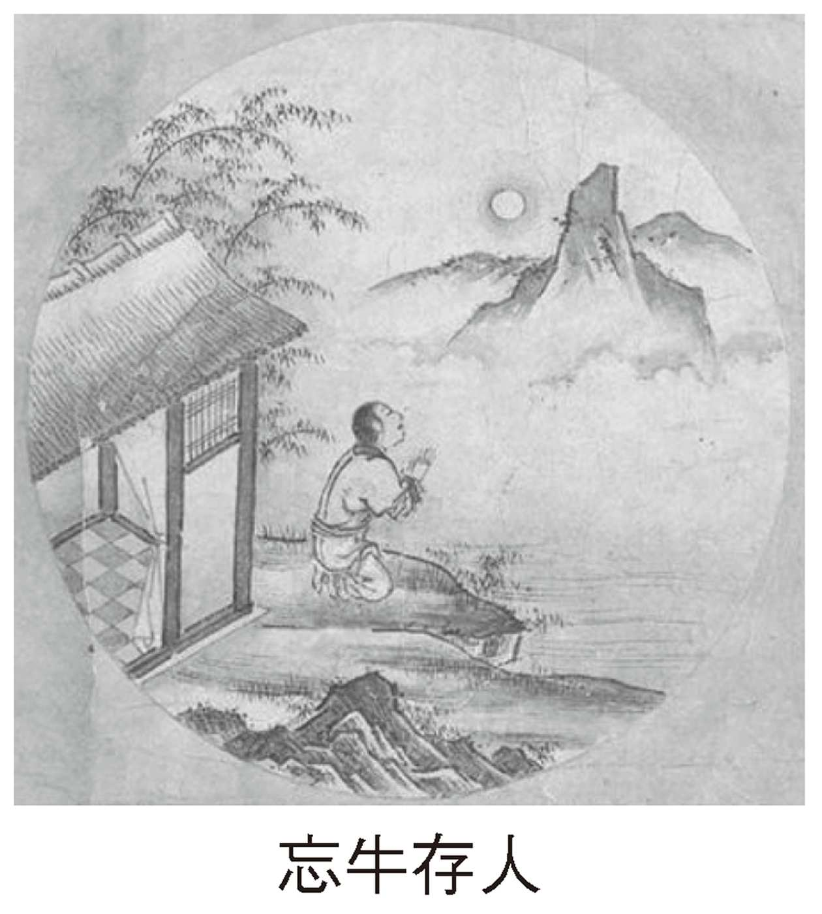
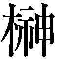

| 「清貧」という生き方 | |
| 岬龍 一郎 | |
| 株式会社ＰＨＰ研究所 (2011) | |

「清貧」という生き方
岬 龍一郎
生活のレベルが少し下がっても、
心の豊かさがもう一段だけ向上すれば、
失うものは何もない。
余分な富を持つと、余分な物しか購入しない。
魂が必要としているものを購入するのに、
金銭など必要ないのである。
ヘンリー・Ｄ・ソロー『森の生活』（佐渡谷重信訳）
戦後が目指した高度文明社会とは何だったのか
いらだちと得体の知れない不安が、いま、日本の社会に渦巻いている。
日本はどうなってしまうのだろうか。
わたしたちは何を求めてここまで来たのだろうか。
そして、これから何を目指して、どこへ行くのだろうか......。
あの夢想だにしなかった東日本大震災のあと、わたしはずーっと重たい気分で考えています。戦後営々と築き上げてきた文明社会とは何だったのか、そこで生きる「人生」とはどのようなものであったのかを......。人は誰しも、この世に生を受けた以上、「幸福に暮らしたい」「楽しい人生を送りたい」と思いながら生きています。ですが、あの震災はいい人も悪い人も関係なく一瞬のうちに、海の 藻 屑 や 瓦 礫 の山に変えてしまいました。
しかも、震災だけならまだしも、文明の象徴であった原子力発電の事故で、得体の知れない放射線の恐怖にさらされています。
たしかに目に見える表向きの生活は、親世代とくらべれば格段の便利さと快適さを得ました。それは人類史上最高の〝 賛沢な生活〟 を享受しているといえるでしょう。だが、その内実はどうでしょう。人々の心は誰もが満たされ「幸福」を感じているといえるでしょうか。
すでに大震災が起こる前から、わたしの心の中には一抹の不安がありました。それは近代の科学的合理主義という考え方に対する〝 おぼろげな不安〟 でした。
科学の長足の進歩は原発を作りコンピューターや携帯電話を発明し、生活も豊かになりました。ですがその反面、地球環境は破壊され温暖化をまねき、平和利用の原子力がいまや目に見えない恐怖となっています。
その一方で、社会環境はめまぐるしく変わり、多忙に追いかけられる日々は、わたしたちの心から優しさやゆとりを奪い、白夜のような眠らない街で、人々はモルモットのように走りまわり、たまの昼下がりに喫茶店で息抜きしていても携帯電話で呼び出される始末です。
わたしたちは表向きの「いい生活」はできるようになりましたが、果たして「いい人生」を送っているといえるのでしょうか。要するに戦後社会をリードしてきた科学的合理主義という考え方は、見てくれがよいだけの〝 欠陥住宅〟 を作ったようなもので、その内実はあちらこちらに致命的な欠陥を抱えた社会を作ってしまったのではないか、というのがわたしの偽らざる思いなのです。
目指すは橘曙覧の生き方
「いい人生」とはどのようなものでしょう。これからのわたしたちはどう社会と接して生きればいいのでしょう。そんな思いに悩んでいるときに出会ったのが、これから紹介する本書の主人公・ 橘 曙 覧 という人だったのです。
すでに平成六年六月のことになりますが、天皇・皇后両陛下が初めてアメリカを訪問されたとき、その歓迎レセプションでクリントン大統領が、日米親善をたたえて、
たのしみは 朝おきいでて 昨日まで
無かりし花の 咲ける見る時
という歌を詠まれました。
じつはこの歌こそ橘曙覧の『独楽吟』に出てくる歌だったのです。恥をさらせば、わたしは曙覧の名前だけは文学史で覚えていましたが、この歌を知らなかったばかりか、その人柄についてもほとんど知りませんでした。こんな素直な歌を詠む橘曙覧とはどのような人なのだろうか。これが本書を執筆した動機です。
調べていて、わたしは曙覧の人柄に魅了されました。曙覧は幕末の福井に生まれた歌人ですが、歴史上かくべつ名を成し、功を遂げた人ではありません。歌人としても無名に近い。
だが、その才能は天才といわれるほどで、福井藩主・松平 春 嶽 公がその才を惜しみ、再三の仕官を要請しましたが、曙覧はそのたびに断り、 市 井 の中でひっそりと、自然を愛し、家族を慈しみ、利欲を求めず、かといって世を恨むことも愚痴ることもなく、ただひたすら自分の魂に忠実に生きた人だったのです。
曙覧がなによりも素晴らしいのは、貧にありても窮することもなく、衆にありても高ぶらず、あるがままをあるがままに歌い、たわいない日常生活のすべてを「たのしみ」に変えてしまう心をもち、「清貧」の中でも人生を楽しく、充足して生きた人であったということです。その姿はまさに「人生の達人」「たのしみの名人」と呼ぶにふさわしい人でした。
その証拠は、巻頭に紹介する『独楽吟』の歌を読めば一目 瞭 然 ですが、彼はその歌で今日のわれわれが忘れてしまった〝 幸福の原点〟 といったものをあますところなく示しています。
そして、その生活をつらぬいていた信条は「 嘘 いうな、物ほしがるな、 体 だわるな」の三訓。別言するなら「正直であれ」「 賤 しくなるな」「体を惜しむな」ということですが、曙覧は、最低、この三原則を守って生きれば、特別お金持ちにならなくても、出世をしなくても、人は充分に幸福になりえることを教えてくれるのです。
西洋の詩人の言葉に「詩的に生きることは詩をつくるよりむずかしい」というのがありますが、曙覧の人生はまさしく「詩的」であった、というべきでしょう。そしてその生き方は、 豊 饒 の海で 溺 れかけている今日のわれわれに「幸福になるための条件」を示唆し、同時に人が人として生きるための〝 本当の豊かさとは何か〟 ということを教えてくれるのです。
平成二十三年八月吉日
岬 龍一郎
「清貧」という生き方 目次
「人生で大切なのは、少しの希望、少しのマネー、そして少しの勇気だ」（チャップリン）
装丁──印牧真和
制作協力──有限会社メディアネット
＊本書は、『「たのしみ」な生き方』（神一行＝当時の筆者名、角川書店、二〇〇一年）に加筆修正のうえ、発刊しました。
たのしみは 草のいほりの （１） 筵 敷 き ひとりこころを 静めをるとき
たのしみは （２） すびつのもとに うち倒れ ゆすり起こすも 知らで寝し時
たのしみは 珍しき 書 人にかり 始め一ひら ひろげたる時
たのしみは 紙をひろげて とる筆の 思ひの外に 能 くかけし時
たのしみは 百 日 ひねれど 成らぬ歌の ふとおもしろく 出できぬる時
たのしみは 妻 子 むつまじく うちつどひ 頭ならべて 物をくふ時
たのしみは 物をかかせて 善き価 惜しみげもなく 人のくれし時
たのしみは 空暖かに うち晴れし 春秋の日に 出でありく時
たのしみは 朝おきいでて 昨日まで 無かりし花の 咲ける見る時
たのしみは 心にうかぶ はかなごと 思ひつづけて 煙草すふとき
たのしみは 意 にかなふ 山水の あたりしづかに 見てありくとき
たのしみは 尋 常 ならぬ 書 に 画 に うちひろげつつ 見もてゆく時
たのしみは 常に見なれぬ 鳥の来て 軒遠からぬ 樹に鳴きしとき
たのしみは あき 米 櫃 に 米いでき 今 一 月 は よしといふとき
たのしみは 物 識 人 に 稀 にあひて 古 しへ今を 語りあふとき
たのしみは 門売りありく 魚買ひて 烹 る 鐺 の香を 鼻に 嗅 ぐ時
たのしみは まれに魚 烹 て 児 等 皆が うましうましと いひて食ふ時
たのしみは （３） そぞろ読みゆく 書の中に 我とひとしき 人をみし時
たのしみは 雪ふるよさり 酒の 糟 （４） あぶりて食ひて 火にあたる時
たのしみは 書よみ 倦 める をりしもあれ 声知る人の 門たたく時
たのしみは 世に解きがたく する書の 心をひとり さとり得し時
たのしみは 銭なくなりて わびをるに 人の来たりて 銭くれし時
たのしみは 炭 （５） さしすてて おきし火の 紅くなりきて 湯の煮ゆる時
たのしみは 心を （６） おかぬ 友どちと 笑ひかたりて 腹をよるとき
たのしみは 昼寝せしまに 庭ぬらし ふりたる雨を さめてしる時
たのしみは 昼寝目ざむる 枕 べに ことことと湯の 煮えてある時
たのしみは 湯わかしわかし 埋 み 火 を 中にさし置きて 人とかたる時
たのしみは （７） とぼしきままに 人集め 酒飲め物を 食へといふ時
たのしみは 客 人 えたる 折しもあれ 瓢 に酒の ありあへる時
たのしみは 家 内 五 人 （８） 五 たりが 風だにひかで ありあへる時
たのしみは 機 おりたてて 新しき ころもを縫ひて 妻 が 着 する時
たのしみは 三 人 の児ども すくすくと 大きくなれる 姿みる時
たのしみは 人も 訪 ひこず 事もなく 心をいれて 書 を見る時
たのしみは 明日物 （９） くると いふ 占 を （10 ） 咲くともし火の 花にみる時
たのしみは （11 ） たのむをよびて 門あけて 物もて来つる 使ひえし時
たのしみは （12 ） 木の芽 やして 大きなる 饅 頭 を一つ ほほばりしとき
たのしみは つねに好める 焼豆腐 うまく烹たてて 食はせけるとき
たのしみは 小豆 の 飯 の 冷えたるを 茶漬け （13 ） てふ物に なしてくふ時
たのしみは いやなる人の 来たりしが 長くもをらで かへりけるとき
たのしみは 田づらに行きし わらは等が 耒 鍬 とりて 帰りくる時
たのしみは 衾 かづきて 物がたり いひをるうちに 寝入りたるとき
たのしみは わらは墨する かたはらに 筆の運びを 思ひをる時
たのしみは 好 き筆をえて 先づ水に ひたし （14 ） ねぶりて 試みるとき
たのしみは 庭にうゑたる 春秋の 花のさかりに あへる時時
たのしみは ほしかりし物 銭ぶくろ うちかたぶけて かひえたるとき
たのしみは 神の御国の 民として 神の教へを ふかくおもふとき
たのしみは 戎夷 よろこぶ 世の中に 皇 国忘れぬ 人を見るとき
たのしみは （15 ） 鈴 屋 大 人 の 後に生まれ その御 諭 しを うくる思ふ時
たのしみは 数ある書を 辛 くして うつし 竟 へつつ とぢて見るとき
たのしみは 野寺山里 日をくらし やどれといはれ やどりけるとき
たのしみは 野山のさとに 人 遇 ひて 我を見しりて （16 ） あるじするとき
たのしみは ふと見てほしく おもふ物 辛くはかりて 手にいれしとき
〔語釈〕 （１）土間に筵が敷いてあった。 （２）火鉢。 （３）何ということなしに。 （４）焼くこと。 （５）火の中に炭を入れたまま。 （６）遠慮しない。 （７）物や金がないが。 （８）曙覧夫婦、その子 今 滋 ・菊蔵・早成。 （９）くれる。 （10 ）光る。 （11 ）頼みになる人。 （12 ）茶。 （13 ）という。 （14 ）なめる。 （15 ）本居宣長。 （16 ）客の接待。
（水島直文・橋本政宣編注『橘曙覧全歌集』岩波文庫を参照）
人は誰しも、この世に生を受けた以上、「幸福に暮らしたい」「楽しい人生を送りたい」と思いながら生きている。だが、多くの人は、その願いもむなしく、日々の雑多な忙しさにかまけて、歳月を無意味に過ごし、「わたしの人生はこれでいいのか」「もっと楽しい生活はないのか」と思いながら、一生を送ってしまう場合が多いのではないだろうか。
若かりしころ描いた夢は、とっくの昔に消え去り、いまはただ組織の歯車として、あるいはどこにでもいる厚顔無恥な「おじさん」「おばさん」となって、ただただ日常の生活に追いたてられ、「政治が悪い」「給料が少ない」「税金が高い」「体の調子が悪い」などといって、不平不満の愚痴を 鬱 憤 ばらしと思って、ばらまいている人になってはいまいか。
そんなとき、わたしにはいつも思い出す人がいる。それが、これから紹介する橘曙覧という人である。
この人は、江戸末期、福井県で生まれた歌人である。歴史上、かくべつに名を成し、功を遂げた人ではない。歌人としても無名に近い。多くの読者もその名を知る人はまれであろう。みずからも、
歌よみて 遊ぶ外なし 吾はただ
天にありとも 地 にありとも
と歌っているように、ただの歌詠みである。もともとは大商家の後継者であったが、その仕事が自分にあっていないと、みずからその地位を捨て、甘んじて清貧を友とし、名を求めず、利も求めず、ひたすら歌だけを歌い、悠々自適な人生を過ごした人である。
だが、その歌詠みの才能は〝 天才〟 といわれるほどで、幕末の 四 賢 侯 といわれた福井藩領主・ ＊ 松平春嶽公が、その才能を惜しんで仕官することを再三要請したが、そのたびに断り、市井でひっそりと、自然を愛し、家族を慈しみ、孤高に生きた人だった。
１８２８年（文政11 年）生まれ。幕末の大名。 田 安 斉 匡 の八男として生まれ、１８３８年（天保９年）に福井藩主松平 斉 善 の養子となり、その後福井藩主となる。有能な人材の登用や富国強兵政策など積極的な藩政運営により、幕末の四賢侯の一人といわれたが、将軍の継嗣問題に関係して大老井伊 直 弼 の不興を買い、一時隠居・謹慎していた。その後、政事総裁職に就き、公武合体路線を推進。維新後は数々の役職に就く。１８９０年（明治23 年）没。
こういうと、なにか世をすねた〝 変わり者〟 のように聞こえるかもしれないが、もちろん曙覧は変人ではない。かといって説教がましい 隠 遁 者でもない。どの村やどの町にもいそうな、ごく普通のおだやかな人柄の人であった。ここがいいのである。
功成り名を遂げんと夢に燃えている若い人たちには、そんな人物のどこに魅力があるのかと思われるだろう。血気さかんな若いころは「静」より「動」を好むものだし、 波 瀾 万丈に富んだ歴史上の有名人たちのほうに、より魅力を感じるかもしれない。
だが、その夢を削りながら、だんだん年をとって、社会的経験とやらを積んで人生の酸いも甘いもかみしめてくると、無私無欲とも違う、あえていえば無為自然の、そう、ただ流れる雲のように悠々と生きた曙覧の人生が、いかに貴く、いかに尊厳に満ちた美しい生き方であるか、わたしも中年と呼ばれる年になって、初めてわかるようになったのである。
人を純粋に愛し、自然と調和し、家族を大切に思い、利欲を求めず、かといって世を恨むことも愚痴ることもなく、ただひたすら自分の魂に忠実に生きた橘曙覧。文字で書くと簡単なように思えるが、こうした生き方は、求めようとしてもなかなかできるものではない。
西洋の詩人が「詩的に生きることは詩をつくるよりむずかしい」といっているが、曙覧の人生はなによりも「詩的」であった。そして、なによりも素晴らしいのは、生活のすべてを「たのしみ」に変えてしまう心をもち、人生を楽しく充足して生きたということである。その生き方はまさに「人生の達人」と呼ぶにふさわしい姿だったといえる。
たとえば、橘曙覧の歌としてもっとも有名なものに「たのしみは」で始まる『独楽吟』というものがあるが、これを読めば、曙覧の人柄はもちろんのこと、今日のわれわれが忘れてしまっていた「 幸福 」を、胸にしみいる三十一文字の歌で教えてくれるのである。
たのしみは 珍しき 書 人にかり
始め一ひら ひろげたる時
たのしみは 妻 子 むつまじく うちつどひ
頭ならべて 物をくふ時
たのしみは 常に見なれぬ 鳥の来て
軒遠からぬ 樹に鳴きしとき
たのしみは 心にうかぶ はかなごと
思ひつづけて 煙草すふとき
どれもみな物質的には貧しい生活のなかで、生きる喜びの一瞬を歌ったものであるが、この晴れやかな心ばえはどうだろう。読めば読むほどその情景が目に浮かび、ほのぼのとした幸せが心にしみ込んでくるではないか。
あの幕末の 喧 騒 のなかで、このような自由で 斬 新 な生活歌をつくった人がいた、ということ自体すでに感嘆を禁じえないが、曙覧はこの種の歌を全部で五十二首残している。それらは巻頭で紹介したとおりであるが、その歌の心は「至誠」（まごころを尽くすこと）にして「素直」。すなわち、なにごとにも正直で、一片の邪心もなく、心に浮かぶよしなしごとを思うがままに詠んでいるのである。
これはできるようでできるものではない。人は才能があればあるほどその才に 溺 れ、技巧を凝らし、奇をてらい、自慢したくなるものだが、曙覧の歌にはまったくそれが見られない。あるいはまた、人は自分の恥部となるものは隠したがるものだが、曙覧にはそれすらもない。あくまでも自然であり、赤裸々である。こうした歌を歌えるということは、心が自由であり素直でなければ生まれてくるものではない。
この曙覧の歌を最初に高く評価したのは福井藩家老の ＊ 中 根 雪 江 であった。雪江は松平春嶽公とともに一橋 慶 喜 （徳川十五代将軍）の擁立、公武合体運動を推進した幕末の有名人である。
じつは、その彼が曙覧に歌を教えたのだが、「余は始めの程こそ先達めきて物しつれ、いまはかなわぬ」といって、あとには曙覧の弟子になっている。その雪江が曙覧の歌を、
「その歌風はしだいに境を高めていって、世のありきたりの風を 抜 ん出て、何よりも 上 世 の心ばえを 主 んじ、世間に起こることや意表に思うことどもを、ただそのままに詠みあげている」
と、その歌の斬新さを高く誉めたたえたのであった。
１８０７年（文化４年）生まれ。福井藩士。 側 用 人 ・中根衆諧の子。藩主・松平春嶽を補佐して、積極的な藩政改革を実施。政争に巻き込まれて一時失脚するが、その後側用人として復帰。国学をよくした。維新後は隠居し、１８７７年（明治10 年）没。
だが、それだけなら曙覧は、おそらく江戸末期の福井における歌人として歴史のなかに埋没していたであろう。しかし、誰の胸にも自然としみこんでくる曙覧の歌を、天は地方歌人のままにはしておかなかった。江戸が明治という新しい時代を迎えたとき、一人の天才が「曙覧こそ 実 朝 以後のただ一人の歌人である」と、絶賛の評価をあたえたのである。
その天才の名を ＊ 正 岡 子 規 という。
いうまでもなく子規は、明治期の歌壇・俳壇をリードした日本の代表的歌人であり、和歌・俳句の革新を唱導した人物である。子規の有名な『歌よみに与ふる書』によれば、彼はそのなかで「貫之は下手な歌よみにて......」といった鋭い語調で『古今集』歌人を否定し、『万葉集』を高く評価した人物でもあった。
その彼が明治三十二年（一八九九年）四月の「日本新聞」で、めずらしくも曙覧の歌を賞賛したのである。それは曙覧の死後（没年は明治改元直前の慶応四年〈一八六八年〉八月二十八日）、三十余年が過ぎたころであったが、いわば曙覧はこのとき初めて中央歌壇に認められたのである。
とはいえ曙覧は、生存中に無名だったからといって、そのために自分の不遇をかこつような人柄でもなかった。だから正岡子規に認められたからといって、そのことを草葉の陰で喜んだかどうかわからない。が、これを機に文学史の教科書に掲載される歌人となったことは事実である。
試みに手元にある高校の文学史の教科書を見ると、「（江戸）後期になると、江戸の 賀 茂 真 淵 一門に対して、京都で小沢 蘆 庵 が出て......それを受け継いで香川 景 樹 が、自然で流麗な歌風を打ち立て......幕末歌壇に大きな勢力を占めた。これらの流派の外で、それぞれの生活と心情に密着した作歌活動をした人に良寛をはじめ橘曙覧、平賀 元 義 らがいる」と、ちゃんと出ている。もちろん『 広 辞 苑 』をはじめとする大きな辞書にも、橘曙覧の名は紹介されている。これらは正岡子規の評価があったからこそといっても過言ではない。
１８６７年（慶応３年）、 伊 予 松山生まれ。俳人、歌人。帝国大学国文科中退。政治、哲学を志した後、幸田露伴に傾倒するが認められず、歌の道に進む。カリエスにより寝たきりの生活になるが、病床より積極的な創作、評論活動を展開する。代表作に『墨汁一滴』『 病 牀 六尺』など。夏目 漱 石 とは学生時代からの親友。１９０２年（明治35 年）没。
では、子規は曙覧をどのように賞賛したのか。原文では繁雑になるので、現代文で要約して述べてみる。
「ある人が私に『 俊 頼 集』『文雄集』『曙覧集』の三冊を読んでみよと薦めてくれた。前の二冊は、ちょっと変わった語を用いた程度でそれほど珍しくもなく大いに失望してしまったが、橘曙覧の『 志 濃 夫 廼 舎 歌集』を見て、初めて、これは大した歌集だと驚いてしまった。その歌は、『古今集』『新古今集』のありきたりの古くささがなく、賀茂真淵、香川景樹のように月並みでもなく、万葉に学びながら万葉でもなく、日常一般の生活を思うがままに歌いながら、いささかの俗気もない。歌といえば、誰しも花や月の風雅を貴しとするのに、そのようなことは捨てて、直接に自分の心を歌に詠んでいる。それでいて、その見識は高く、凡俗を超越している。
こんなすばらしい歌人を世間の人は知らない、とは何ということか。
曙覧は、徳川時代の最後に出たが、初めて旧弊の歌に活眼を開いたもので『新言語、材料を入れてはいけない』という昔からのしきたりを一挙に破って、歌の世界の改革の一歩を進めたのである。
曙覧の歌は、『万葉集』や（源）実朝の歌にはおよばないにしても、 紀 貫 之 以下、今日までの幾百の歌人を圧倒している。新しいことばを用い、新趣向を求めた彼の卓見は、歌学史上特筆して後世に伝えなければならない。曙覧こそは実朝以後のただ一人の歌人である。鶏群の中にあって一羽の鶴である。歌人として彼を賞賛するのに千万言をついやしても誉めすぎにはなるまい」
まさに絶大なる評価をあたえたのである。天才は天才を知る、との言葉があるように、天才・子規によって、曙覧はこのとき初めて〝 福井の歌人〟 から〝 日本の歌人〟 へと躍り出たのであった。
だが、子規は曙覧自身のことについては、それまで何も知らなかったようで、「書かれた内容によって推察するに、福井周辺の人、広く古学を修め、はやくから勤皇の志を抱き、松平春嶽公も和歌の師としていたようだ。しかしながら赤貧洗うがごとく、常にぼろ家に住み、世と 容 れなかったようである......」と記している。
後世の文芸評論家たちは、この子規の評価から曙覧を「清貧の歌人」と名付けているが、清貧であったのは曙覧だけではない。江戸の庶民はその多くが貧乏であり、しかも清らかに生きたのである。だから、むしろ「 清 廉 の歌人」というべきであろう。
なぜなら、曙覧の非凡なるところは、求められる立場にありながら、その名を求めず、利欲に走らなかったその生活態度こそ賞賛に値するものだからだ。もっといえば、和歌をもって官位を求めた宮廷歌人や、主人を誉めたたえてへつらう御用歌人らとは、その生き方をまったく異にし、ただ歌を愛し、ひたすら心のおもむくままに歌を詠んだ、その生き方にこそ曙覧の真骨頂があったといえる。
正岡子規の賞賛以来、橘曙覧の存在はたしかに文学史にも登場するようになり、 今 日 では『橘曙覧全歌集』（岩波文庫）も出版されている。だが、それは文学史上のことであり、一般の人にとっては、つい最近まで忘れられた存在だったといわざるをえなかった。ところが、意外なところから、その曙覧の歌を再評価する声があがったのだ。
意外なところとはどこか。それはわが日本ではなく異国のアメリカからだった。平成六年六月、天皇・皇后両陛下が初めてアメリカを訪問されたとき、クリントン大統領が歓迎のスピーチで曙覧の歌を読んだことから、一躍、彼は「世界の歌人」としてその名を 轟 かせたのである。その歌とは『独楽吟』のなかの次の一首である。
たのしみは 朝おきいでて 昨日まで
無かりし花の 咲ける見る時
わが国には万葉以来、数多くの歌集があり、もちろん曙覧より有名な歌人がたくさんいる。なのに、なぜクリントン大統領は日本では無名にひとしい曙覧の歌を選んだのか。伝聞するところ、大統領のスピーチ起草委員の中にかつてハーバード大学で、ドナルド・キーン博士英訳の曙覧の詩歌を学んだ委員がおり、その人が織り込んだものだという。それを受けて、クリントン大統領が曙覧の歌に日本文化の伝統的精神をたたえ、同時に、新たなる日米親善によって〝 昨日まで無かりし花〟 を築いていこうとする真意を込めたということである。
アメリカ人によって曙覧の歌が賞賛されたことに、日本人のわたしとしてはいささか寂しい気もするが、曙覧ファンとしては望外な喜びでもあった。また日本文化の研究がここまで進んでいることに、さすがはアメリカだと驚嘆せざるをえなかった。
少し余談になるが、日本文化の研究といえば、以前アメリカで「大和銀行不正事件」が起きたとき、あるアメリカ人から「日本には不正をきらう〝 ブシドー（武士道）精神〟 があったのに、あれはどこへいったのか」といわれたときも驚いた。正義を尊び、利欲に 溺 れぬことをモットーとし、戦前まで日本人の道徳精神といわれた〝 武士道〟 を、日本人よりアメリカ人のほうが知っていたのだ。これとて明治期の 新 渡 戸 稲 造 博士が英文で『武士道』を書いた 賜 物 である。橘曙覧にしろ、この武士道にしろ、いまや日本文化の精神は日本人よりアメリカ人のほうに理解されているのではないか、と思うほどだ。
こうした例はほかにもある。
例えば昨今、〝 経営の神様〟 として脚光を浴びている ＊ 上杉 鷹 山 の愛唱歌として知られる、
為せば成る 為さねば成らぬ なにごとも
成らぬは人の 為さぬなりけり
の有名な歌は、あのケネディ大統領の好むものであったという。ケネディ大統領は若いころ内村鑑三の『代表的日本人』（原書・英文）を読み、鷹山公に心酔していたのである。
また、 朝 河 貫 一 （福島県二本松市出身・戦前の歴史家）という人は、日本ではまったくの無名に近い人物であるが、アメリカの学界では「太平洋戦争の平和の使者」として、その名は広く知れわたっている。朝河は早稲田大学卒業後アメリカに留学してエール大学の教授になるのだが、あの太平洋戦争の前夜、命懸けで戦争回避のための努力をおしまなかった人なのである。
さらに文学でいうなら、東欧のブルガリアでは『とはずがたり』という日本の古典が出版され何万部か売れたというが、日本人のなかにはその名前すら知らない人のほうが多いのではないか。
いま外国ではどこの国へ行っても〝 日本および日本人〟 への関心は非常に高い。もちろん、それはいい意味ばかりの関心ではない。多くの批判もある。それは地球上のどの国へ行っても日本製品が出回っているからである。彼らはその進出をエコノミック・アニマルと、欲得の深さを批判しながらも、その一方ではこうした製品をつぎつぎに生みだす日本人の精神構造に興味があるようだ。
とくに最近は、地球環境の悪化にともない、自然と調和して生きてきた日本人の精神（東洋思想）をたたえる声も聞こえる。とはいえ、それは日本の古典を学んだ人たちの評価であり、すでに現在の日本人がそうした精神構造ではないことは、われわれ自身がいちばん知っていることである。
１７５１年（宝暦元年）江戸生まれ。大名。 日向 高 鍋 藩主の二男として生まれ、その後 出 羽 米沢藩主の養子となり、１７６７年（明和４年）同藩藩主。窮乏していた藩政を救うため、殖産興業や他藩の技術の導入、反対派の追放など、陣頭に立って積極的に改革運動を推進、大きな成果を上げる。１８２２年（文政５年）没。
なぜなら、今日の日本は、大量生産・大量消費のなかで物だけは豊かになったが、それにともない国家をあげて拝金主義者となって、効率と利益だけを追求し、余裕のない生活に追われているのが現在人の姿だからである。とても、クリントン大統領がたたえた曙覧の歌のように、「昨日まで無かりし花の咲ける見る時」などといった〝 心の余裕〟 など、すでにどこかへ置き忘れてしまっている。かつて、誰もがもっていた、あの正直さや利欲を求めない清貧なる心はどこへいってしまったのか......。
曙覧はこう歌うのである。
たのしみは あき 米 櫃 に 米いでき
今 一 月 は よしといふとき
米櫃がカラになって心配していたが、どうにかまたいっぱいになって今月も暮らせそうだとよろこび、こうした貧しい状況にありながらも、
たのしみは 空暖かに うち晴れし
春秋の日に 出でありく時
と、ポカポカ天気の春秋の一日、澄みわたる青空のもとでの散歩を楽しんでいるのである。なんと優雅な心であることか。なんと清らかな心であることか......。
僧源信という人が著した『往生要集』のなかに、
「足ることを知らば、貧といへども富と名づくべし。財ありとも欲多ければ、これこそ貧と名づくべし」
との言葉があるが、まさにその通りである。いかに金持ちであってもまだ足らないと思っている人は心貧しき人であり、もうこれで十分だと思っている人は、貧乏であっても、それはけして貧乏とはいわないのである。
だが、そのことを忘れた多くの日本人は、人より少しでも金持ちになろうと、家族よりも仕事を大事にし、他人を押しのけ、ワーカホリックといわれるぐらいに働き、挙句のはては、ストレスだ、やれ成人病だと、半病人になっている始末である。その結果、たしかに物質だけは便利で豊富になったが、その反面、人情はなくなり、心は荒れすさび、より「幸福」になったとの実感は誰ももっていない。
人間は物質だけ豊かになっても、けして幸福にはなれないのである。
本当の「 幸福 」とは何であるのか、そうした思いを抱くとき、わたしはこの橘曙覧の歌に人生の深遠を教えられるのである。
ところで、わたしがあえて本書を執筆したいと思った動機は、なにも橘曙覧の歌論や文学史的研究をしたいがためではない。また、そんな才能も持ちえていない。あくまでも曙覧の生き方そのものに人生の真髄を見たからであり、これぞ「人生の達人」「たのしみの名人」としての 憧 憬 を禁じえなかったからである。できうれば、その精神の百分の一でも学んで、自分の人生の終末を迎えたとき「ああ、わたしの人生は楽しかったなァ」といえるような生き方ができればと思ったからである。
では、このような橘曙覧の性格はどのようにして 育 まれ、どのような環境で培養されたのか。まずは本論に入る前に、橘曙覧の半生をざっと紹介しておこう──。
橘曙覧は、文化九年（一八一二年）五月、越前福井城下の石場町（いまの福井市つくも一丁目）で生まれた。時代でいえば十一代将軍 家 斉 の、いわゆる文化・文政といわれる江戸文化の 爛 熟 期 のころである。
だが、すでに徳川幕藩体制は経済的 破 綻 をきたしており、各地では百姓 一 揆 が頻発し、曙覧が二十六歳のときには、大坂町奉行所の元与力であった大塩平八郎が内乱（一八三七年）をおこすなど、幕末の風雲が遠くにたなびきはじめたころであった。
曙覧の生家は、福井城下で筆・墨・紙などを商う 大 店 。父親の名前を 正 玄 五 郎 右衛 門 といい、母の名を 都 留 子 といった。曙覧はその二男として生まれたが、長男が早逝したので事実上の長男であった。だが、その母は曙覧が二歳のときに他界し、そのため曙覧は母の実家の山本家（酢醸造業）で養われている。
系図によると正玄家は、奈良時代の左大臣橘 諸 兄 の 末 裔 にあたり、 崇 徳 天皇の 御 代 （一一二三～四一年）には紀州田辺の領主であったという。その後、 飛 騨 守 になった者があったことから、越前に移住し、その子孫が「橘七邸」と呼ばれる七族にわかれ、正玄家もその一族に名を連ねたのであった。曙覧の時代にも橘宗覧という本家があり、藩の御用をあずかる豪商が存在する。
事実、『越前国 名 蹟 考』にも「その姓氏まさしく橘諸兄公の正統なり」としるしている。いわば曙覧の先祖は皇族につながる血筋なのである。のちに曙覧は国学を学び、その政治的思想は勤皇を唱えるが、その根源はここらあたりにあるのだろう。
曙覧は幼名を五三郎といい、成人して 尚 事 とあらため、橘曙覧というのはさらにそのあとの名である。もちろんその由来は先祖の橘からとったものであり、名前の曙覧はタチバナの実が赤いことから名付けたとしている。
曙覧は少年時代を母の実家で過ごすが、十五歳のとき、こんどは父正玄五郎右衛門が四十四歳の若さで死亡した。母に先立たれ、父にも死なれたその 哀 しみはいかばかりかと思うが、その心情を曙覧は父の十七回忌のときに、こんな歌で表している。
髪しろく なりても親の ある人も
おほかるものを われは親なし
自分の髪が白くなっても親のある人は多いというのに、ああ、わたしには両親ともいない、と三十一歳の曙覧が歌っているのである。その哀しみや 憐 れ。家族的な愛情には恵まれなかったといえる。
本来なら、父が死亡したとき曙覧は正玄家を継ぐべきところだったが、まだわずかに十五歳という年齢のこともあって、 伯 父 の志田垣五次郎夫婦が後見人となって正玄家をまかなった。
曙覧は両親の死で人の世の無常を感じたのか、父の死後すぐに日 宗妙泰寺の仏門に入り、その寺の住職・ 明 導 に就いて仏学を学んだ。僧明導は漢籍にあかるく、詩歌にも通じていたので、のちの曙覧の学問的基礎はこのときにたたきこまれたと思える。
やがて三年後、十八歳になったとき曙覧は仏門を離れ、家業を継ぐために正玄家にもどった。正玄家は伯父夫婦が異母弟にあたる 宣 （曙覧より六歳年下）を助けて家業をみていたが、どうも曙覧には商売というものになじめなかったようだ。というより、すでに伯父夫婦と継弟が親密な〝 家族関係〟 を築いていたので、そのなかに溶け込めなかったのだろう。
その反動からか、曙覧は茶屋遊びにほうけている。そこで 親 戚 一同が将来をおもんぱかって、嫁をもらえば 放 蕩 もおさまるだろうと、 天 保 三年（一八三二年）、直子という嫁を 三 国 の富商から迎えた。曙覧二十一歳、直子十七歳のときである。しかし、それでも曙覧の遊びはなおらなかった。後に 隠 遁 者のような生活をおくる曙覧にも、そんな放蕩時代があったのだ。
ところが、その伯父も翌年の天保四年（一八三三年）に亡くなってしまった。すでに曙覧も二十二歳。今度ばかりは遊びほうけているわけにもいかず、おのずから大店・正玄家の主人となった。
だがそれでも、性格的に金勘定の商売より学問のほうが性にあっていたのか、家業をほったらかして、当時福井に来訪していた〝 漂泊の学者〟 といわれていた尚平という国学者のもとで古歌や国学に没頭した。このとき先の中根雪江と知り合っている。もちろん、こうした状態だから家業がうまくいくわけがない。そこで曙覧は継弟の宣に家業を譲ってしまうのである。
古い伝記類を見ると、「曙覧は巨万の富を惜しげもなく 抛 ち、弟の宣に譲与して 瓢 然 として 足羽 山 （いまの福井市足羽一丁目）に隠居した」などと書かれているが、今日の研究では曙覧はもともと商売にむかず、借財をつくったりして、ほとほと商売に嫌気がさして継弟の宣に譲ったというのが真相のようだ。時に天保十年（一八三九年）、曙覧二十八歳のときである。
こうした曙覧の経歴は、曙覧の長男・ 今 滋 が記した『橘曙覧小伝』によるものだが、その彼は岐阜県師範学校長まで務めた教養人である。
曙覧は生前、自分の歌集を整理して出版する計画をもっていたようだが、それがかなわぬまま死去した。そこで、その遺稿をまとめて発表したのが、この今滋だったのである。父の遺言によりその姓を井出と名のるが、この今滋がいなかったならば、のちに正岡子規の目に留まることもなかったであろう。
『橘曙覧遺稿 志濃夫廼舎歌集』と題されたその出版年時をみると、明治十一年（一八七八年）とある。おそらく曙覧の十三回忌を機して身内の関係者だけに配られたものと思える。部数未詳。
ところが、前述したようにそれが明治三十二年（一八九九年）になって正岡子規に認められたことから、一躍、曙覧の歌集を求める人があとをたたなかったため、明治三十六年（一九〇三年）九月、東京冨山房より市販本の『橘曙覧全集』が出版された。この全集に嫡子今滋が記すところの「橘曙覧小伝」が掲載されていて、今日、われわれが曙覧を知る資料となっているのである。
さて、その「小伝」によると、先の家業譲渡の件については、「遂に意を決して、祖先相伝の家業を挙げて弟宣に譲り、飄然として城南の足羽山に退去し、専ら文学に従事す」とあるだけで真相は詳述していない。ただいえることは、やはり商売が嫌だったと見え、その少し前には家業をそっちのけで京都の 頼 山 陽 の高弟である児玉三郎の塾に入ったり、譲渡したその年にも江戸に遊学して数か月遊ぶとある。
とはいえ「小伝」にあるように、家業を捨てた二十八歳の曙覧がすぐさま足羽山に 隠 棲 し、歌人として独立したとは考えられない。なぜなら、このときはまだ歌人としても無名で、『志濃夫廼舎歌集』を見ても二十歳代の歌は一首もなく、そのためか歌人としてはめずらしく恋歌がひとつもないのである。本格的に歌を詠んだのは三十歳を過ぎてからであろう。
したがって足羽山への隠棲が何年であったかは、ほかにも説があり断定できない。はっきりしているのは、曙覧が歌学の道で生きようと決意するのは、飛 高山に住む 本 居 宣 長 の高弟、 ＊ 田中 大 秀 に入門（弘化元年・一八四四年）し、帰郷したあとからである。
田中大秀とは、江戸後期の国学者として一門を構える大家で、『万葉集』のほか中古の物語・日記文学にすぐれた功績があり、『竹取翁物語解』は今日でも価値ある名著とされている人物である。
曙覧は、はやくからこの人物に私淑しており、文通で師弟の関係をつづけていた。何度も入門しようと思うが飛 高山は遠い。そんなとき、曙覧三十三歳のこの年（弘化元年）、ただ一人歌の道にはげむ曙覧をまたしても不幸が襲った。 可愛 がっていた三女の 健 子 が天然痘にかかってわずか四歳で死んでしまったのだ。その哀しみを歌ったものに、
きのふまで 吾が衣手に とりすがり
父よ父よと いひてしものを
というのがあり、曙覧は深い哀しみのなかに沈んでいる。家にいるとなにかにつけて死んだ健子のことが思い出されて勉学も手につかない。
そこで、この哀しみから逃れるために高山の大秀の門を 叩 いたのである。ちなみに曙覧が大秀に入門したときに出した名票が、現在、高山史料館に所蔵されている。表に「越前国福井里民、正玄五三郎、橘尚事」とあり、裏には「天保十五年八月十三日、尚事三十三歳」と書かれている（天保は十四年十二月二日に改元されているので、これは弘化元年の誤り）。すでに家業を捨てた時点で五三郎の名を尚事にあらためているが、橘の姓は師匠の大秀から「号」として命名されたようだ。
１７７７年（安永６年）生まれ。国学者。飛騨高山の薬種商の子として生まれる。25 歳のとき本居宣長の最晩年の弟子となり、師の死後は各地で修業を重ね、45 歳のときから学問研究に専心。『竹取翁物語解』『土佐日記解』などの著作がある。１８４７年（弘化４年）没。
高山遊学はわずか半月あまりであったが、曙覧は大秀から直々に本居宣長譲りの国学を学び、和歌の道を伝授された。
大秀に会ったときの感激を、曙覧は長歌および反歌が収められている『 藁 屋 詠草』のなかで、こう詠んでいる。
反歌
年まねく 慕ひ奉りし わが 大 人 を
正 目 に見つる 今日のたふとさ
今日まで長年のあいだ、ひそかに敬仰の心をささげていた師の顔を、いまは目の前で仰いでいる、こんな貴いことはない、との意味である。そして曙覧は、その別れのとき、大秀からの教えを忘れないようにと師匠から、国学の大家である本居宣長の 諡 号 「 秋 津 彦 美 豆 桜 根 大 人 之 霊 位 」を書いてもらい、そまつなわが家の床の間に奉って精進することを誓っている。
帰郷した曙覧は、いまだしばらく独学で勉強していたようだが、やがて歌詠みとしての自信もついたのか、いよいよ歌詠み一筋の生活に入ろうと、このころ足羽山に隠棲したと考えられる。それは高山の遊学から二年後の弘化三年（一八四六年）、曙覧三十五歳のときであった。
曙覧は足羽山で住むあばら家を「 黄 金 舎 」と名付けた。もちろん逆説的な 比 喩 である。身は貧窮のなかにあっても心は黄金のように輝いているとの意味だ。
いかに田舎での生活とはいえ、当時、学問だけで自活するのは容易なことではない。あの本居宣長ですら小児科の開業医であり、師匠の大秀でさえ薬種業を営んでいたのである。
だが、曙覧はいっさいの世俗的な職業を捨てて歌詠みだけの生活に入った。歌集から想像するに、その生活の糧は門弟からの援助、寺子屋の謝礼、書の潤筆料などによったものと思われるが、そんなものはたかがしれている。
だが、たとえ住む家があばら屋であったとしても、日々の生活が貧しくあったとしても、自分の好きな道で暮らしていけることを考えれば、それはいかなる御殿に住むよりも曙覧にとっては「黄金舎」に思えたのだろう。
こうして曙覧の「歌詠み」としての新しい人生の一歩が、この黄金舎からはじまるのだが、その決意の表れは『志濃夫廼舎歌集』の巻頭の歌からも察することができる。
曙覧はこう歌う。
あるじはと 人もし問はば 軒の松
あらしといひて 吹きかえしてよ
主人がいるかと人が聞いたら、軒の松に吹く風よ「あらし」（あらじ＝いない）といって吹き返しておくれ、との意味だ。『志濃夫廼舎歌集』は一部に順不同のものがあるが、そのほとんどが詠んだ順にならべられてある。したがって、順序からすれば田中大秀に関する歌が先に登場してしかるべきだが、その歌を後にまわし、この歌が何よりも先に巻頭を飾っているということは、それだけ曙覧が重要視したからである。つまり、曙覧はわが歌詠みの人生はここから始まると、「歌集」の冒頭にみずからの気概を込めてここに宣言したのである。
そして次いで三番目に、次の歌を置いた。
かき寄せて 拾ふもうれし 世の中の
塵 はまじらぬ 庭の松の葉
この歌こそ黄金舎でのよろこびを高らかに歌ったものである。「塵はまじらぬ庭の松の葉」という文句に、自分の家には世俗的な汚れはまったくないと、俗世間との不浄の縁をたちきり、孤高に生きる清浄たるさけびが込められている。こうして「歌詠み・橘曙覧」が誕生したのである。
やがて二年後、曙覧三十七歳のとき、足羽山から町はずれの三ッ橋（いまの福井市照手二丁目）というところに住居をかまえ、そこを「藁屋」と称して終世の 住 処 とするが、明治と改元される直前（慶応四年・一八六八年）の八月二十八日、五十七歳で没するまで「歌詠み」としての生涯をまっとうしたのであった。
曙覧は三十五歳にして独立した。当時の平均寿命からすればすでに初老である。妻も子もいる。にもかかわらず彼は、一般の人のように土にまみれて稲や野菜をつくるでもなく、網を張って魚を 獲 るでもなく、ただ歌詠みの道をめざした。
いまでいえば脱サラして、プロの「歌人の道」を歩きはじめたようなものである。だが今日のようにマスコミが発達しているわけでもないので、発表する場所もなく、幾人かの門人たちを集めて指導したにすぎない。だから、こんなことをして家族を養っていけるのか、といった不安もあったろう。それは一人、道なき荒野を歩くようなものであったと推察する。
ましてや曙覧は、出家者のように悟りを開いたわけでもなく、 隠 遁 者のように世を捨てたわけでもない。たまたま商売が性にあわず、ただ心静かに歌を詠みたかった〝 普通の人〟 であった。
普通の人ならば、いかに自分で決めた道とはいえ、その苦労に耐えかねて、時としては暗くなったり、弱音を吐いたりするものだが、曙覧にはそのような暗さの歌はひとつもない。いつも心おだやかで日常の喜びにあふれている。このような精神力の強さはどこから生まれるのだろう、とわたしは感心するばかりである。
たとえば、この精神の崇高さは曙覧と同じように困窮生活のなかで、その心情を歌った天才詩人・ ＊ 石川 啄 木 の歌とくらべてみればよくわかる。
はたらけどはたらけど 猶 わが 生活
楽にならざり ぢつと手を見る
友がみな われよりえらく 見ゆる日よ
花を買ひ来て 妻としたしむ
わがこころ けふもひそかに 泣かむとす
友みな 己 が 道をあゆめり
１８８６年（明治19 年）岩手県生まれ。詩人、歌人、評論家。盛岡中学中退後、上京。20 歳の時に処女詩集『あこがれ』を発表し、天才といわれるが、その後伸び悩み、困窮生活の中詩作を続ける。社会主義思想にも傾倒。代表作に『悲しき 玩 具 』『一握の砂』などがある。１９１２年（明治45 年）没。
いずれも 木の代表的な歌であり、この悲哀にみちた心情こそ 木の真骨頂である。だからこそ、その心情を自分の境遇に照らしあわせて多くの人が万感の胸をゆさぶられるのである。だが、曙覧は、けしてこのような歌は歌わない。歌わないどころか、その貧しい生活のなかでも楽しみを発見し、ユーモアを見いだしているのである。たとえば──
塩を無くなして、かへかしといひけるに、銭なくて買ひえざるなり、今日よねをつきをればこぬかが出でくめり、そをうりて塩買ふべし、しばらくまちたまへ、と妻のいふをききて、戯れに
汐のせに はやくかはりて こぬかとは
からきになれて いふにぞありける
［意訳］塩が無くなったので「買えよ」と妻にいったら、「銭がないので買えません。きょう、米をついたので、 小 糠 が出てくるでしょうから、それを売って塩を買いましょう。しばらく待って下さい」というのを聞いて、たわむれにつくった──。
潮の瀬に早く変わって来ないかなあ、というのは 辛 い（塩からい）のになれてるからいうのである。
塩も小糠の代金で買わなければならないほどの貧しい生活に追われながら、曙覧は「汐」と「塩」、「小糠」と「来ぬか」を 懸 詞 とする 洒落 っ気のある歌を詠んでいる。同じ貧しい生活のなかで 木はその暗さを歌いあげ、曙覧は明るさを見つける。文学的価値はさておいて、この差はどこからきているのだろうか。「文は人なり」というのならば「歌も人なり」である。その人の性格や人柄の差がこの差を生みだしたというべきだろう。
わたしはこうした生活苦ですら、楽しみに変えてしまう曙覧の「人柄」を総称して、「人生の達人」「たのしみの名人」と呼ぶのだが、たわいのない日常のなにごとでも楽しみに変えてしまう発想は、むしろ曙覧の人生をつらぬく「思想」と呼ぶにふさわしいものだったといえる。
とくに『独楽吟』における一連の歌は、その「たのしみの思想」の真髄である。論より証拠、まずはそれらの歌をじっくりと味わってもらいたい。
たのしみは まれに魚 烹 て 児 等 皆が
うましうましと いひて食ふ時
たのしみは そぞろ読みゆく 書 の中に
我とひとしき 人をみし時
たのしみは 草のいほりの 筵 敷 き
ひとりこころを 静めをるとき
たのしみは すびつのもとに うち倒れ
ゆすり起こすも 知らで寝し時
たのしみは 紙をひろげて とる筆の
思ひの外に 能 くかけし時
たのしみは 百 日 ひねれど 成らぬ歌の
ふとおもしろく 出できぬる時
たのしみは 心にうかぶ はかなごと
思ひつづけて 煙草すふとき
たのしみは 意 にかなふ 山水の
あたりしづかに 見てありくとき
たのしみは 尋 常 ならぬ 書 に 画 に
うちひろげつつ 見もてゆく時
これらの歌でわたしがもっとも感嘆するのは、曙覧の歌の「視点」である。
別の言葉でいえば幸福に対する価値観といってよい。先に紹介した石川 木は、自分の才能が世に受け入れられない不満を歌にたくし、常に友と比較して自分の不遇を嘆くところがあった。自分はこんなに努力しているのに世間の人は認めてくれない、認めてくれないどころか友人たちはみんなそれぞれの道で出世していく。どうして自分だけが不幸なのかと......。
だが、曙覧には、どの歌を見ても名声を得ようとか、他人との幸福をくらべようとかの発想はない。あるがままの状態をあるがままに歌い、そのあるがままを楽しむのである。だから、世に対する不満も愚痴もない。ここが凡人とは違うところである。
そして、これらの歌でもっとも大事なことは、今日のわれわれが忘れてしまった〝 幸福の原点〟 というものを、曙覧がこれらの歌で教えてくれていることである。
豊 饒 たる生活になれてしまった現代人の目からすれば、曙覧の歌を、なんと貧乏くさい歌かと思われる人もいようが、そういう人は現代社会の 贅 沢 に毒されている人で、ある意味では本当の幸福が何であるかを知らない人ともいえる。
この差こそ幸福に対する価値観の違いである。たしかに豊かであることは幸福の条件の一つではあるが、物が豊かだからといって人は必ずしも幸福であるとはかぎらない。そこに精神的な豊かさがともなわなければ、人間はけして幸福にはなれないのである。
では、幸福とはどのような状態をいうのか。
よくよく考えてみれば、いつも心おだやかで笑いのある状態のことである。心配ごとや不平不満があれば人は心おだやかには笑えない。だから不平不満や悩みがあればどんなに物質的に豊かになっても幸福とはいえない。逆にどんなに貧しい生活であっても、心が満たされていて笑いがあれば、それは幸福の状態である。そしてこれは元を 糾 せば、自分の心が決めるものなのではないのか。
たとえば、ある人生論の講演会で聴衆の一人が、講師にこんな質問をしたのを思い出す。
「わたしは幸福になろうと 真 面 目 に一所懸命働いていますが、実感としてそれを感じたことがありません。日本は世界有数の経済大国となり、外国にもカネをばらまいているというのに、わたし自身はいつもカネに追われ、豊かだと思ったことがない。どうも幸福というのは絵に描いた 餅 みたいなもので、わたしには縁がないのでしょうか」
たしかに、現在の日本は不況とはいえ世界に冠たる経済大国となっている。賃金給与は世界トップレベルである。だが、日本のサラリーマンに「あなたは幸福の実感があるか」と聞けば、多くの人は「ノー」と答えるだろう。
それは高い税金を払い、住宅ローンに追われ、子供の教育費に四苦八苦し、いつリストラされるかとビクビクし、世界一の物価高のなかで〝 消費生活〟 に追われているからである。もし、家族に一人でも病身のものが出ると、福祉行政も満足ではない世の中とあっては、一挙に生活が困窮してしまう、というのが現実である。
そのために多くの人は、少しでも金持ちになりたい、少しでも豊かな生活をしたいとの一心で、あの通勤地獄にもガマンし、家族との 団 欒 を味わうひまもなく、ただただ馬車馬のように働いて、必死に〝 生活〟 を守っているというのが本当のところだろう。それゆえに「オレの人生は何だったのか。生活苦と戦うために生まれてきたのか」と、先の質問者のように悲観的に思ってしまうのも当然かもしれない。
そのためか、誰もがこの質問者の問いかけにうなずき、講師が何と答えるか 固 唾 を飲んで待ち望んだ。すると講師は、
「人生にはその人の持って生まれた運というものがあります。いずれあなたも一所懸命働いていれば、そのうちいいこともありますよ」
と、答えたのだ。
わたしはこの答えに失望した。これでは講師失格である。たしかに人間には人事を尽くしても報われない〝 運〟 というのがあるのかもしれない。「果報は寝て待て」との があるように、時においては幸運が向こうから巡ってくることもあるだろう。だが、それらはこれまで積みあげた努力の成果であって、幸福の実現を運にたくしてしまうというのは、あまりにも無責任すぎるのではないか。
わたしは運命論者でないのでハッキリと申しあげるが、先の質問者のような問いかけをするような人には、一生幸福など味わうことはできないと思っている。なぜなら、その人は根本的なところで、幸福観の本質といったものをはき違えているからだ。
外見から察するところ、その人は服装もパリッとしていたし、特別に貧しそうな格好でもなかった。橘曙覧の生活とくらべればおそらく百倍以上の金持ちであったろう。しかしそれでも、その人は幸福の実感が持てないというのだ。
なぜか。それは日常の生活に満足できずに不平不満の中で生活しているからである。この「視点」は石川 木とおなじである。不平不満のある生活からはけして幸福は生まれないのである。
では、この不満は何から生じているのか。自分自身の心である。心がさらなる欲望を求めているため「満足」していないからである。
わたしが畏敬する ＊ 中村天風（禅師・日本最初のヨーガ哲学の伝導師）は、幸不幸を決めるのは「心ひとつの置きどころ」と教えてくれた。意味するところは、なにごとも不幸と思えば不幸、幸福と思えば幸福、要は心の持ち方しだいできまる、というものだ。つまり、幸福であるか不幸であるかの違いは、あなた自身の心がきめている、というのである。
１８７６年（明治９年）福岡・旧柳川藩主の子として生まれる。日本初のヨーガ哲学者。日清、日露戦争で軍事スパイとして活躍。その後、ヨーガの大聖者に出会い、ヒマラヤで２年間修行。帰国後、実業家として成功を収めたが、43 歳のときすべてを捨て 救 世 済民の 辻 説法を始める。財団法人「天風会」を創立。多くの政治家、軍人、企業家たちに〝 天風哲学〟 を教授した。１９６８年（昭和43 年）没。
どういうことか。身近な例で考えてみる。
たとえば、幸福になりたい、金持ちになりたいと願って社長になることを望んだ人がいた。その人は努力して、やがて百人以上の従業員を抱える会社の社長となった。地位もでき財産もできて、世間的に見てもそれなりに満足できる生活を得ていた。
そんなとき、路上でばったり、大学時代の同級生と会った。その人は自慢げに、
「いや、いまこんな会社を経営していてね」
と、名刺を差し出した。
「そう、良かったじゃないか。じつは僕もこんな会社をやっているんだよ」
と、相手も名刺をくれた。そこには大手有名会社の社長の肩書が刷ってあった。一瞬、彼の顔がゆがんだ。その夜、その人は 嫉 妬 のなかで 悶 々 として眠れなかったという。
なぜその人は、嫉妬のなかで眠れなかったのか。いうまでもない。それは彼が幸福の価値観を「金持ちになりたい」「地位や名誉が欲しい」といった外見的な欲望に置いていたからである。こうした「財産」「地位」「名誉」といった目に見える即物的な幸福観は、一見すると幸せをあたえてくれるように思えるが、それらはつねに他者と比較した相対的なものであって、それ以上のものが登場したときには逆に不幸のタネになってしまうのである。これこそ、幸福に対する絶対的な価値観をもっていなかったからともいえる。
では、絶対的な幸福観とは何をいうのか。
一言でいえば「わたしはこれで十分だ」という、足ることを知る心、すなわち禅でいうところの「 知 足 心」である。別言すればよい意味での「自己満足」といってもよい。したがって、この絶対的な価値観をもっていない人は、いかに金持ちになろうと、いかに立身出世しようと、幸福にはなれないのである。
賢明な読者ならすでに曙覧の歌を読んで、そのことは十分に理解されたであろう。前述したように、曙覧には地位も財産も名声も何もなかった。だが、そうした生活でありながらも、「たのしみ」の歌を詠むのである。
たのしみは まれに魚 烹 て 児 等 皆が
うましうましと いひて食ふ時
夕食のときであったろう。ひさかたぶりに煮魚のおかずがでた。子供たちがわずかばかりの魚を分けあって、「おいしいね」「おいしいね」と声をはりあげて食べている。その様子をそばで見ている曙覧は「ああ幸せだな」と実感するのだ。ほのぼのとした一家の幸福が手に取るように伝わってくるではないか。
それにくらべてわれわれの生活はどうか。何品ものおかずがテーブルの上に並んでいても、「きょうはハンバーグが食べたかった」だの、「これはうまくない」だのと、子供たちは文句ばかりいっている。せっかく作ったおかずに文句をいわれてはお母さんも黙ってはいまい。「なにいってるのよ、そんなこというなら食べなくてもいいのよ」と怒り口調になり、いやな雰囲気が漂って、あとはテレビを見ながら黙って食べるだけ。これでは楽しいはずの団欒も台無しである。
曙覧の家族はわずかばかりの煮魚の食事で幸福感を味わい、われわれ現代人の食事は何品ものおかずが並びながらも、それを幸福だとは思わない。この差はどこから生じるのだろう。要は、現代人が「感謝」とか「知足」といったものを忘れてしまっているからではないのか。
幸福とは何なのだろう。そういうことをふと考えるとき、いつも思い出す物語がある。森 鴎 外 の名作『高瀬舟』である。参考のために、少し長くなるがそのあらすじを簡単に述べておこう。
──京都奉行所の同心に 庄 兵 衛 という男がいた。彼は高瀬舟に乗って島に送る罪人を護送するのが役目であった。
ある年の桜の季節、ひとりの罪人が乗った。名を喜助という。弟殺しの罪であった。とかく罪人は役人にこびるために 哀 しみにみちた神妙な態度を取るものだが、この喜助はそれとは違って悪びれた様子も見せなかった。むしろ喜んでいる風であった。庄兵衛にはそれが不思議に思えた。夜も更けたころ庄兵衛は聞いてみた。
「喜助、おまえは何を考えているのだ。どうも島へ流されるのを哀しんでいないようだが」
「ほかの人にとっては哀しいことでしょうが、それはこの世で楽をしていた人のことで、わたしのように、どこへいっても 除 け者にされる身には、一定のところで暮らせるなどありがたいことでございます」
そこまでいうと、喜助は懐から二百文入りの袋を出した。そのお金は遠い島に流刑される罪人に奉行所から与えられたものだった。
「おはずかしい話ですが、わたしは今日まで二百文というお金を、こうして懐に入れたのははじめてのことです。そのうえ、お 上 は島に着けば食べものと仕事をくださるというじゃありませんか。哀しいどころか 嬉 しいのです」
それを聞いて庄兵衛は心の中でうなった。なるほど道理である。 俺 などは毎月、 扶 持 米 をもらって生活は安定しているはずだが、七人の家族をかかえて借金生活に追われ、不平不満の毎日だ。だが、その俺より下等な人間だと思っていた喜助は、島流しになることを喜んでいる。これはどうしたことなのか......。俺が独り身であったとしても、いまの喜助のように考えられるだろうか。
庄兵衛は、あらためて喜助の顔をのぞいた。そこには月明かりに照らされた喜助の顔があり、頭から 毫 光 がさすように思われた。
このあと小説は、安楽死の問題に入るのだが、わたしがいいたいのは、喜助と庄兵衛との幸福観に対する違いについてだ。
喜助は島流しにされる罪人である。庄兵衛は特権階級の武士である。身分の上からは雲泥の差といってよい。ところが、だんだん会話を重ねていくうちに、庄兵衛は不満ばかりならべている自分の日常に気づき、喜助の頭から毫光がさすのを感じるのである。
じつは、これこそ「幸福」とは「心ひとつの置きどころ」ということなのである。つまり、庄兵衛ははるかに恵まれた生活をしながら、その日常生活に満足していないばかりか、世を恨んで不幸だと思って暮らしている。
だが、喜助はその下の生活を送っていながら幸福を感じている。同じ二百文でありながら庄兵衛は「不満」だが、喜助は「満足」。この幸福に対する価値観が庄兵衛と喜助の立場を逆転させてしまっているのである。
前章で『往生要集』のなかの「足ることを知らば、貧といへども富と名づくべし。財ありとも欲多ければ、これこそ貧と名づくべし」との言葉を紹介したが、この『高瀬舟』はまさにそれを物語ったものであり、人間の幸不幸は〝 心ひとつの置きどころ〟 によって生じることを示唆したものといえる。
したがって、もしわれわれが幸福感を得たいとするのならば、この「知足の精神」を会得すべきなのだが、この精神は口でいうほどたやすいものではない。なぜなら、この精神は人間の欲望をおのれの自律心（自制心）で押しとどめなければならないからである。
仏教関係の本を読むと、欲望は人を悩ます根源的な煩悩とされ、「知足」ばかりか「捨欲」なる言葉も〝 幸福の条件〟 として置かれている。「捨欲」とはいっさいの欲望を捨てるということだ。だがしかし、「知足」はまだしも「捨欲」などできるものなのか。
食欲、色欲、金欲、権力欲、名声欲、出世欲......極端にいえば人間は欲のかたまりだといってよい。マスコミを騒がす多くの事件を見るまでもなく、権力闘争、出世競争、金銭トラブル、はては痴情のもつれの殺人事件にいたるまで、すべては人間の欲が原因となって起きている。生きるということはその欲との戦いであるともいえる。だから、それらの欲がなくなれば、さぞかし安穏な日々を送れるとは思うが、はたして人間からいっさいの欲望を捨ててしまうなどといったことができるのだろうか。
わたしには、そうは思えない。なぜなら、欲望は人間の生きるエネルギーといわれるように、この欲望があったからこそ文明は進歩してきたのだし、人生の生き 甲 斐 もそこにあるといえるからだ。いうなれば人間から欲望を取ってしまったら、それは生きる楽しみを奪うようなものなのである。
たとえもし、仏教者のなかで悟りを開いて「捨欲」した人がいたとしても、それは捨欲をしたいとの欲望があったからこそできたのであり、出家したいと思うことも、それは生き方に対する一種の欲だといえる。欲というエネルギーがあったからこそ、そうした境地へ達することができたのではないのか。ならば、人間にとって捨欲などは無理なことであり、無理なことを強制するのは 傲 慢 である。完全に欲を捨てたいなら人間は死ぬしかないのである。
われわれはなにも仏教者や 隠 遁 者のように、すべての欲望を捨てて俗世間の煩悩を断つ、といった暮らしを求めているわけでもない。市井でより人間らしい生活をしたいと思っているだけだ。あえていえば、せめて不必要な物をねだらないという「知足の精神」を学んで、不幸になるほどの欲望を持つことをやめよう、と戒めることぐらいしかできないのではないか。
曙覧自身もけして「欲を捨てろ」などとは歌っていない。欲は欲として認めている。それは次の歌が物語っている。
たのしみは 物をかかせて 善き価
惜しみげもなく 人のくれし時
たのしみは 銭なくなりて わびをるに
人の来たりて 銭くれし時
曙覧はけして聖人君子ではなかった。われわれと同じ市井の人である。だから、自分の書いた物が高い値段で売れれば嬉しいし、お金がなくて心わびしくなっているときに、誰かが来てそのお金をくれたときは嬉しいと素直に歌うのだ。
曙覧がエライのは、物質的にはきわめて恵まれない生活をしていながら、人生に対して何のひがみも持たず、そうかといって悟りきったような隠 者のすましきった姿がないことだ。人間は誰だってお金はないよりはあったほうがいい。要はその限度、つまり足ることを知る精神である。これをあやまると「 慳 貪 」といって、欲深い慎みのない卑しい人間となるからだ。曙覧はそれを教えるのである。
だが今日、まわりを見渡して、いまの世にはいかに慳貪なる人の多いことか。「知足の精神」を忘れた人の多いことか。これは戦後の日本が国家をあげて、 儲 かれば何でもよいと経済効率主義の「利欲」を求めた結果だともいえる。エコノミック・アニマルの〝 称号〟 はまだしも、金権政治、汚職、悪徳商法、拝金主義なる言葉も、こうした慳貪の人々によってつくられたものである。
だが、考えてみるがよい。物質や金や権力や名声といったものは、それが即物的なものである以上、その裏側にはつねに奪いあいの競争の論理があり、その欲望には際限がない。中古の自動車を買った人は、次には新車を欲しくなるものだし、百万円の金を蓄えた人は一千万円、部長に昇進したら次は役員と、どんどんエスカレートしていく。その欲望のためにわれわれはいかにエネルギーを費やしていることか......。
しかも、それを維持するとなると、維持するための心をわずらわせ、つねに勝ちとるためには戦っていかねばならない。また物欲においてはそれが物であるかぎり数量で価値を量り、たとえ芸術品であっても、これはいくらと値段で見てしまう。そして、こうした外見的な評価で、すべての善し悪しを判断することになれてしまうと、人間への愛情、そこから生まれでるやさしさ、生きたものへの慈しみといったものはわからなくなる。なぜなら、愛情ややさしさや慈しみといったものは、心の体験に属し、計量することが不可能な領域にあるからだ。
現代社会がなにか潤いのない住みにくい世の中になっているのは、こうした慳貪なる人びとが増えたことによって、心のやさしさや人情といったものがなくなり、私利私欲のみを求めた〝 勝てば官軍〟 式の不正な競争や無慈悲な行為が平然とまかり通っているからである。
かつて日本人には、貧しくとも「清く正しく美しく生きる」といった清貧の思想があった。今日の物がありあまる状況では清貧なる言葉は死語にひとしくなりつつあるが、物質文明が行き詰まり人類の生存が問われはじめたいま、本当の幸福とは何か、ホンモノの人生とは何かを考えるとき、いま再び日本人の根底にある清貧の生き方を想起してほしいと願うのである。いまさらそうした生活はできないからである。
では、心がきれいで私利私欲がないとの意味の清貧の生き方とはどのようなものなのか。そのためには、まず所有に対する欲望を最小限度に抑えることで精神的自由を豊かにし、本当の幸せとは何であるのか、生きるうえにおいて何が必要で、何が必要ではないのか、の大原則に立ち戻ることである。この思想こそはかつての日本人の伝統的精神といったものであった。だからこそ「清く正しく美しく」生きるためには、慳貪とか貪欲といった発想はもちろんのこと、栄達をきわめ、 奢 侈 に流れることは「身を滅ぼす」ものと戒めてきたのである。そのことは、たとえば『 徒 然 草 』の次の一段を読めばわかる。
名利に使はれて、 閑 かなる 暇 なく、一生を苦しむるこそ、愚かなれ。
財 多ければ、身を守るにまどし。害を買ひ、 累 を招く 媒 なり。身の 後 には、 金 をして北斗を ふとも、人のためにぞわづらはるべき。愚かなる人の目をよろこばしむる楽しみ、またあぢきなし。大きなる車、肥えたる馬、金玉の飾りも、心あらん人は、うたて、愚かなりとぞ見るべき。金は山に棄て、玉は 淵 に投ぐべし。利に惑ふは、すぐれて愚かなる人なり。
（『徒然草』第三十八段）
［意訳］世俗的な名声や地位や財産とかに心を費やして、心静かに生活を楽しむ余裕もなく、一生をあくせく暮らすなどは、じつに愚かなことだ。
財産が多いと、それだけ泥棒や詐欺にあいはしまいかと身を守らなければならず、面倒なわずらいを招くもととなる。自分の死後、いかに黄金を北斗星をささえるほど高く積んだとしても、残された遺族たちは財産分与などでわずらわしいだけだ。愚かなる人々のために自慢したところで、それもまたつまらないことだ。大きな車、太った馬、金や玉や飾りといったものを持ったところで、物の道理がわかる人は、なんて愚かな人だったのかと思うだろう。だから金は山に捨て、玉は淵に投げ入れるべきである。利益に心をなやませる人ほど、きわめて愚かなる人である。
この話は仏教思想からきたものだが、これは古来より日本人が有していた特有の精神だった。とくに、江戸時代に特権階級の地位にあった武士階級は、これを武士道精神のなかに取り入れ、「利欲に惑う」ことをおおいに戒めている。だからこそ「武士は食わねど 高 楊 枝 」といった言葉が生まれてくるのである。
武士道精神の権化といわれた西郷 隆 盛 などは、そうした人物の典型であり、彼の残した『南洲翁遺訓』でも「子孫のために美田を残さず」という有名な格言を残しているほどだ。
兼好にしても西郷にしても、いわんとすることは同じで、金儲けのために一生をあくせく暮らすほどバカらしいことはない、というのだ。現代風にいうなら、いかに大きな住宅、いかに大きなクルマ、いかに金や宝石の飾りを持ったところで、心ある人から見れば、そんなものは〝 見てくれ主義〟 や〝 成り金趣味〟 の内容のとぼしい卑しい人と見られるだけで、けして自慢するようなものではないのである。のちに良寛の話をするが、本物の人間というのは何も飾らず、おくゆかしさこそ最高の徳だからである。
つづけて同じ段で、兼好は地位や官位とかを求める人もまた次に愚かなる人だと説く。
埋 もれぬ名を長き世に残さんこそ、あらまほしかるべけれ、 位 高く、やんごとなきをしも、すぐれたる人とやはいふべき。愚かにつたなき人も、家に生まれ、時に逢へば、高き位に昇り、 奢 を極むるもあり。いみじかりし賢人・聖人、みづから 賤 しき位に 居 り、時に逢はずしてやみぬる、また多し。 偏 に 官 ・位を望むも、次に愚かなり。
（前掲書）
［意訳］不朽の名誉を死後も長く後世に残すようなことは、望ましいことにはちがいない。しかし、位が高く身分が貴いということだけを、すぐれた人というべきであろうか、けしてそうではない。愚かで劣った人でも、名家に生まれ、よい時勢にあえば、高い位にのぼり、 贅 沢 をきわめることもできる。非常にすぐれた賢人や聖人は、もともと地位や名声など求めず、みずからは低い地位にいて、よい時勢にあわないで終わった者も、また多い。むやみに高い官位を望むのも、（財産を望む者の）次に愚かなる人である。
兼好はここで、利に惑わされず、地位や権力をも求めない無私無欲の人を 崇 めるのだが、そうした生き方をした実例として、わたしは西郷隆盛の名をあげておきたい。それは西郷が明治維新を成功させた人物だったからというのではなく、彼の生き方そのものが「清貧の生き方」そのものだったからである。
たとえば、明治期のキリスト教徒であった ＊ 内村鑑三の著に『代表的日本人』という名著があるが、その中で内村は西郷をこう評している。
「まず第一に、余輩は彼ほど人生の欲望の少き人を知らない。日本陸軍総司令官、 近 衛 都督、閣僚の最有力者（であったにもかかわらず）、彼の外観は一兵卒のそれであった。彼の月給は数百円であったが、彼の必要は十五円をもって十分であった。困窮せる友人は 何 人 も自由にその残額にあずかることができた。東京番町の住宅は、家賃一か月三円のみすぼらしい建物であった。彼の平常の服装は 薩 摩 カスリであった」（『代表的日本人』鈴木俊郎訳、岩波文庫）
西郷の当時の給料表を見ると三条 実 美 太政大臣（いまの総理大臣）につぐ高給ながら、彼はそのほとんどを「我輩一人で維新を成功させたわけではない」と、生活に困っている仲間たちに分配していたのである。
そればかりか西郷は、その高位高官ですら断りつづけている。
明治二年（一八六九年）、西郷はその功によって賞典 禄 二千石はもらっているが、 正 三 位 の位は半年以上もかけて断った。正三位とは、江戸時代でいえば大大名の位階で、維新の功労者の中でも最高のものである。その働きからして正三位の位は当然ともいえるが、西郷はこれを断った。なぜならそれは、その位階が自分の藩主（島津 忠 義 ）より上位だったからである。
世界史的に見ても、革命側のリーダーが新政権の首領にならなかったという例はきわめて珍しいことだが、西郷にすれば維新をおこしたのは「公」のためであり、それによって藩主より上位の位につくなど情義において忍びがたかった。と同時に、西郷には人間の価値を位官や貧富の差で測るべきではない、という信念があり、維新を遂行したのもみずからの立身栄達を願ったものではなかったからである。だからこそ西郷は維新政府が誕生すると、さっさと身を引いて故郷の 摩に帰ってしまうのだ。いわば西郷は、人を狂わせるというこの権力欲を巨大な意志で押しつぶし、最後まで一介の武士としての節義を守ったのである。
１８６１年（文久元年）江戸生まれ。思想家、キリスト者。高崎藩士の子として生まれ、東京外国語学校などを経て、札幌農学校に学ぶ。その後渡米し、キリスト者となる。日露戦争不戦論を唱えたり、足尾鉱毒事件でも活躍した。１９３０年（昭和５年）没。
その意味で彼は、利を求めず、名声も位官も求めなかった無私無欲の精神をそのまま信念として生きた人だったといえる。その証拠に、西郷の言葉を書きとめた『南洲翁遺訓』には「命もいらず、名もいらず、官位も金もいらぬ人は、仕末に困るもの也。此の仕末に困る人ならでは、艱難を共にして国家の大業は成し得られぬなり」という言葉も残されている。
兼好法師の 箴 言 はさらにつづいている。さらなる「愚かなる人」は名誉を求め、世間の評判を得るために知識や学問を誇ることも、いかに空しいかと説くのだ。
智
恵
と心とこそ、世にすぐれたる
誉
も残さまほしきを、つら
 思へば、誉を愛するは、人の
聞
きをよろこぶなり。
誉
むる人、
毀
る人、共に世に止まらず、伝へ聞かん人、また
すみやかに去るべし。誰をか恥ぢ、誰にか知られん事を願はん。誉はまた毀りの本なり。身の後の名、残りて、さらに益なし。これを願ふも、次に愚かなり。
思へば、誉を愛するは、人の
聞
きをよろこぶなり。
誉
むる人、
毀
る人、共に世に止まらず、伝へ聞かん人、また
すみやかに去るべし。誰をか恥ぢ、誰にか知られん事を願はん。誉はまた毀りの本なり。身の後の名、残りて、さらに益なし。これを願ふも、次に愚かなり。
但 し、強ひて智を求め、賢を願ふ人のために言はば、智恵出でては 偽 りあり。才能は煩悩の増長せるなり。伝へて聞き、学びて知るは、まことの智にあらず。いかなるをか智といふべき。可・不可は一条なり。いかなるをか善といふ。
（前掲書）
［意訳］智恵と心とが実にすぐれているという名誉も残したいものであるが、よくよく考えてみると、名誉を愛するということは、世の人の評判をよろこぶことである。誉める人も悪くいう人も、ともにいつまでもこの世にとどまってはいず、すぐに死んでしまうであろう。（だから）誰にたいして恥じ、誰にたいして知られたいと願うのか、願いはしない。誉められることは、また悪くいわれるもとでもある。死後に名誉が残っても、まったく何の役にもたたない。こういう名誉を願う者も、（官位を望む者の）次に愚か者である。
とはいうものの、無理に知識をもとめて、賢くなろうとする人のためにいっておくと、智恵というものが人間に生じてから、（その結果として）いつわりが生じたのである。才能というものは、実は人間の欲望や迷いの発達したものである。（人から）伝えられて聞き、（師から）学んで知るのは、ほんとうの知識ではない。（それなら）どういうものを知識というのかというと、そのようなものはもともとないのである。善といい悪といい、それはもとは一つのもので、差別はないのである。どういうものを善というのか、そんなものはないのである。
最後の段はなんだか禅問答のようになってきて、われわれには理解しがたいと思われるだろうが、これは仏教思想における極致が「無」を根源としているからだ。「無」を基準にすれば名誉とて、それを求めるのは世間の人に立派だといわれたいがためであって、世間に 媚 びていることになる。また名誉があれば、その分だけ誉める人もいれば悪くいう人もいる。誰が名誉などきめられるのか。死んでしまえば何もないのと同じことだ。
そしてまた、知識によって賢くなろうとか、名声を得るために求めるのも邪道である、という。単なる知識を求めても、それは善悪の判断がつくようにはなるが、その善悪は人の世がきめたものであって、もともとはそのようなものはない。「無為」の境地に立てば、すべてが「無」（絶対）なので善悪はもちろん貧富も身分の差もまったくない。そのことを知らずして、ただ知識を求めると、孔子のいう「学んでいよいよ苦しみ、極めていよいよ迷う」の状態に陥ってしまうのである。以上のことは、いま少し仏教思想を知らないと理解しがたいところがあるので、そうした考え方については次章でさらに詳述する。
ただ、ここで重要なことは、昔の人といまの人との学問をするときの心構えである。元来、学問というものは人間が生きていくうえでの〝 智恵〟 を修得するものであって、けしてそれ自身によって名声や実利を得るためではないということである。
このことは儒教においても、
「学ぶ者はすべからくこれ実を務むべし。名に近づくことを要せずして 方 に是なり。名に近づくに意あるときは 則 ちこれ偽りなり。 大 本 すでに失す」（『近思録・為学篇』）
といっている。すなわち、学問の目的は自分の能力や人格を磨くためにある。だとすれば、学問によって名声や利益を求めようとするのは本末転倒であって、本物の学問ではない、というのだ。
功利主義にならされた現代人からすれば、なぜに名声や利益のために学問をしてはいけないのかと思うだろうが、いわれてみればその通りで、学問それ自体は〝 真理の探究〟 や〝 人間形成〟 が第一であって、進学や就職に有利だとか、名声を求めるといったものではないのである。
この教えには現代の学校教育の盲点が指摘されている、といえはしまいか。なぜなら、進学や就職のためという「利の教育」は、学問それ自体の本質を見失い受験テクニックのための知識を詰め込むだけのものとなり、肝心の人間形成や本当の幸福をもたらす智恵にはなっていないからである。なまじ知識があるばかりに迷い多き人生を過ごしているともいえる。だからこそ、昨今の高級官僚の不祥事や、あの世間を震撼させたオウム真理教の幹部にみるような、妙な人間ができてしまったのである。これは学問の本末を転倒した結果にすぎないのだ。
では兼好は、どのような人こそ立派な人だというのか。
まことの人は、智もなく、徳もなく、功もなく、名もなし。誰か知り、誰か伝へん。これ、徳を隠し、愚を守るにはあらず。 本 より、賢愚・得失の境にをらざればなり。
（前掲書）
［意訳］まことの人というのは、智もなく、徳もなく、功もなく、名声もない。だから、誰がまことの人であるかは、誰も知らず、誰も伝えることはできない。これは、本当に立派な人というのは、そういったものをみせびらかしたり、自慢する人ではなく、もともと利得とか名声とかには関係ないところにいて、ただおのれの心の充実を求めるにすぎないからだ。
人生の深奥を説いた文章なので、いまひとつ飲み込めないかもしれないが、要は、本当の立派な人というのは、富める人でも、名誉ある人でも、栄達をきわめた人でもなく、ただただ世俗の利害とは関係なく、無為自然の境地で生きた人だ、と兼好はいっているのである。
とはいえ、兼好がこうした文章を残したということは、いつの時代でも世俗の利害を離れて、こうした境地で生きることがいかにむずかしいかの証明でもある。
ところが、わが橘曙覧は、次章で述べるようにまさにそうした人であり、あの幕末の 喧 騒 の中で一人その境地をめざして孤高をつらぬいた人だったのである。おそらく曙覧は、古学に親しんでいるのでこの『徒然草』を読んだであろう。こんな歌もある。
たのしみは そぞろ読みゆく 書 の中に
我とひとしき 人をみし時
「おうおう、かの兼好法師も自分と同じようなことを考えておられたのか」と、その孤高の中で一人ほくそ笑む曙覧の姿が浮かんでくるようだ。
詩人ワーズワースは「低く暮らして、高きを思う」と 謳 ったが、曙覧の心境もまさにそれであったろう。
いかに生活をシンプルにするか。生きるために必要最低限度のものは何であるのか。そうした考えに立ったとき、曙覧は心まどわす現世の富貴や栄達をみずからの意志で遠ざけ、精神世界の風雅を三十一文字の歌にたくすだけの人生を歩んだのであった。
では、ひるがえって、どうして曙覧はそうした境地で生きていくことができたのだろうか。別言するならば、曙覧の精神の根本にあるものは何か、ということだ。
わたしはそれを「意志力」だったと思う。
人間が人間として誇りを持って生きようとするとき、もっとも大切なものは、「かくあるべし」という意志に裏付けられた自信である。自分自身を信じることなしに、何を信じて生きることができよう。また、「意志」（ヤル気）をなくしては何も成すことはできない。これは「過信」や「 傲 慢 」とは違う。いわば独立独歩の精神ともいうべきもので、いかなる人生にも 挫 けない「意志力」といわれる気概の精神といったものである。
前に述べたように、他人と比較したり時流の価値観に流されて幸福の本質を見誤った 貪 欲 な人、 慳 貪 な人は、いつまでたっても幸福は得られない。これは真実である。ゆえにいにしえの賢人たちは「知足の精神」を訴え、「清貧の思想」を説いた。
それでは、こうした精神なり思想は誰にでも持てるものなのか。「持てる」といえば持てるし「持てない」といえば持てない。これを決定するのが意志力なのである。
先に紹介した中村天風も、この意志力の重要性を説いていて、「意志力こそは運命を切り 拓 くすべての根源だ」といっている。つまり、西郷をして明治維新を成功させたのも、曙覧をして無為自然の境地にならしめたのも、まずは最初に「かくあるべし」とするこの意志力があったからこそできたのではないのか。もちろん、この意志力はおのれ個人のためにだけ発揮されるものではない。社会のため会社のため家族のためにも発揮されるもので、歴史を切り拓く原動力だったといえる。その一例をあげる。
たとえば法隆寺だ。
この寺は世界遺産に指定されたように、古代の木造建築をそのまま遺した日本を代表する〝 日本の美〟 である。すでに千四百年前に建てられたものだが、いまでもその美しさを誇っている。しかし、この寺は長い歴史の中で幾多の災難に遭遇し、何度も崩壊の危機に 瀕 してきた。だがそのたびに修復され、いまなお昔のままの美しい姿を保っている。誰がそれを守ってきたのか。時の権力者か、為政者か。そうではない。それは「美しい法隆寺を守ろう」とする意志のある人びとによって守られてきたのである。
最後の宮大工といわれた西岡常一さんという人が書いた『木に学べ』（小学館）という本によれば、法隆寺の 伽 藍 の西側には 西 里 と呼ばれる集落があって、古来、この集落の人びとが無報酬で守ってきたのだという。
この集落の人びとは、日頃は田畑を営み自給自足で米や野菜をつくってきたが、法隆寺が修理を必要としたときには、左官となり、屋根 葺 きとなり、 石 工 となり、大工となって、飛鳥のむかしから営々と受け継がれた伝統の技で、もとに戻してきたのである。
それは仏様の住む寺を、いつまでも美しく保存しておきたい、という信念から、誰にいわれることなく、また名声とか利欲にも関係なく、ただ純粋に守り通したにすぎないのである。つまり、守ろうとする意志のある人びとによって、あの法隆寺は今日にも存在しているのである。
したがって「清貧の思想」で生きた兼好にしろ、曙覧にしろ、そこには「かく生きたい」という意志力があったとみるべきである。
このとき重要なのは世俗的な欲望からの遊離である。立身出世をしたい、財産を蓄えたい、名前を残したい、といっているような人には、とうていこのような生き方はできない。そのような人はあくまでも本質的な幸福とは違ったところで、俗事の 塵 あくたにまみれ、人間関係のわずらわしさの中で生きなければならない。そしてそれは、相変わらず他人と比較した不平不満をならべ、それが悩みとなって、みずからの心をますます卑しく乏しいものにしていくのである。
「そりゃ私だって、できれば兼好や曙覧のような悠々自適な生活がしたいさ」
と、現実社会の矛盾や不合理さに疲れてしまっている人は、誰しもそれを望むだろう。だが、できない。なぜか。
それは世間体を気にし、幸福を相対的なものとしてとらえ、いまだ「知足の精神」を知らないからである。
だが、ひるがえって、われわれはいまさら物資的には何が欲しいというのだろう。
たとえば数多くの電化製品はたしかに生活を便利にしてくれたが、しかしそれによって精神の豊かさといったものをもたらしてくれたのか。逆である。これらを買うためにただただ働いてきたのではないのか。一時の休息をもとめて入った喫茶店にいても、携帯電話で呼び出される始末である。その挙句、われわれは人間にとって一体何が必要で何が必要でないかを、冷静に考えて選択する余裕すら奪われ、いつのまにか便利で機能的な商品の「奴隷」となっている姿を見るのである。
こうした生活に対して兼好は、こういうのである。
思ふべし、人の身に 止 むことを得ずして 営 む所、第一に食ふ物、第二に着る物、第三に居る所なり。人間の大事、この三つには過ぎず。飢ゑず、寒からず、風雨に侵されずして、 閑 かに過ぐすを楽しびとす。
（前掲書第百二十三段）
たしかに兼好のいう通りである。よくよく考えてみれば人間が生きるうえにおいて必要なものは、住む家と食う物と着る物があれば、それをもって「知足」とするべきであった。
だが、すでに文明の利器で動いている今日の生活を、この基準に合わせろといっても、もはや詮無きことである。戻れはしない。
しかしながら、いかにわれわれが贅沢に 驕 り、それをあたり前として生きてきたか、限りある地球資源の枯渇と放射能被害や環境破壊が問われているいま、それを反省するのは無意味ではなかろう。ましてや、その文明の豊かさがけして人間としての幸福をもたらしてくれなかったとなれば、なおさらのことである。
曙覧は歌っている。どんなに物がなくても、どんなに貧しい生活であっても、そんなものは人間の幸福とは関係がないことを。「たのしみ」は見つけようとすればどこにでもあることを。それに気がつかないのは、われわれ自身の心に幸福を発見する「たのしみの思想」がないからだと......。
曙覧の歌は、貧にありても窮せず、衆にありても高ぶらず、あるがままの状態をあるがままに歌うことに徹している。それはまさに誠実一路の無為自然の生涯だったというべきだろう。
わたしはそれを「至誠の精神」と名付ける。
そのことは、曙覧の嫡男・ 今 滋 の著した『橘曙覧小伝』の中にも、三人の子供らにあたえた遺訓として表れている。
「 曰 く、うそいふな。ものほしがるな。からだだわるな。......先子（父）の性行を意味せむには、ただ、至誠の二字」
この三訓の教えは、現代にも通じる至言である。
動物である人が人間として社会の中で生きていくとき、いちばん大切なことは「正直」ということである。人は正直でなければ信用を得られない。それは人間が秩序ある平穏な社会を築こうとするとき、守らねばならない根源的な道徳律だからだ。だから親は子に「 嘘 をつくな」「約束を守れ」「 卑 怯 なことをするな」と教えるのである。
ついで第二の鉄則が「物ほしがるな」、つまり足ることを知る「知足の精神」である。身のほど知らずの欲望は身を滅ぼすもとであり、心を惑わす元凶となる。曙覧は子供たちに身を慎み、心を養い、 慳 貪 なる 賤 しい心の人間になるな、と戒めるのである。
そしてさらに「体だわるな」、すなわち「骨身を惜しむな」という。これは単に体を動かせという物理的な意味ばかりではない。人はえてして安易なほうに流れやすいので、楽をするより、より難しいほうを求めて向上しろということだ。いわば曙覧は「正直」「知足」「勤勉」の三つの鉄則を人生の三原則としたのである。最低、この三原則を守っていれば人は十分に幸福で生きられる、と。
たとえば、その「正直」について曙覧は歌の技法としてもズバリそのことを歌っている。
いつはりの たくみをいふな 誠だに
さぐればうたは やすからむものを
いうまでもないことだが「正直であれ」ということは、人間が社会的動物として生きていかねばならないときの、最低限のモラルである。すべての徳はここから始まるといってよい。「 をつくな」「約束を守れ」「不正をするな」「卑怯なことをするな」と、あらゆる道徳の源泉である。したがって、もし、この最低限のモラルを破れば、その人は「 つき」「卑怯者」と呼ばれ、誰からも信用されなくなり、社会生活からつまはじきにあうのである。
道徳とは、人が人として守らなければならない〝 人の倫〟 のことである。これはおのれの良心に基づく〝 掟 〟 であり、「してはいけない」と法文化された法律とは違う。いわば社会の秩序は、この道徳を基盤としてその上に法律がつくられている。
道徳（モラル）と法律（ルール）との本質的な違いは、道徳は「良心の掟」である以上〝 不変〟 なものだが、法律は社会の都合で〝 変化〟 させることができる。たとえば、交通法規などは社会の都合にともなって、それに即応したものに変えられるが、「正直であれ」「弱い者をいじめるな」といった良心の掟は、いかに社会が変わろうとも変わるものではないのだ。
曙覧はその「正直」を極致である「至誠」の精神にまで高めた人であったというのだ。
だから、たとえどんなに貧しい生活であっても、それをつつみ隠すことなく、貧しければ貧しいと歌い、金がなければ金がないと歌うのである。たとえば初期のころの生活ぶりを詠んだものに、
汐ならで 朝なゆふなに む水も
辛 き世なりと 濡 らす袖かな
というのがあるが、この歌は 詞 書 きに「正玄家を出て足羽山に 隠 棲 してからは、後は頼みにできる生活も仕事もなく貧しかったので、使用人も置かず、すべてのことを自分でして 辛 い目ばかりあって生活していたが、このころの日照り続きで む井戸も 涸 れたので、さらに遠いところから妻が んでくるのを、 可哀 相 に思って」というのがあり、歌の意味は、海の水を むというような風流なことではなく、朝夕の水を むのさえ辛い世の中だと、妻は涙で袖を濡らして泣いている、というのだ。独立したときの生活の様子がうかがえる。そしてさらに、こんな歌も見える。
米 の 泉 なほたらずけり 歌をよみ
文を作りて 売りありけども
歌を詠み、文を作って売って歩いたが、それでも米を買う銭がない、との意味だ。極貧の状態である。だが曙覧はそれを恥と思っていないので、こうして正直な歌が詠めるのである。これこそ「至誠の精神」である。
この至誠の精神は、人間が人間としてもっとも守るべき基本的なことなので、儒教の徳の中でも最高のものとして置かれ、次のような格言を見ることができる。
「至誠天に通ず」（真心を大切にして誠実を尽くせば、その気持ちが天に通じて、よい結果が得られるということ）
「至誠百計にしかず」（誠を尽くすことは、結局はどのような策略を用いるよりも成功の早道だということ。同様の にはイギリスでも「正直は最善の策である」というのがある）
「正直の 頭 に神宿る」（誠意ある正直な人は、かならずいつか神の加護があたえられるということ）
戦後の民主教育で育ったわれわれは、とくべつに儒教精神の徳を教わったわけではないので、両親やみずからの学習で習得するしかなかったが、江戸時代に生きた人々は誰もが小さいときから、こうした道徳を両親や寺子屋で 叩 き込まれたのである。
それは江戸幕府が治世の学として儒教の中の朱子学を官学とし、一方で特権階級の武士がそれを基盤として、武士の守るべき道として「武士道」なる道徳律を厳しく遵守してきたからであろう。現代社会でもっとも欠如している徳はこの「至誠」の精神だといってよい。
たとえば、明治期のキリスト教徒である新渡戸稲造博士（南部藩士の子）は、外国人から「あなたの国の道徳はなにに由来するものか」と聞かれ、祖父母・両親から学んだ道徳律を集大成して、のちに『武士道』（原文・英語）なる本を著したが、その本の中にこの「至誠」を述べたところが出ている。
博士は、こう述べる。
孔子は『中庸』の中で、誠をあがめ、超越的な力をそれに与えて、ほとんど神と同格であるとした。すなわち「誠なる者は物の終始なり。誠ならざれば物なし」と。そして孔子が熱心に説くところによれば、誠とは次の通りである。
まず至誠はひろびろとして深厚であり、しかも、はるかな未来にわたって限りがない性質をもっている。そして意識的に動かすことなく相手を変化させ、また意識的にはたらきかけることなく、みずからの目的を達成する力をもっている。
（『武士道』第七章）
要するに「誠」とは、本心良心の真心にもとづく誠意、信義となって表れるものだから、その究極の「至誠」は神のごとくである、というのだ。それゆえに人はそこから生まれでる行為に対しては、黙っていても信頼し、その人の目的を達成してくれる、と。
一般的に武士道の中枢精神は「忠・義・信」、すなわち「忠義」（君に誠意を尽くすこと）、「正義」（人として正しい行ない）、「信義」（約束を守る行ない）とされているが、じつはこの上にある徳が「誠」なのである。
「誠」は武士道精神における最高の徳であった。その証拠に武士道の本分とされる「武士に二言はない」という言葉は、ここから生まれているからだ。というのも「誠」という字は「言」と「成」が組み合わさってできているように、「言ったことを成す」という武士の行動規範そのものを示す文字なのである。そのために武士は、いったん「イエス」と承諾すれば命にかえてもそれを実行しなければならなかったのだ。
とはいえ曙覧は、前述したように武士ではなかった。だが、彼は学者としての教養書といわれる漢籍、仏典はもちろんのこと儒教精神も学んでいる。いや、学ぶというより、当時の教養人にとっては儒教精神を説いた四書（『論語』『孟子』『大学』『中庸』）は 必 須 科目で、誰の体の中にもしみこんでいるものだった。それは〝 人の倫〟 を求めるのに、町人も農民も武士も身分には関係ないものだからである。しかも曙覧には武士階級の友人も多い。そうしたなかにおいて自然と、人間が人間として生きるに必要な精神を修得し、それを極めた結果が、最高の徳といわれる「至誠」に至ったのであろう。
蛇足になるが「正直者」の反対である「 嘘 つき」や「 臆 病 者 」が、なぜ人間としてもっとも卑しい者として 軽 蔑 されるのか。『 乞 食 オペラ』の作者であるＪ・ゲイが、的確に述べているので書いておこう。
「 をつく者や臆病者は、背信を育て、 嫉 妬 や裏切りを培い、しばしば自己放棄する。いずれも悪ばかりである。それも、一つ一つは小さな悪だ。だが、結果的には大きな悪となって結実する。相手の信頼をズタズタに断ち切り、ひいては世の乱れの元となる」
それゆえに、 つきや臆病者は社会の元凶として、古今東西、いかなる人からも嫌われ、軽蔑の対象となっているのである。「うそいふな」と曙覧が遺言で戒めたのも、そうした意味があったからである。
曙覧の学識は「博覧強記」（小伝）とされている。だが、驕り高ぶることを嫌った曙覧はそのような素振りはいっさい見せない。学問はあくまで学問であり、それをもって仕官（就職）しようとの気などまったくなかったから、独りその中で遊ぶか、みずからの人格形成の 肥 にしたぐらいであった。
利益のための学問を追究する現代人からすれば不思議なことに思われるだろうが、前述したように、江戸時代の人にとっての学問は立身出世のためではなく、自分の教養や人格を磨くためのものであった。
三浦梅園という江戸中期の思想家は、
「知識というものは、それが学習者の心に同化し、かつ、その人の性質に表れたときのみ真の知識となる」
といっているし、あの西郷隆盛ですら、ただ知識をひけらかす者を〝 書物の虫〟 として軽蔑している。 ではこれを「論語読みの論語知らず」という。いわば知識は人格形成を目的とし、人生を生きる「 智 恵 」を養う手段であった。だから、いかに知識があったからといっても、その人の性格や行動に表れなければ無駄だと思われていたのである。
では、曙覧は学問を積んで、どのような人格、どのような境涯に達していたのだろう。わたしはそれを兼好の説いた「まことの人」の境地、つまり「無為自然」の人だったと思っている。無為自然とは読んで字のごとく、あるがままなすがままの、春風 駘 蕩 、明鏡止水のような状態のことである。
この思想は、孔子・孟子の唱えた「儒教」に対して、いま一つの中国思想である老子・荘子の説いた「道教」の最高の境地とされるものだ。
儒教と道教の違いは、儒教がいわゆる人倫の規範として「仁・義・礼・智・信」などの徳目を説き、社会を背負って立つエリートの「為政学」だったのに対して、道教は民衆側に立った思想、すなわち与えられた現実に自足しながらいかに人生を楽しむか、「庶民の思想」を説いたものである。
一般的には、この両方が相まって人間の思想を築いているのだが、その外見的違いを昭和の思想家・安岡 正 篤 師が医者になぞらえて、孔子型の人と老子型の人を分類しているので、それを参考にしていただきたい。
［孔子型］ 見るからに 真 面 目 な医者である。 容 貌 から服装からすべて整っており、患者に対しても礼儀正しい。口数は少ないが、注意はゆきとどいて、要点をはっきりさせる。どんな患者にでも一度で信頼と敬意とを感じさせる謹厳実直な立派な医者である。
［老子型］ おっとりして柔和。話しぶりも屈託がなくやさしい医者である。 風 采 は構わないが、それでいて上品。大抵の患者をいつも子供のようにやさしくあつかい、特別あらたまった態度は見せることはないが、それでいてときどき真面目な顔をして患者の意表をつくような言葉を語る。医者でありながらあまり薬をくれない。というよりむしろ人を診たがらない。医者というより、それ以上の何だか型にはめきれない超人たるところがある。
曙覧がどちらのタイプであるかは、もはやいうまでもないだろう。これは曙覧の立場に起因している。曙覧は歌詠みであり、学者である。社会を背負って立つ特権階級の武士ではない。かといって一般の庶民とも違う。もちろん曙覧は儒教精神も心得ていたが、為政者側（武士階級）の人ではないから、必然的にその思想は庶民側の道教思想に入っていったのである。「小伝」にも「その風貌俗を 凌 ぐ。人もって神仙の姿ありと 為 す」とあるように、その姿からして老子の境遇に近かった人といえる。
ところで、『老子』の説く道教精神とは、どのようなことをいっているのか。要約すると次のようなものである。
『老子』によれば、万物の根源に、万物を万物として成り立たせている、ある「存在」がある。それが「道」である。「道」は無としか言いようのない存在だが、それがあることによって万物が生み出される。「道」はそれほど大きな働きをしていながら、いささかも自己を主張しない。そのあり方たるや、まさしく無心、無欲、無為、柔軟、謙虚、素朴、控え目などの徳を体現している。
（守屋洋著『老子・荘子』）
この思想を顕著に教えるのが「水の思想」である。水は円い器に入れれば円くなり、四角な器に入れると四角になる。万物に恩恵をあたえながらも、けして相手に逆らうことなく、常時低いところへと位置する。そのあり方たるや、きわめて謙虚だ。それでいて急流ともなれば、硬い岩でも打ち砕いてしまう力を秘めている。つまり、一見、主体性がないように見えながら強力な主体性を奥に秘め、何も為していないようで実は為している、といった臨機応変、自由自在の思想のことである。この極致を「無為自然」というのである。
すでにわたしは曙覧の人柄を、名を求めず、利を求めず、学をひけらかさず、ただあるがままを愛し、おのれに忠実な人であったと理解しているが、この姿はまさしく老荘思想の具現者としての姿だったのである。
とはいえ、人間の人格は一つの思想だけではぐくまれているものではない。幼少のころから学んだ両親からの教え、学校での勉強、社会からの学習、独自の修養などを積んだもろもろの結果が、その人のオリジナルな人格を生みだすものだ。
したがって曙覧は、なにも老荘思想だけに縛られていたわけではない。先に述べたように仏典・漢籍・古学はもちろんのこと、儒教精神も武士道精神も知っている。そしてこれらを総合したところに曙覧は「無為自然」の境地に達するのだ。
しかも驚くのは、曙覧はべつに禅宗の修行をしたわけでもないのに、その到達した境地は、禅宗で最高の極致に到達した人の「 入 廛 垂 手 」の姿にダブルことである。これは禅が老荘思想と似たところがあって、その極致を「空」（自然）に置いているからだろう。つまり東洋思想そのものが人間を自然の一部とみなし、その調和の中でしか「存在」しないとする、同一の根源から派生しているからである。
では「入廛垂手」の姿とはどのようなものをいうのか。
これは禅の修行で得た悟りの境地を、十段階に分類してたとえた「 十 牛 図 」の教えにあるものだが、おそらく読者も前章の『徒然草』でいまひとつわからなかったことが、これによって理解されるだろう。
この「十牛図」の教えは、誰にもわかるようにと、禅寺などへ行くと絵によって示されている。ちなみにここで登場する「牛」とは、禅でいうところの「 本 然 の 自 性 」、簡単にいうと「自戒」のことである。一般にわれわれが「あの人はほんとうにできた人」だとか「聖人のたぐいの人」と呼ぶのは、こうした自我をどれほど克服したかにかかっているといえる。
① 尋 牛
最初にあるのがこの図で、一人の牧童が牛を訪ねて深い山にわけ入っている状態が描かれている。つまり、人生に迷いのある人が、立派な人間になろうと意識して、どうしたら立派な人間になれるのか、それを探し求めている状態のこと。
② 見 跡
牛を訪ね求めて山中を探しまわり、やっとの思いで牛の足跡を発見した図。つまり、書物なり、ある思想なりを聞いて、これを試してみようかと手がかりを発見した状態。禅の修行でいえば高僧のもとに入門し、最初の修行に入ったところだ。
③ 見 牛
探し求めていた牛の半分がチラリと見えた状態。つまり、自分の目指すべき方向が少し見えてきて、正しい人生観や宇宙観がおぼろげながらわかりかけてきた状態である。
④ 得 牛
この絵は、やっとの思いで、その牛を捕まえてみたものの、なかなか牛がいうことをきかなくて、油断すると逃げてしまうような状態。つまり、高僧の教えを聞き、それを実践してみるが、まだ自分のものになっていないあやふやな状態のことである。自我の表れである怒り、恐れ、悲しみといったものを押さえこもうとするが、それがなかなかできないこと。曙覧でいえば、学問に志す一方で 放 蕩 三 昧 の日々を送っていた頃をさす。
⑤ 牧 牛
自分で発見した牛をやっと捕まえて、家に連れて帰って育てあげようとしている状態。つまり、高僧の教えのおかげで、やっとその悟りがわかりかけてきたが、これまでの俗世間の悪い生活習慣を脱しきれず、せっかく 綺 麗 にした心にまたチリが積もり、行きつ戻りつしている状態のこと。曙覧の例では飛 の田中大秀に教えを請うて、帰郷した頃の生活であろう。「解することはやすし、相続することは至難なり」と仏教でもいうように、理解したことを継続して行なうのはむずかしいこと、を示している。
⑥ 騎 牛 帰 家
いままでなかなか手なずけることのできなかった荒牛を、どうにか苦心 惨 澹 して 馴 らすことができ、その牛の背中に乗って、のんびりと笛を吹きながら家に帰ってきた状態。もう少し詳しくいうと、「騎牛」とは、荒くれた牛を手なずけ自由に使いこなせるようになること。いわば人生の真理を自分の心が完全に把握している状態のことである。そして「帰家」とは、その心と境遇が一つの境地となった世界のことをいう。曙覧の例では、足羽山に「黄金舎」をつくって歌一筋の道に入った頃である。ここまでくると、その心は「清く、正しく、明るい」状態となっている。
一般的には、この境地にまでくると「できた人」「立派な人」といわれるが、禅の教えはさらに深い。
⑦ 忘 牛 存 人
この第七図は牛が消えて牧童一人の姿になっている。前段の「騎牛帰家」が、求める人と求められる牛が一体となって、いわゆる無心無我の状態に没入しているのに、その牛がいないとは、何を意味するのか。
要するにこれは、さらに修行が進んで、気がついてみると、いままで求めていた牛、すなわち本然の自性（自我の本質）といったものが、ほかのところにあるのではなくて、自分自身の本心良心だったことを暗示したものである。つまり、この境地に入った人は、すべてを本心良心のままに従うことによって、心の中には何の束縛もなくなり、苦しみもなく、怒ることもない。つまり「無心」「無私」の境地である。俗謡に「晴れてよし、曇りてよしの、富士の山」というのがあるが、あるがままの姿をあるがままに楽しむ境地である。曙覧の自然風景を歌った歌はすでにこの境地にある。

⑧ 人 牛 倶 忘
この状態を絵で描くと「○ 」のみ。人も牛も忘れてしまい、○ があるだけ。仏教のほうではこれを「円相」という。いわゆる極致である。とくに禅のほうでは「平等・絶対（宇宙の究極原理）」を象徴している。
「 円 なること 大 虚 と同じ、欠くることなく余ることなし」（三祖大師）
大虚とは老荘の「無為」と同じ意で、ここまで到達すれば、もはやいっさいの執着も超越して迷いもなければ悟りもない、あるがままなすがままの「無為」の境地である。つまり、この境地になると、地位とか名誉とかはいっさい忘れ、善悪もなく（善悪とは、善があるから悪があるという相対的なもの）、金とか物もあればあったでいいし無ければないでいいという状態。禅ではこれを「 仏 性 独 朗 」（仏はひとりで朗らかにしている）の境地という。曙覧の歌が貧困の中にあってもユーモラスであるのは、この境地にあるからだ。
⑨ 返 本 還 源
絵柄としては、ただ梅の花が咲いているだけの状態。添え歌として、
染めいだす 人はなけれど 春来れば
柳は緑 花は紅
が、ついている。つまり、修行をしつくすと生まれたままの本然の性に返ることを表している。本然の世界とは、何の 塵 も汚れもない 清 浄 無 垢 の状態で、悟って悟って悟りつくすと、もとの本然の世界へ返ってしまうことをいう。要するに悟り終えてしまえば、悟らないときと同じで、いずれにおいても柳は緑、花は紅、自然は変わらないというのだ。
「なんだ、それなら最初から悟らなくても同じではないか」
という人もいようが、じつは違うのである。なぜなら、われわれは生まれた瞬間から、いろいろなことを教わって育つ。学校へ行き社会に出れば、またそこでそこに合った色に染められる。教育されるということは、社会の枠に順応するように 躾 けられることで、このときはすでに世俗の塵あくたにまみれていることになる。「返本還源」の境地である清浄無垢の状態ではない。
インド哲学のなかに「哲人、赤子のごとし」というのがあるが、本然の世界に返るということは、純粋無垢の絶対の境地に入るということなのである。

⑩ 入 廛 垂 手
すでに悟りの境地に到達し、さらには本然の世界に返ってきたというのに、仏の教えにはまだ最後の境地がある。絵柄としては、 布袋 さまが大きな袋をぶらさげて、 伴 人 をつれて店に入っている模様が描かれている。この絵は何を意味するのか。
まず布袋さまだが、この人は 弥勒 菩 薩 の再来といわれている人である。あの袋の中にはいっさい合切の所帯道具が入っている。非常に度量の大きかった人で、人が誉めようと、くさそうと、心は無為自然で純粋無垢だから何も感じない、ただ終始ニコニコ笑っている。食事どきになると人の家に行ってはご 馳 走 になり、生まれついて言葉が不自由だったので、何もしゃべらない。ただニコニコしている。そういう人だった。
つまり、この絵は、仏さまが布袋さまの姿を借りて、仏の心を実践している姿なのである。仏は何も語らない。ただニコニコ笑っている。その笑っている〝 存在〟 だけで、われわれは心救われるのである。わたしは曙覧の存在もまた、この布袋さまと同じような境地にあったのではないか、と思うのである。もちろん曙覧は、みずからをひけらかすようなそんな歌は何もつくってはいないが......。
こうした「十牛図」の教え、さらには曙覧の無為自然の姿を見るとき、わたしにはもう一人教えられる人がいる。天真の風狂を愛したまことの自由人・良寛である。いまや良寛サンすら知らない世代が登場しているので、少し触れておこう。
良寛は宝暦八年（一七五八年）、越後国の 出雲 崎 で生まれた。徳川将軍でいえば九代 家 重 の時代だから曙覧よりは約半世紀前の人になる。
良寛の生家は、その地で豪商を営む名主であった。長男であるがために幼少のころから名主見習いとして育てられたが、人と是非を争うのが嫌いで、商売には身が入らず、ただ読書の好きな少年であった。 傍 目 から見ると〝 昼 行 燈 〟 と呼ばれるぐらいの人で、親もそれを察してか、家業は弟に継がせ、良寛は十八歳のとき仏門に入って出家した。
二十二歳のとき、岡山県玉島の 国 仙 和 尚 （岡山藩主の 菩 提 寺 ・円通寺住職）と出会い、三十四歳まで修行した。本来なら国仙老師の後継者となるべき人だったが、後継者争いの醜さにいやけがさしたのか、その後四年間、諸国を行脚して暮らした。三十八歳のとき故郷に戻ったが、生家には住まず、四十八歳で 国 上 山 というところに 草 庵 をつくって生活した。これが俗にいう「五合庵」で、現在、その跡地が再建されて残っている。
良寛と曙覧の出自は似ている。似ていないのは良寛が悟りを開いた出家者であったのにたいして、曙覧はただの「歌詠み」の人であったということだが、その境地はともに同じ世界にあったと思われる。
生涯 身を立つるに 懶 く
騰 々 天真に任す
中 三升の米
炉辺 一束の薪
誰か問はん 迷悟の跡
何ぞ知らん 名 利 の塵
夜雨 草庵の 裡
雙 脚 等 に伸ばす
良寛はいう。自分は立身だの出世だの、 金 儲 けだの名声だの、そういうことに心を労するのが面倒で、すべて天のなすままにまかせてきた。いまこの草庵の中には、 托 鉢 でもらってきた三升の米が 頭 陀 袋 のなかにあり、炉端には一束の薪があるだけ。（そういう貧しい生活ではあるが）これだけあれば十分である。迷いだの悟りだのということは知らん。ましてや名声だの利欲などは問題ではない。外は夜の雨が降っているが、わたしはこの草庵の中で、こうして二本の脚をゆったりと伸ばして満ち足りている、と。
この詩は良寛の代表作とされるものだが、曙覧とおなじように、なんと悠々たる心持ちか。粗末で小さいながらも夜露をしのぐ草庵があり、飢えをしのぐには十分の三升の米と、暖をとるに十分な薪もある、これ以上なにが必要というのか、と良寛は「至福」のときを歌うのである。
これは、飢えも知らず、また食べられる食材をゴミとして放棄し、冷暖房のきいている部屋に住んでいるわれわれには、とうてい味わうことのできない〝 贅 沢 〟 である。いちばんおいしい食事は空腹であるというが、空腹であるがゆえの「米三升」の幸福、寒さに震えるがゆえの「一束の薪」のありがたさというものを、われわれはすでに忘れてしまっている。常に「ある」ことがあたり前となれば、「ない」ことの不満が先に立ち、愚痴をいい、世を恨み、「ある」ことのほうがむしろ不幸を呼ぶことを教えている。同時にそこには「感謝」という言葉すらも忘れてしまった現代人の姿があるだけである。
だからといって、曙覧にしても良寛にしても、たんに貧しい生活をしていただけなら、誰もその人に魅力を感じる者はいなかったであろう。わたしはなにも彼らの貧しい生活をよしとしているのではない。ましてや真似しようとしても真似できるものでもない。ただ、その貧しさの中で清廉に生きた、その崇高なる精神と生き方を貴ぶのである。
良寛の弟子にあたる 解 良 栄 重 という人が著した『良寛禅師奇話』によれば、
「良寛禅師は常に黙々として、動作閑雅あまりあるがごとし。心広ければ 體 ゆたかなりとは、このことならん」
と書いているが、良寛は生来口数の少ない寡黙な人だったようだ。それでいながら、その動作、立ち居振る舞いはまことに優雅であったということは、心が自由でなにごとにもとらわれなかったからだろう、と解良は語っている。
良寛は学識豊富な教養人であった。書をたしなみ詩をつくり和歌を詠んだ。だがその書はそれを専門とする書家の字ではなく、和歌も詩も定型にはまらず、あるがままを歌い、その奥に人生の 深 淵 をさりげなく伝える、といったものである。
かつてわたしも、良寛の書というのを一度見たことがあるが、それは「うまい」とか「上手」とかの領域を超え、のびのびとしたなんともいえない「味わい深い書」というべきものであった。紙面で良寛の書を見せられないのが残念だが、その人柄を示すに十分な詩があるので、その一例をあげよう。
行き行きて 田舎に投ず
正に 是 れ 桑 楡 の時（暮れ時）
烏 雀 竹林に 聚 り
啾 々 相率ゐて飛ぶ
老農 鋤 を擁して帰り
我れを見る 旧知の 如 し
婦を 喚 んで 濁酒を 漉 し
蔬 を摘みて 以 て 之 を供す
相対して 云 に更に酌む
談笑 一に何ぞ奇なる
陶 然 共に一酔して
知らず 是と非と
良寛は詠む。あてどなく 彷徨 っていたら田舎にいた。夕暮れどきで、鳥たちもそれぞれの寝ぐらに帰っていく。一人の農夫が鋤をかついで帰ってきた。自分を見つけて、旧知のごとく声をかける。家に連れていかれて、そこの婦人に出させた青ものをつまみ、酒をどんどん飲み、我を忘れて語り合う。とうとう二人とも前後不覚になって寝込んでしまった、と。
良寛の人柄を 彷 彿 させるほのぼのとした詩である。良寛は素朴な農民が好きなのである。圧政に耐えながらも、黙々と土とたわむれ、これが自分の仕事と分を極め、不平不満もいわず、そうした日常で満足している農民の姿を見るとき、良寛はそこに仏を見ているのである。
もちろん良寛も何も飾らない。 僧 侶 としては高僧に類する悟りを開いた人だが、彼はそんな素振りはつゆほどもみせない。 身 形 は 清 楚 にしているが、その姿は貧しい僧侶と変わらない。いつも柔和な顔をして、ただ 飄 然 と農夫と交わるのである。まさにこれこそ「無為自然」の姿である。
良寛のこうした姿を見るとき、わたしには先に示した「十牛図」の教えの「 入 廛 垂 手 」の布袋さまの姿が思い出される。 弥勒 菩 薩 の化身となって市井で無心にたわむれる姿だ。いや、より正確にいえばむしろ「地蔵菩 」というべきかもしれない。
というのも、お 釈 迦 さまが語られたという『地蔵菩 本願経』によれば、お釈 さまは自分が亡くなったあと、その 救 済 仏として弥勒菩 が 下 生 （登場）するまでの五十六億七千万年の間（無仏の時代）、迷える人を心やすらかな仏の道に導く役目を、この地蔵菩 にたくされているからだ。
地蔵菩 とは、あの町中にある〝 お地蔵さん〟 のことで、地蔵とは大地の蔵の意、すなわち万物を産みだす大地の力、大地の徳を具現化したものである。この仏は本来なら仏教世界最高の解脱者である「 如 来 」の境地にあるべきところを、みずからこの世にとどまり、迷える人を救うために、吹きっさらしの道端に立って導いてくださる仏である。
一般に仏は、悟りのステージによって如来・菩 ・ 明 王 ・天・ 羅 漢 の五種類に分類され、それぞれの役割をもっている。お地蔵さんがほかの仏と違うのは、他の仏がお寺の中に鎮座しているにもかかわらず、この仏だけは 衆 生 済 度 のために町中に出て、市井の人に交わってその悩みを救っていることだ。その姿は頭を丸め、身に 衲 衣 ・ 袈 裟 をまとった僧侶の形で、いわば一般の寺の〝 お坊さん〟 たちの総元締めにあたる仏さまなのである。本来ならば、一般のお寺のお坊さんたちは、この地蔵菩 の教えにしたがって衆生済度を 一 途 に生きなければならないのだが、たんなる形だけの僧侶になってしまっている。
だが、良寛は違った。
前述したように彼は、 名 刹 円通寺の後継者としてぬくぬくと高説をたれる身に安住できたところを、「僧は清貧を可とすべし」の精神で、そこを出て座禅弁道を求めた人であった。だからこそ「何ぞ知らん、名利の 塵 」と喝破し、名を求めず利欲を捨て、さらなる修行僧として諸国行脚をしたのだった。その結果として、故郷にもどり「これからの人生で、自分に何ができるのだろう」と問うたとき、それは必然として、お地蔵さまの役割を自分に課したのではないかと思われるのである。
良寛は僧でありながら経を読まず、道も説かず、仏典の説法もしない。外見的にはただの乞食坊主として市井に交わり、 行 住 坐 臥 を示すだけである。もしかしたら良寛は、具体的に何も生産することなく精神世界で遊ぶ自分を恥じていたのではないのか。それを暗示するこんな詩がある。
仙 桂 和 尚 は 真の道者
黙 して言はず 朴 にして 容 らず
三十年 国仙の 会 に在りて
参禅せず 読経せず
宗文の一句も 道 はず
園菜を作つて大衆に供す
当時 我れ之れを見て見ず
之れに遇ひて遇はず
呼 呼 今之れに 效 はんとするも 得 可 からず
仙桂和尚は 真の道者
この詩は良寛が諸国行脚から帰郷し、例の 草 庵 で最初のころにつくったものである。仙桂和尚というのは、良寛が玉島の円通寺でともに雲水修行した人である。
良寛はいう。自分が寝食を忘れて、真実の自己を明らかにしようと励んでいるとき、仙桂は三十年間も国仙老師のもとにありながら、参禅もせず読経もしないで、毎日、黙々と菜園つくりに精をだし、それを人々にあたえていた。当時、自分は仙桂など眼中になかったが、いま振り返ってみて、彼こそは真の求道者ではなかったのかと......。
良寛はいまにして思う。
仙桂こそはひたすら自分の分を守り、自分より人々の幸福を優先させ、黙々と大地に向かって参禅していたのだ。それにくらべて自分は、一日でもはやく仏の悟りに近づこうと修行したが、それは自己の利欲にかられた修行ではなかったのかと。この詩には良寛の自責の声がこめられている。
仙桂の日に焼けた黒い顔。 滴 ちる汗も気にせず、何も語らず、ただ大地をたがやしている姿。すなわち農夫たる仙桂の姿を思い出したとき、良寛は精神世界に生きる者の非力を感じた。それゆえに良寛は、その後の人生を、大地に根づく草木やその上に生きるすべての生命を愛し、せめて彼らのなぐさめとなって、市井に交わって慈愛を説く〝 地蔵菩 〟 となったのではなかったのか、とわたしは思うのだ。
こんなエピソードがある。
あるとき、良寛の生家の相続人である馬之助（良寛にとっては 甥 ）が、 放 蕩 に身をもちくずしたので「何か意見してくれ」と、その母が良寛を呼びにきた。良寛は三日三晩も泊まっていったが、その間、いっこうに説教をしない。それどころか口もきかない。そしてそのまま、いとまを告げることになってしまった。その 発 ち際、良寛は馬之助を呼んで「すまぬが、わらじの 紐 を結んでくれないか」といった。母親は、ここで厳しい訓戒をしてくださるのだろうと、大いに期待して 衝 立 のかげからその様子をうかがっていた。
馬之助は馬之助で、「きょうにかぎって妙なことをおっしゃる」と思ったが、いわれた通り、わらじの紐を結んでさしあげた。すると、その襟元に冷たいものがポトリと落ちた。馬之助がびっくりして見上げると、良寛が涙目をしばたいて見つめている。馬之助はハッと感じ入った。良寛はやおら身を起こすと、無言のまま立ち去った──。
この話は、ここで終わってしまって、その後、馬之助がどうなったかは触れていない。が、結果はいうまでもないだろう。良寛という人はそういう人なのである。説教もなく訓戒もなく、ただその立ち居振る舞いを見せるだけでお地蔵さんのように黙っている。それでいて良寛に接した人はなんらかの感化を受けてしまうのである。
『良寛禅師奇話』の著者である解良も、こんな一文を残している。
師、余が家に信宿、日を重ぬ（二晩泊まる）。上下おのづから 和 睦 し、和気、家に充ち、帰り去るといえども、数日のうち、人おのづから和す。師と語ること一たびすれば、胸襟清き事を覚ゆ。師、さらに内外の経文を説き、禅を勧むるにもあらず、あるいは厨下（台所）につきて火を 焚 き、あるいは正堂（座敷）に座禅す。その話、詩文にわたらず、道義におよばず、 優 游 として名状すべきなし。ただ道義の、人を化するのみ。
いかにも良寛という人のもつ雰囲気が伝わってくる文章である。
良寛がその家にいるというだけで、べつに説教や詩歌を講釈するでもないのに、家の中に和気が満ちるというのだ。台所に入って火を焚くのを手伝ったり、座敷でただ座禅を組んだり、ごく自然にふるまっているだけなのだが、そのなんでもないふるまいに接するだけで、家中の者は胸の内が清らかになり、なんともいえないよい気分になってしまう、と解良は記録している。
前のところで、「至誠」は神のごとしと述べたが、この良寛もそういう人であったのだろう。背が高く、やせた姿はまるで仙人のようだったというが、人はその姿を見るだけで、やすらかになり、感化されたのだというのだ。この姿はどこか橘曙覧と似たところがある。
もちろん良寛も曙覧も地蔵 菩 薩 になろうとしてなったのではない。流れる水のごとく無為自然に生きたその人生を、結果として、わたしが勝手にそう想像しているにすぎない。
二人に共通しているのは、正直に生きるという「至誠の精神」と、俗利を求めないという「知足の精神」があったことだ。良寛はそれを「天真に任す」といい、曙覧はもっと平たく「うそいふな、ものほしがるな」と教える。
人は心のどこかにこうした抑制心がなければ、物が欲しい、金が欲しい、地位が欲しいと、あればあるでさらにその所有の大なるを求める。欲望にはかぎりがなく、権力ある者はさらに権力を、富貴あるものはさらなる富貴をと欲してやまない。だが、現実にあるそれらの欲を得るにはかぎりがある。かぎりがあればそれを守るために争いが生じ、勝てば勝ったでいつ奪われるかと悩み、負ければ負けたで 挫 折 を味わう。それゆえに宗教は、 盛 者 必滅のたとえのあるがごとく、かぎりない欲望を地獄の入り口と諭すのである。
良寛も曙覧もそれらとは無縁の生活を送った。最低限の生活のなかで、いまこのときの楽しみを求めて、ただ無心に遊び、ただ無心に歌を詠む。はたから見れば、その姿は「愚」であり「痴」に映ったであろうが、二人は気にしない。その心もちを良寛が詠む。
春陽 二月の初め
物色 やや新鮮
此の時 鉢 盂 を持し
得 々 市 廛 に 游 ぶ
児童 たちまち我れを見
欣 然 相 将 ゐて来る
我れを要す 寺門の前
我れを携へて歩み遅々たり
盂を白石の上に放ち
を緑樹の枝に掛け
此 に百草を闘わし（草相撲をとり）
此に 毬 子 （ 手 毬 ）を打つ
我れ打てば 渠 且 歌ひ
我れ歌へば 彼 之 を打つ
打ち去り また打ち来つて
時刻の移るを知らず
行 人 我れを 顧 て 咲 ひ
何に 因 つてか 其 れ 斯 の 如 きと
頭 を 低 れて 伊 に 応 へず
道 ひ得ても 也 何ぞ似ん
箇 中 の意を知らんと 要 むるも
元来 ただ 這 是 のみ
これは良寛の有名な「手毬歌」の詩である。読むだけで心がなごむから不思議だ。
ある春の日、良寛はいつものように五合 庵 を出て 托 鉢 に出る。めざとく子供たちが良寛を見つけ、喜びいさんで駆けてくる。よれよれの衣の 袖 をちぎれんばかりに引っぱって、近くの寺の境内に急ぐ。良寛はにこにこ顔で鉢を石の上に置き、 頭 陀 袋 を木の枝に掛ける。草相撲をとり、手毬に打ち興じて、すっかり托鉢のことなど忘れてしまうのだ。
良寛は子供たちに対して、遊んであげているという気持ちはない。子供と同じ心となって無心に遊ばせてもらっているのだ。
それを見た行人（通りかかった人）が、いつも良寛が子供たちと無邪気に遊ぶのを苦々しく思っていたのだろうか、 嘲 笑 しながら問うた。「あなたは 年 甲 斐 もなく一体どんな 料 簡 でたわいもない遊びに 呆 けているのか」と。
だが、そう問われても、遊ぶのに理由などない。そこで良寛は仕方なく、ただ頭を垂れてにこにこしているだけである。好きなことに理由などない。理由をつけたところで理解してもらえるものでもなく、わかる者だけにわかる、といったものだ。あえて心中の奥を知ろうとすれば、ただこの通り、毬をつくのが好きだから、としかいいようがないと詠むのである。
「十牛図」の教えの中に、「春来れば 柳は緑 花は紅」の「 返 本 還 源 」というのがあった。悟って悟って悟りつくすと、その人は赤子のごとき 清 浄 無 垢 の境地に達するというのであるが、これぞ「無心の境地」である。良寛はそこにいる。遊びに理屈などないのだ。
ところが、われわれ大人はなまじ生半可な知識を得ているために、いかなる行動にもその理由を求め、利害・損得・是非・賢愚の二元対立の価値観でしか物事を判断できなくなっている。でないと、納得がいかない。だから、先の行人のような質問をしてしまう。良寛のように「無心」に遊ぶことなどできない。そのために、たまの日曜日に子供とキャッチボールをやっても、「お父さん、本気でやってよ」と心の中を見透かされてしまうのである。
だが良寛は、何のてらいもなく、ただ無心に遊ぶ。世間の人がそれを見てどういおうと関係がない。好きだからやる、ただそれだけなのである。
「人生は死ぬまでのひまつぶし」との俗言があるが、おのが人生をつきつめれば、結局は「好きだから」こそ、自分に似合ったそうした人生を送ってきたのだし、みんなそうして生きているのである。曙覧は良寛のように 手 毬 に興じることはなかったが、それに代わるものが歌であったのだ。
歌よみて 遊ぶ外なし 吾はただ
天 にありとも 地 にありとも
幽 世 に入るとも吾は 現 し 世 に
在るとひとしく 歌をよむのみ
幽世とは死後の世界のことだ。曙覧は死後の世界に入っても現世に生きていると同じように歌を詠むだけである、というのだ。これは理屈ではない。ただ「好きだから」である。
無為自然というと、何もしないことと誤解している人がいるかもしれないが、あるがままなすがままに、自然の主体的な心にさからわずに生きることなのである。
それにしても良寛のこの天真 爛 漫 さはどこから来るのだろう。仏門でどのような修行があったかは知るよしもないが、おそらくその背後には想像を絶する苦闘があったろうと思われる。表向きには大愚を装って無縫さをみせているが、
心こそ 心まどはす 心なり
心の駒の 手綱ゆるすな
憂きことの なほこの上に 積もれかし
世を捨てし身に ためしてやみむ
との歌もあるように、心の内ではつねに自己修練の 葛 藤 を重ねていたのだろう。こうした厳しさを心に秘めていたからこそ、表向きは優雅でいられたのではなかろうか。
そして、その死にぎわに際して良寛は、
うらを見せ 表を見せて 散るもみじ
の辞世の句を残すのであるが、この句からもわかるように、彼は天命のなすがまま、裏も表も見せて何も飾らず、すべてを包み隠さず「至誠の精神」で生きた「まことの人」だったといえる。一枚の紅葉の葉が樹木から落ちて大地に戻るように、良寛は七十四歳の生涯を終えたのであった。
「好きに生きる」──これは人生を楽しく生きるときの至言である。
この発想はどの人生訓話も帰結するところで、結局のところ人生は一度かぎりなのだから、幸福に生きるには「好きに生きる」ことしかない、と教える。
ところが、すべてを世間体の経済的価値観ではかる現代人にとっては、その「好き」という概念ですら 曖 昧 模 糊 としてはっきりと認識していないのが実情である。たとえば俗謡に、
「好きと嫌いはどれほど違う 命ただやるほど違う」
というのがあるが、好きということは魂からほとばしる〝 本音〟 であり、それは理性的判断の理屈などをつけられるものではない。だから命を投げだしてもいい、というぐらいの強烈な感情となるのだ。良寛が「なぜ？」と問われたとき、「好きだから好き」としか答えられなかったのもそのためである。
もっと具体的にいうと、「なぜ、わたしが好きなの？」と聞かれて、
「それは、おまえが 綺 麗 だから」「とてもやさしい人だから」
などと答えるようでは、その恋愛感情はまだたいしたことはない。条件がつくということは理性が判断していることで、打算が入っているということだ。それに対して、
「好きだから好きなんだ」
というのは、頭で考えているのではなく、魂がそう叫ばせているのだから、恋愛感情としてはこれがホンモノである。
したがって、人生を考えるときも、理性的な判断による生き方、つまり世間の見栄や体裁を考えて「どっちが得か」といった生き方をすると、これは前述したように相対的なものだから、いずれはどこかで壁にぶつかり迷ってしまう。だが、理屈ではなく心から好きなことをして生きていく場合は、「無心」という絶対的な境地に入るので、ほかの考えに邪魔されることなく、他の職業などとくらべることがないので迷いがないのである。
好きなことを職業としている芸術家や職人たちが、たとえ貧しくとも生き生きとしているのはそのためである。換言すればもっとも自己の魂に忠実な生き方といえる。だから、多くの人生訓書は「好きに生きろ」というのである。
この話はたとえば、あの厳格なる武士道精神を著した『 葉 隠 聞書』（鍋島藩士・山本常朝口述）にも載っていることだ。一般に『葉隠』というと「武士道は死ぬこととみつけたり」の冒頭の一節をもって、死の美学、武士の行動様式を書いた本と理解している人が多いが、それは誤解である。その本質は、死を自覚することによって生を高からしめようとする高揚たる「死生観」であり、武士としてどう生きるかを語った処世訓である。ところが、その中にこんな一節があるのだ。
人間の一生誠にわずかな事なり。好いた事をして暮すべきなり。夢の間の世の中、すかぬ事ばかりして苦を見て暮すは愚かなることなり。この事は、悪しく聞いては害になることゆえ、若き衆などへ 終 に語らぬ奥の手なり。我は寝ることが好きなり。いまの境界相応に、いよいよ禁足して、寝て暮すべしと思ふなり。
人間の一生なんて短いものだ。とにかく、好きなことをして暮らすべきだ。つかの間ともいえるこの世において、いやなことばかりして苦しい目にあうのは愚かなことだ。
だが、このことは、悪く解釈すると害になるので、若い人にはついに教えることのなかった秘伝といったものである。私は寝ることが好きだ。現在の境遇に応じて、家に閉じこもり、寝て暮らそうと思っている、と常朝はいうのだ。
武士道とは、精神を型にした形式美を 謳 歌 したもので、究極には権威主義の〝 建前の理論〟 を説くものが多い。だが、その『葉隠』でも、その一方で〝 本音の理論〟 である「好きなことをして暮らせ」といっているのである。しかも、これは秘伝であり若いやつらには教えなかったと、わざわざ付け加えているところがいい。若い人に好きなことをして暮らせといってしまうと、それを身勝手と誤解し、努力や勤勉を放り出して堕落してしまうからである。
なぜ、いずれの人生訓書もそういうのか。それは、好きなことをして生きていれば、 端 から見て苦労と思えることも苦にならないからである。また「好きこそものの上手なれ」とのたとえもあるように、おのずから向上心をもって努力するからである。
簡単な話が山登りだ。山登りが嫌いな人は「なぜ、あんなに苦労してまで山に登るのか」と思うだろうが、好きな人にとっては、時には命の危険すらあるというのに、いかに汗をかこうと疲れはてようと、下山した瞬間にはまたより高い山へ登りたいと思うものだ。これはそのことを「義務」と思うか「楽しみ」と思うかの違いである。もっと端的にいうなら、好きに生きるとは、世間の見栄や体裁を気にする理性的な判断ではなく、おのれの魂に忠実な本音の生き方だからともいえる。だから悩みも少なくいかなる苦労にも耐えられるのである。
とはいえ、一般社会にあって、いかに「好きに生きろ」といっても、なかなかそうは生きられない、というのが大方の意見だろう。
少年時代に夢見たことをそのまま職業とした人はまだしも、多くの人は自分が何を好きなのかすら自覚する前に大人になり、とりあえず「食うために」なんらかの仕事をしてしまっている。また、たとえ好きなことがあったとしても、生活に不自由しない財産のある人なら別だが、普通の人は生活を維持するために、やはりどこかの組織に所属しなければ食ってはいけない。これが一般的なコースである。
そしていったん、組織に所属してしまえば、当然のことながらそこでは〝 組織の論理〟 が優先する。組織は厳然たる秩序社会からなりたっているので、そこで働く以上は、その関係をスムーズに保つために、立場をわきまえ、複雑な人間関係に気をつかい、自己を没した〝 組織の歯車〟 にならざるを得ないからである。
むろん時間的な自由も、一日最低八時間の労働が義務づけられているばかりか、残業があり、持ち帰りの仕事があったりと、そのほとんどは会社の仕事で費やされてしまう。たまの日曜日も接待ゴルフとかで出かける始末だ。ましてや家を建てるために長期のローンを組んで借金生活に入ると、ますます会社を辞めるわけにもいかず、みずからの自由がその借金で縛られるようになる。滅私奉公は封建時代の因習と思われているが、本人が自覚していないだけで、けしてそうではないのである。
こうした状況は、いまに始まったことではない。日本が高度成長を 驀 進 中だったころからの話である。それゆえに当時の評論家たちも声を大にして、モーレツ主義を批判し、ビューティフルへの移行を唱えた。だが、それらが何の役にもたたなかったのは、「好きに生きろ」という原理を逆用して、仕事が好きになれば苦労はなくなると教えたからである。たしかに、そうした一面があることは否定しない。だが、強制された「好き」は周囲をおもんぱかった「よかれ」という打算であって、魂からほとばしる本音の「好き」とは違う。これは見合いの席で親同士が「いい人だから好きになりなさい」「好きになればうまくいくから」といっているようなものである。
ところが、その所属する組織の根底にある一貫した経済効率主義の〝 企業論理〟 のもとにあっては、社員が仕事を好きになればなるほど、それは結果として「仕事人間」「会社人間」を生みだしたにすぎなかったのである。
いうまでもなく現代の企業論理は、利潤追求を最高の目標にかかげ、その価値観はすべてのものを数字で表す経済効率主義で動いている。それはすなわち、最少の時間、最少の労働力、最少の資本をもって利益を追求することである。となれば、企業においては管理部門が巨大な権限をもつようになるのも必然で、そこで働く社員は人間としての感情（人情）よりも、会社という利潤追求の組織を動かすための管理されたロボットになるように強制されるのも自明の理である。
だが、人間はいかなる境遇にあっても、どこかに楽しみがなければ生きていけないので、それをごまかす方便として仕事が好きになることを教えられ、順応性の強い人間であればあるほど「仕事はゲームだから」などといい放ち、その中に楽しみを覚え、その結果、「仕事はすべてに優先して善である」という発想がまかり通るようになってしまったのである。ある意味では、この発想が日本を世界に冠たる経済大国に押し上げた原動力ともいえる。
だが、その反面、戦後一貫して推進してきたこの経済効率主義は、そこで働くサラリーマンを「仕事人間」「会社人間」と変えることによって、人間の心というものを疎外し、ストレス、ノイローゼ、心身症、過労死といったわけのわからぬ〝 新しい病気〟 をつくりだしたのも事実である。しかも現在、これらの諸症状は高度成長期のモーレツ・サラリーマン時代より増加しているのである。
この現象は何を物語るのか。簡単にいえば、当時のモーレツ・サラリーマンの時代には、いかに仕事がハードでも働けば働くだけ昇進も給料も上昇したので、そこに生き 甲 斐 をもつことができた。ところが、現在のグローバル時代の構造的不況の中ではノルマだけが増えつづけ、それに見合った昇進も昇給も頭打ちとなり、生き甲斐をみつけだすことがきわめて困難になったからである。これを称して「 閉 塞 の時代」というが、最近のサラリーマンがかつての時代とくらべて「元気がない」といわれる理由もここにある。
しかし、それでも多くのサラリーマンは生活のため、家族のために、と働かざるをえない。働く以上は動機づけが必要となるので、前述したごとく本当は好きでもない仕事を好きだと自分にいい聞かせて、あるいは無理に仕事に喜びをみつけて、相変わらず「仕事はすべてに優先して善である」と思っているのである。だから、
「今夜は仕事で遅くなる」
と、亭主がいえば女房も何もいえない。しかもこの論理は、いまや子供たちの世界までおおいつつみ、「勉強だから」（一流企業へ入るための勉強）といえば、すべては容認されるところまできている。
「仕事のためだ！」「勉強のためだ！」
という言葉は、現代人にとって、あたかもあの水戸黄門の 印 籠 のごとく、他人をして「控えおろう」というような威力を持っているのだ。そのためにスケジュール帳を満杯にして、「おれは仕事が忙しい」というのは男たちの自慢となり、ヒマであることは無能を証明するようなものになっている。
だがはたして、このようなことが自慢となり、仕事はすべてに優先して善であるのか。そもそも仕事とは本来、自己実現をめざす舞台であり、それによって家族を養う生活の手段であったはずだ。ところが、仕事人間になってしまったいまのサラリーマンにとっては、働くことは手段を通り越して目的以上のものになっているのだ。
身近な話としてこんなのもある。
あるサラリーマンが、長引く不況によって会社が残業禁止を 布 いたために七時ごろには家へ帰ってくるようになった。だが、まわりの家庭の夫は相変わらず残業やつき合いが多いのか、帰宅が深夜になることがたびたびである。そのサラリーマンの妻が夫にいった。
「あなた、時には遅く帰ってきてちょうだい。あなただけが帰りが早いと、仕事をしてないみたいで私の肩身が狭いの」
それ以降、夫はヒマをつぶすために酒場に寄ったり、パチンコ通いをしているという。
これは男ばかりか妻たちも、企業論理にドップリとつかってしまっていることの証拠である。つまり、生活の手段であった仕事が、いつのまにか家族の幸福よりも優位になってしまっているということだ。
こういう家族にとっては曙覧のように、
たのしみは 妻 子 むつまじく うちつどひ
頭ならべて 物をくふ時
と、いったような家族の 団 欒 を味わう心の余裕などありえない。曙覧がこうした心情をもてるのも、実のところ彼がおのれの本音にしたがった「好き」な世界に身を置き、人間としてもっとも大事な〝 家族の絆〟 を 謳 歌 しているためである。この違いは現在の多くのサラリーマンが、企業論理の中で追いまくられ〝 心の余裕〟 さえ奪われているからだといえる。
と書くと、「いや 俺 は本当に仕事が好きだし、魂まで会社に売っているわけではない」と、反論する人もいよう。
では、聞くが、もし本当にその仕事が好きなら、曙覧のように貧しくとも不満など生ずるわけもなく、給料など二の次になるはずだが、いまでも賃上げ闘争が恒例のごとく行なわれているのは、仕事よりカネのほうに、その意義を認めているからではないのか。
仕事をするということは一体何であったのか、生きるうえで何がもっとも大事なのか、いまわれわれはその問いを投げかけられているのである。
以前、元日本テレビのアナウンサーだったＫ氏と対談する機会があった。そこで最近の夫婦の会話時間が少ないということが話題となった。もしかしたら「上手な会話術」でも聞けるかと思って水を向けると、彼はピシリといった。
「家族を放ったらかしにして、会社人間になってしまったような夫たちと、どんな会話ができますか。帰宅だって深夜。いまの夫たちにとって家は〝 下宿屋〟 みたいなものです。バタン、キューと寝るだけ。だが、そうしないと夫たちも企業内で置いていかれる。それがサラリーマンの現実なのです」
夫婦の会話すら企業論理によって制約されている、というのだ。わたしも一時期、仕事人間だった時期があるのでよくわかる。
これは戦後の経済効率主義という社会背景も影響しているが、もっとも大きな原因は夫たちが家庭内での会話を放棄したからである。
そこで多くの評論家諸氏は、夫婦の会話を取り戻すために「奥さんも会社のことを知りたいはず。あなたの仕事を理解させることです」と説いたが、これは徒労に終わった。なぜなら家族を思い、心配をかけまいと夫が思えば思うほど、会社のことなど話したくないからである。
というのも、いまの企業ではすべてが高度化し、細分化されているため、妻に仕事の話をして喜びを共有しようとしても、とても簡単に話せるものではない。経理マンは一日中コンピューターに向かって帳簿と格闘し、営業マンは一日何件も受注先をまわって、しかも断られるほうが多い。ましてや役職ともなれば終始営業達成目標のノルマがかかり、責任だけ重くなって会議となればその数字で頭が痛い。たまに昇進の機会があって係長だ、課長だといったところで、たいして給料が上がるものでもなく、逆に残業手当がなくなり実質的には減給したという話もある。「あなた、エライのね」「尊敬するわ」と、ほめられたり感心されたりするような話など滅多にないのである。おそらく多くのサラリーマンにとって、現実の仕事は楽しいことより苦々しいことのほうが多いのではなかろうか。
現にわたしの知っている大手商社の社員は、肩書としては「営業推進本部長付次長」という立派なものがついているが、その実態は外国人バイヤーの接待がおもな仕事で、そのために一流クラブのホステスを口説いて〝 売春〟 斡 旋 まがいのことまでやっている。もちろん本人もそうしたことがいいことだとは思っていないが、営業マンとしては契約を取るのが第一義であり、良心の 呵 責 など気にしては仕事にならない、というのである。
あるいはまた、ある県庁の東京出張所にいる友人などは、将来を嘱望されるエリート役人なのだが、その仕事は国からの公共事業予算をどれだけその県に持ってくるかを任務としている。そのために連日、中央官庁をまわり、夜は夜でその接待である。かつてマスコミでも批判された〝 官官接待〟 の張本人なのだが、「それが仕事だから」と罪の意識はない。それどころかいかに公共事業予算を県のために獲ったかを自慢している。彼自身は建設業界との談合まではかかわっていないが、大手建設会社の社員などは、罪の意識より企業の論理が優先して〝 ゼネコン汚職〟 の片棒をかつぐ者もいるのだ。
売春斡旋にしてもゼネコン汚職にしても、彼らにとっては企業論理の〝 必要悪〟 と心得、それをしないで他社との企業競争に負けるほうがマイナスなのである。だから、いかなる不正も「勝てば官軍」「見つからなければ罪ではない」と思い込み、あるいは「会社のため」「家族のため」には仕方がないと、心のどこかでは 忸 怩 たる思いをもちながらも遂行しているのである。これではとてもじゃないが「俺はこんな仕事をしている」といって自慢できるものではないのである。
「そんなサラリーマンは例外だよ、普通の社員はもっと 真 面 目 に働いているよ」
と、わたしの友人はいった。たしかに多くのサラリーマンは真面目に働いているし、本当に仕事を楽しんでやっている人もいる。売春を斡旋したり、官官接待、ゼネコン汚職をするサラリーマンは例外の部類だろう。
だが、それを承知で、あえていいたいのは、企業論理を優先した「会社人間」「仕事人間」は、みずからは不正や不道徳なことはしていないと思いながらも、知らないうちにそれに手を染めていたという例もある、ということである。
たとえば、こんな話がある。
ある大手企業に実直なサラリーマンがいた。彼はその実直さを買われて総務部次長のポストに就いていた。仕事は総会屋担当である。年に一度ある株主総会を円滑にとりしきるために、日頃から総会屋と称する連中とつき合い、彼らの発行する情報誌に広告代の名目で、いくばくかの小遣銭を握らせる役割である。総会屋はつねに会社の弱味を握って接触してくるので、怒らせてもいけないし甘やかしてもいけない。その対応はベテランの彼だけができる仕事と自負していた。
あるとき、一人の総会屋が普段もらっている金額より少ないことから口論となった。
「社長が交代し、商法も改正されたから、もうキミらのような〝 虫ケラ〟 とはこれ以上つき合うな、と会社がいうんだよ」
「ほう、われわれは虫ケラか。じゃ聞くが、総会屋担当のアンタは虫ケラではないのか」
「これは僕の仕事だ。キミらから会社を守るのが僕の役割だ」
「たしかにアンタは一流企業の次長さんだ。立派な肩書もあるし、きれいな背広も着ている。社会的には俺より信用もあるだろう。だが、考えてもみろよ。われわれはアンタの会社が不正を行なっているのをこうして調べて、〝 口止め料〟 としていくらかの金をもらっている。ということは、俺はアンタと同じ役割をしているってことだ」
「何をいっているんだ。僕は会社の仕事としてこれをやっている。キミたちのような恐喝まがいのことはしていない」
「たしかにその通りだ。アンタは会社員として給料をもらっている。だが、その給料は会社の不正を外へもらすなという〝 口止め料〟 だろ。ということはアンタと俺は同じ仕事をしていることになりはしないか。要するにアンタは会社の不正を知っているからこそ、俺たちを金で黙らせているんだろ。俺とアンタはどこが違うんだい。俺が虫ケラならアンタも虫ケラってことだぜ」
この話は山田太一作『せつない春』というかつて放映されたテレビドラマの一場面を脚色したものだが、知らない間に自分の良心を会社に売ってしまっている例は、その軽重は別にして多かれ少なかれサラリーマンなら心当たりがあるだろう。
こう断言できる理由は、わたし自身が何度も経験しているからだ。
わたしはかつて、ある中堅出版社の編集責任者を務めたことがあった。多くの出版社は構造不況に陥っているため経営は苦しかった。社長は口を開けば「 儲 かる企画はないか」といい、役員会議はいつもピリピリしていた。
ちょうど湾岸戦争の時期で、わたしの管轄部署から、その戦争に関する単行本が出版された。内容もよく話題性もあったので、その月の目玉商品となっていた。ところが出版と同時に湾岸戦争が終結してしまい、書店のコーナーからその 類 の本がいっせいに消え去り、読者の関心も一気に薄れた。あきらかに予測が狂った。
「ちょっと初版部数が多かったのではないか」
と、社長が暗に部数決定権をもつ営業本部長を非難した。とはいえ最終的には役員会が承認しているので、責任の所在は役員全体にある。すると、ある役員が営業本部長を弁護する意味で、
「要するに、戦争が早く終わってしまったから、こんな結果になってしまったのです。あと一か月戦争が長引けば......」といい、多くの役員もそれに同調するようにうなずいた。よくある責任転嫁論である。だが、わたしはこの発言が許せなかった。
「戦争が長引けばというのは何たるいい草か。戦争など一日も早く終わったほうがいい。すでに何人もの犠牲者が出ているんだ。われわれは武器弾薬を売る〝 死の商人〟 じゃない。文化を売る出版社の人間じゃないのか」
会議は一瞬にしてシラけた。それは善悪の問題ではなく、企業論理でもっとも大事にされている「和の 掟 」を破ったからであった。
もともとわたしはその会社にスカウトされた身で、一方では作家業もつづけていた。その意味では最初から〝 異端者〟 であった。よくいえばその発言は作家的良心がいわせたのだが、わたしは儲けるためには何でもいいとする会社の方針には嫌気がさしていて、すでに辞める決心をしていた。だからこんなことがいえたのである。
それはさておき、そのときわたしがショックを受けたのは、知的集約産業といわれる文化の一翼を担っている出版社の役員ですら、すでに儲けることが至上命令となっているため、人殺しの戦争ですらその基準で測っているということだ。先の発言をした役員も、理屈としては戦争が悪であることは知っている。知ってはいるが、当時の湾岸戦争は日本人にとっては対岸の火事であり、日常のテレビドラマと同じ感覚だった。だから無意識のうちにそんな言葉で場をとりつくろったのであろう。
これが「会社人間」となったサラリーマンの陥る〝 罠 〟 なのである。つまり、われわれは無意識のうちにその思考が企業論理に毒され、それに 馴 らされて善悪の判断すらわからなくなっているのである。
「人生で大切なのは、少しの希望、少しのマネー、そして少しの勇気だ」（チャップリン）
「できれば会社を辞めたい」──希望に燃える若い人ならまだしも、中高年になり、ある程度先の見える年齢になると、多くのサラリーマンはそう思うものである。
それは本当に「好きなこと」をしていないからというだけでなく、使命感すら持てなくなっているからだ。ましてや、現状の企業では前述したごとく労働の喜びもなくなり、それに見合った適正な評価もあたえられず、かつてのように会社に生き 甲 斐 を 見 出 せる社員が少なくなっている。
だが、辞めない。いや辞めるのが怖いのである。なぜなら、よほどの才能か特技があれば別だが、年を取れば取るほどほかで雇ってくれるところは少なくなり、あるいはまた独立するにも「会社人間」となった人には、その才覚さえ身についていないからである。そのため、たとえ不満があっても〝 現状〟 のほうが、まだましだと思ってしまうのだ。
しかし、それでいいのだろうか。会社を辞める辞めないは別として、わたしがいわんとするのは定年退職までそうした〝 ヌルマ湯〟 にひたり、フ抜けのような人生を過ごして、本当に生きたといえるのだろうか、ということである。
わたしの友人に五十歳を前に脱サラし、いま「手打ちソバ屋」を開業している者がいる。彼はいわゆる一流大学を卒業しエリートコースに乗っていたのだが、どうもサラリーマン生活が好きになれず、趣味であった手打ちソバを生かし、自宅を改造して店舗にしてしまったのだ。
もちろん周囲の者は反対した。組織のルールに従っていれば、彼なら部長はおろか重役になれると予測されていたからだ。
「なぜ、辞めたのか」と尋ねたわたしに、彼は「人生は一度かぎりだから、もうそろそろ自分の好きなことをしてもいいと思って」とニコリと笑い、棚からそっと一冊の本を出して 栞 のあるページを開いた。それは『清貧の思想』（中野孝次著、草思社）という本であったが、そこには次のような文章が掲載されていた。
つれ
わぶる人は、いかなる心ならん。まぎるゝ
方
なく、たゞひとりあるのみこそよけれ。
世に従へば、心、外の塵に奪はれて惑ひ易く、人に 交 れば、言葉、よその聞きに 隨 ひて、さながら、心にあらず。人に 戯 れ、物に争ひ、 一 度 は恨み、一度は喜ぶ。その事、定まれる事なし。分別みだりに起りて、得失止む時なし。惑ひの上に酔へり。酔の 中 に夢をなす。走りて急がはしく、ほれて忘れたる事、人皆かくの 如 し。
未 だ、まことの道を知らずとも、縁を離れて身を 閑 かにし、事にあづからずして心を安くせんこそ、しばらく楽しぶとも言ひつべけれ。「生活・人事・伎能・学問等の諸縁を止めよ」とこそ、 摩 訶 止 観 にも 侍 れ。
これは『徒然草』（第七十五段）にあるものだが、中野孝次氏が名訳をつけておられるので、それをそのまま借用させていただく。
スケジュール表に予定をびっしり書きこんで、絶えず忙しく動き回っていないと生きた気がしないというような人の気が知れない。わたしに言わせれば、人間は他のことに心を紛らわされず、おのれひとり居て心をみつめているのがいいのだ。
世間並みに暮らそうとすれば、心は儲けごととか商談とか出世とか色ごととか、そんな外の塵に自分も心を奪われて惑いやすいし、人との交際を重視すれば、テレビだの新聞だのの意見や情報に引き回され、まるで自分が自分でなくなってしまう。たのしくつき合っていたかと思えばすぐ 喧 嘩 をし、恨んだり 悦 んだりして切りがなく、心の平安なぞ望むべくもない。ああすればとか、こうすればと考えて利害の関心から抜け出せない。まるで惑いの上に酔い、酔いの中で夢を見ているようなものだ。だが、世間を 忙 しなく走り回っている人を見ると、事に 呆 けて 肝 腎 なことを忘れている点では人みな同じである。
だから、まだ真の道は何かを知らずとも、仕事、人間関係、世間体などの諸縁を断ち切って心を安らかにしておくのこそ、生を楽しむ態度だと言うべきである。摩訶止観（仏典の本）にも、生活、人事、伎能、学問等の諸縁をやめよ、とあるではないか。
「まあ、こんなところだ。サラリーマン時代は他人の舞台で踊っていたが、いまは小なりとはいえ〝 自分の舞〟 を踊っている。経済的には前の半分以下に落ちたが、お客さんが喜んでくれるぶん、ずっとやり甲斐はあるな」
と、友人は弾んだ声でいうのだった。
わたしは何もここで、サラリーマン諸氏に脱サラのすすめをしているのではない。あくまでも自分に合った人生を歩んで欲しいと思っているだけである。
人生五十年時代ならいざ知らず、いまや人生八十年時代である。先は長い。それなのに、会社の仕事が本当に好きであるならまだしも、不平不満をならべ、ただ給料のためにルーティン・ワークをこなし、好きなことも放棄して、じっと定年を待っている。
だが人生はその 後 もあるのだ。これでは一生がもったいないではないかと思うが、何の行動も起こさない。これは精神が老朽化しているからである。
新渡戸稲造博士がこんなことをいっていたのを思い出す。
目の前の現実社会から離れて、しばらくのあいだ人生を理想化し、理想の天地を追うという美点は、年をとるにつれて次第になくなっていくように思われる。
このように理想が減って考え方が実際的になってくると、すぐそれを着実と呼んで賞賛する者もいるが、私にいわせると、それは俗化して若さがなくなっただけの話である。
（『自分のための生きがい』）
人は誰しも〝 人生は一度きりだ〟 と思いながらも、一度、安定した世界に身を置くと、精神もまたそれにならって怠惰になっていく。仕事に対する感動はとっくのむかしに薄れ、多くの人はそれを「もう俺も若くないから」と年齢のせいにし、人生を半分あきらめてしまうのである。
映画王といわれたチャップリンは「人生で大切なことは、少しの希望と、少しのマネーと、そして少しの勇気である」といっているが、少しのマネーだけ抱いて、少しの希望も、少しの勇気も忘れてしまった姿がここにある。
とはいえ、もちろん現状の生活を維持しながら他を望むというのも虫がよすぎる。革命を起こしたあとはかならずその反動がくるように、新しいものを得るためには何かを捨てる覚悟も必要である。その覚悟をチャップリンは「少しの勇気」というのである。
前に述べたように、人間にとって最高の宝は財産でもなく地位でもなく名声でもない。おのれの魂に忠実に「好きに生きる」ということであり、生きている実感を日常の中で得ることである。
ある哲学者は「奴隷がもっとも悲惨なのは、奴隷たる生活に甘んじたとき」といっているが、現代人の多くはみずからの自由なる意思を放棄した日常を送っているといえはしまいか。
ここで見習うのが橘曙覧の生き方である。
曙覧が決然として「歌詠み」の世界に入ったのは三十五歳のときであった。現代の年齢に換算すれば五十歳ぐらいにあたる。妻子を抱えながら、それでも彼は歩きだした。それは、荒涼たる砂漠を一人歩き出したようなものだったろう。
なぜ、彼にはそれができたのか。
いうまでもない。曙覧は来し方行く末を考えたとき、性格に合わない商家の主人をいやいやながらつづけていれば、本当の自分を 活 かすことができないと思ったからだ。たとえ衣食住に恵まれていたとしても、それだけでは心の充足を得られなかったのである。人の世がつかの間ならば、好きなことをして生きてこそ、その実感を得られると考えたからだろう。それは富める生活よりも精神的な豊かさを求めてのことだった。
おそらく曙覧は、その独立のとき、希望だけははちきれんばかりにあったはずだ。いくばくかの金も、商家を譲渡したときに得ていたことだろう。残るは「少しの勇気」だった。はたして歌詠みを 生 業 として妻子を養っていけるのだろうか、と迷ったはずである。その証拠に、飛 高山の田中大秀のもとから帰郷してからも二年間はぶらぶらしている。
逆にいうなら、この二年間が独立のための準備期間だったのである。
先にわたしは、人間が人間として誇りをもって生きようとするとき、もっとも大切なものは、「かくあるべし」という「自信」と「意志力」であると書いた。曙覧はおのが心でそれを養い、歌詠みに自信がつき、門人たちが何人か通ってくるようになったとき、「好きな道で食えれば、たとえ貧乏でもいい」という勇気をふるいおこして、敢然と独立したのだった。
だが、何度もいうが、好きに生きるためには、どこかで自分を律するところがなければならない。二 兎 を追う者は一兎をも得ずの どおり、何かを捨てなければそれは得られない。身勝手と違うのはそこのところだ。すなわち心の自由を得るには、兼好もいうように世俗の思考から離れ、財産とか地位とか名誉といった世俗の利害を超越しなければ、そうした生き方などできないのである。
事実、曙覧はその後の人生をその覚悟をもって生きている。たとえ貧しい生活を送りながらも、誰からも強制されず精神的に自由であることを大事にし、そのためにはいっさいの利欲を求めなかったのである。
その志を歌ったのが次の三首の連作だ。
山ざとの かけひの竹を ゆく水も
よをばもれては ながれざりけり
一すぢの ながれをうくる 竹ならで
また何をかは おもひかくべき
山ざとの かけひの水の やりすてて
心とどめぬ よこそやすけれ
曙覧の初期のころの作品である。いずれも山里の水を家まで通すかけひにもじって詠んだものだが、一首目では「山里の水を通すかけひの竹の中を流れていく水も、節（よ）から漏れては流れない。それと同じように、わたしも世の中の道からそれては社会生活はできない」と、市井の一人であることを自覚し、二首目では一筋に流れるさまを見て、「このかけひの水のごとく清らかに、曲がることなく流れていたい」と、その信条を歌う。そして第三首では「山里のかけひを流れる水のように、まっすぐにどんどん流れるのは、まったく世間を気にしないで楽しい生活だなあ」と、その生活を楽しんでいるのである。
曙覧は兼好のような 隠 遁 者ではない。あくまでも市井の人である。だから、いかに山里に引きこもっているとはいえ、ある一定の世間の約束事を守っていかなければ生活していけない。その点ではわれわれと同じだ。だが、そうであっても、その心は清らかで曲がることなくありたいと願い、その望んだ生活を「心とどめぬよこそやすけれ」と、世俗の利害とはかけ離れた自由の身はなんとやすらかなのだ、と歌うのである。これは「好きに生きる」ことを実践した者だけが得ることのできる至福の歌といえるだろう。
曙覧の自由を愛する生活信条は一貫して守られた。曙覧は後に福井藩主松平春嶽公から仕官の要請を受けるのだが、それすらも断るのである。それを示すのが次のエピソードだ。
すでに曙覧の晩年に入る五十四歳のとき。元治二年（一八六五年）二月、 物 見 遊 山 に出ていた松平春嶽が、突然、家老の中根雪江を道案内として曙覧の「 藁 屋 」を訪れた。
曙覧と春嶽は中根雪江らを媒介として、たがいに和歌を通じてその存在を認めあっていた。春嶽が安政の大獄に連座し江戸の邸内に幽居したときは、曙覧に命じて万葉の秀歌を選んで書かせ、それを部屋の四方に 貼 って心の慰めにしたこともある。家来を通して曙覧に仕官を要請したこともあった。
だが、二人が顔を合わせたのはこのときが初めてであった。春嶽はよほどその会見がうれしかったのか、この日の感動を「橘曙覧の家にいたる詞」として書き残している。曙覧の当時の生活ぶりと春嶽の人柄がしのばれるので、意訳してみる。
以前から自分よりすぐれた物事を知る人には、身分の上下を問わず、つねに会って物をたずね、あるいは物語を聞きたいものだと思っていたが、今日はこのごろにしては珍しく陽気があたたかく、空が一面に晴れてのどかだったので、山や川や野辺の景色もよかろうと、 巳 の刻（午前十時）の太鼓が鳴るころから野遊びに出かけ、三ッ橋という所へ行った。そこに見える家をさして中根 師 質 （雪江）が、あれこそ曙覧の家でございますというのを聞いて、急に訪ねてみる気になった。
そこは小さな 板 葺 きの惨めな家で、垣根もなく、そこかしこ散らかしっぱなしで、 塵 が山のように積もっていた。 柴 の門とてなく、おぼつかない気持ちで家に入った。師質がきぜわしく「参議の君の御成りぞ」と大声で呼ぶと、家の中から 膝 を折り伏せるようにして曙覧が出てきた。
少し広い所に入ってみると、壁は落ちかかり、障子はやぶれ、畳はすり切れ、雨が漏るような部屋であったが、机の上にはおびただしい書物が積んであり、 人 麿 の御像が粗末な 厨 子 の中に飾られていた。
自分は着物を脱いで、身分の低い者が着る粗末な衣に着替えた。そして扇一本を侍医の 半 井 保 に渡し、これを曙覧にあたえよと伝え、あらためて曙覧に向かっていった。
「そなたの屋号を『わらや』というのはふさわしくない。橘氏に 縁 があるのだから、今日からは『忍ぶの屋』とあらためるがよい」
とはいえ、その家の汚いことはたとえようもない。 虱 という虫なども 這 い出してくるのではないかと思われるばかりだった。だが、外の形はこのように貧しく見えるものの、曙覧の心の風雅さは大変なもので、尊敬し親しまれるものであった。
自分は富貴の身分で大きな屋敷に住み、なにひとつ不自由しない身の上であるけれども、その家の万巻の書のたくわえもなく、心は寒く貧しく、曙覧に劣ることはいうまでもないので、自然とうしろめたく顔が赤くなる気持ちがした。これからは曙覧の歌ばかりでなく、その心の風雅を慕いて学ばねばならない、と思った。
それゆえに、日ごろの心の汚れを洗いおとし、浮世の外の月や花を友とするよう心がけたいものだ。
かく申すは参議正四位上、大蔵 大 輔 源 朝 臣 慶 永 （春嶽）、元治二年二月末の六日（二十六日）、屋敷に帰りて記す。
松平春嶽は幕末の名君といわれる人物なので、会見して一目見た途端に曙覧の高雅なることを感じとった。そして、高貴な身分の自分が「心は寒く貧しく」劣っていると反省している。春嶽ならではの 真 摯 な態度である。ちなみに曙覧の住まいを「 志 濃 夫 廼 舎 」というのは、このときからである。もちろん曙覧も藩主の直々の訪問とあって感激し、その歌は『志濃夫廼舎歌集』にも入っている。
二月二十六日（元治二年 乙 丑 ）
宰相君 御 猟 の御ついで、おのが 草 廬 にゆくりなく入らせ給へる、ありがたしともいふはさらなり、ただ夢のやうなるここちして、涙のみうちこぼれけるを、うれしさのあまり、せめて
賤 の 夫 も 生けるしるしの 有りて今日
君来ましけり 伏せ屋の中に
藩主公が狩猟のついでに私の粗末な家に偶然おいで下さいました。ありがたいのはもちろんで、ただ夢のような気持ちがして、涙がぽとぽとこぼれたが、 嬉 しさのあまりやっとこのように詠んだ。
自分は身を低くして暮らしている者だが、そんなところにも藩主がおいでになって、生きる喜びを感じた。
さて、曙覧が世俗の名利にしばられない〝 自由の人〟 だったという証明は、この次の場面だ。春嶽はよほど曙覧の人柄に打たれたのか、その数日後、川崎致高なる人物を使者として「城中に伺候」（仕官しろ）といってきた。藩主の命令とあれば領民たるものは、なにをさしおいてもそれに応じるべきであろうが、曙覧はそれを断るのである。もちろん家臣ともなれば生活も安定するし、地位も名声もあがったことだろう。だが、曙覧は宮仕えをするよりも、清貧の中で自分に忠実に生きられる自由の身のほうを選んだのである。
そのときの心境をこう詠む。
花めきて しばし見ゆるも すずな園
田 廬 に 咲けばなりけり
すずなは春の七草の鈴菜（かぶら）である。いかにも花めいて美しいと見られるすずな園かもしれませんが、それは草深い田舎の畑に咲いているからで、御殿にあがれば花とは見られません、と告げたのであった。
この固辞に対して春嶽も歌で返した。
すずな園 田ぶせの庵に さく花を
しひてはをらじ さもあらばあれ
さすがは春嶽である。曙覧の崇高なる精神が保たれているのは世俗を離れているからこそと理解し、曙覧の固辞を怒ることなく、そこまでいうのなら「強いては折らじ」と断念したのだ。やはり野に咲けレンゲ草ということか。藩主が一介の歌詠みの家を訪れたり、返歌を贈るというのも当時としてはまれなことだが、曙覧はますます春嶽のその心に打たれて、次なる歌を奏上した。
御めぐみの 露をあまたに 戴 きて
すずろ色そふ すずな園かな
お許しをいただいてのお恵みの露で、なんとなく一層色がよくなる大根畑です、との意味である。曙覧の心根はあくまでも野にあって、心のままに自由に生きるところにあった。これは曙覧が自分を 活 かせる場所を〝 宮仕え〟 ではなく、市井の〝 自由人〟 に置いていた証拠であり、みずからの「分」をわきまえていたということである。
とはいえ、この「分」をわきまえるということは、簡単のようでなかなか容易なことではない。なぜなら、これはある程度の人生経験を踏まえた処世の上にあるもので、そこには自分の力量を知る客観的な能力と、自分の生き方に対する確固たる信念がなければならないからだ。
たとえば、われわれは昇進や他社からのスカウトを受けたときなど、自分の能力が評価されたからだと有頂天になって、出世できるとか、より給料がいいとかの甘言だけで考慮してしまうが、逆にそのことによって思わぬことで足をすくわれ、人によってはそのポストにつぶされてしまうこともあるのだ。
その意味では、曙覧はおのれを知るという「分相応」の人生観を見定めていたといえる。これはすなわち「わたしはこれで十分だ」という「知足の精神」があったればこそである。
では、「分相応」に生きるとはどういうことなのか。
一言でいえば、自分にいちばん適した生き方をするということである。たとえば に「 蟹 は甲羅に似せて穴を掘る」「鳥は翼に従って家をつくる」というのがあるが、この言葉ほどそれを的確に表したものはない。
動物の基本的な本能は種をたやさないという「種族保存」である。だからこそ創造主は生殖作用において快楽をあたえ、生きとし生けるものすべてにその環境に適応する適性をもたらした。その一つが安住の住家となる「巣」である。動物の巣はそれぞれが千差万別にできており、じつに自然の理に 適 っている。それぞれにもっともふさわしい巣をつくっているのだ。これこそはまさに「分相応」であり、生きる 智 恵 といえる。
とはいえ、こんな理屈で説明しても実感がわかないだろうから、もう少し具体的な例を引く。
たとえば、あの有名な「 燕 雀 いずくんぞ 鴻 鵠 の志を知らんや」という故事である。
周知のとおりこの故事は、つまらぬ者には大人物の志は理解できない、との意味である。鴻 とは大海原をひとっ飛びするような大きな鳥のことで、そのような大鳥の志は地上の虫をついばむようなスズメやツバメなどにはわかろうはずもない、ということである。
この故事は司馬遷の『史記』からとったもので、秦の時代の末年に 蜂 起 した 陳 勝 の残した言葉とされている。彼は若いころ人に雇われた小作人であったが、あるとき、仲間の者に向かって嘆息しながらいった。
「いまはこんな身分であるが、いずれは出世して一国一城の 主 となってみせる。だが、そのときでも皆のことは忘れない」
すると、それを聞いていた雇用主が、
「お前は雇われの身でありながら、どうして一国一城の主なぞになれるのだ」
と、笑っていった。そこで陳勝が、
「お前さんのような燕雀には鴻 の志はわからんだろうな」
といったことから、この言葉が生まれたとされている。高き理想を掲げて突き進む若者たちを鼓舞する故事として使われる。
わたしも学生のころこの言葉が好きだった。 杳 として未来が開けず、 悶 々 としていたとき、何度この言葉をつぶやいたことか。
だが最近、わたしはこの故事を思い出すたびに、「しばし待てよ」と疑問を持つのである。なぜなら、たしかに鴻 からすれば燕雀は小さい鳥にすぎない。大海原をひとっ飛びすることもできない。しかしそれは、もともと住む世界が違うのであって、持って生まれた性質も能力も異なるものをくらべて、勝手に燕雀を劣っていると見るのは鴻 の 傲 慢 ではないのか、ということだ。もしこれを燕雀の立場から見れば、
「鴻 も大変だな、あんな大きな体に生まれたばかりに、われわれのように地上で遊ぶこともできず、毎日毎日、大きな 餌 をもとめて御苦労なことだ」
と、同情されているかもしれないのだ。
いわばこの解釈の違いは、社会を担って立つエリートのための儒教思想で見るか、庶民の幸福の思想であった老荘思想で見るかの遠いである。もちろん鴻 は立身栄達を望むエリート志向であり、燕雀は与えられた現状の中でいかに人生をエンジョイするかの庶民の発想である。
したがって、もともと違う世界で住むように生まれた者を、どちらが高等でどちらが正しい生き方か、などとはいえるわけがないのだ。鴻 には鴻 の世界があり、燕雀には燕雀の世界がある。要はそれぞれがそれぞれに合った生き方をすることが正しいのだ。これこそ「分相応」の人生観というものである。
この故事は、そのまま人間世界にも通じる話で、人もまたそれぞれの性格や才能によって、それに適した生き方というものがある、ということだ。結論からいえば、いかに高望みをしたところで、結局は分相応の生き方しかできないのである。
この思考（老荘思想といってもよい）は一見、人間の努力や向上心を放棄した発想にとられがちだが、それは違う。分相応であるがためには自分の適性を評価する第三者の目、つまり客観性が必要であり、おのれに正直であるということでもある。そこにあるのは曙覧の信条であった「至誠の精神」「知足の精神」をもっていなければできない。すなわち世間の目にはとらわれない絶対的な価値観があってこそ、確立できるものである。
この発想をイギリス流にいうと「平凡に生きることは非凡に生きるよりむずかしい」という になる。人間はとかく欲の深い動物なので、才能があれば人より高い地位を求め、財産があればさらにそれを殖やそうとする。これはむしろ当然とされているが、才能もなく財産もないのに、ただ 貪 欲 なる野心だけを燃やして、自分の才能以上のことを求め、 一 攫 千金を 狙 ったりするのは、墓穴を掘るとの戒めである。
だから、いかに理屈で「分相応」の人生観を持てといったところで、よほどの自制心がなければこれは実行できない。よく「彼は課長のときは生き生きと活躍したのに、部長に昇進したがためにダメになった」などといわれる人がいる。あるいはまた、名選手がかならずしも名監督になるとはかぎらないように、人にはそれぞれに似合った器というものがある。
それをはき違えて無理して分不相応な器を求めたために、失敗した例はたくさんあるのだ。晩節を汚す人、野望を抱いて歴史の露と消えた武人たちも、要はその器を見誤ったからである。だからこそ、おのれを知っている動物たちは智恵を発揮して、もっとも自分に適した「分相応」の巣をつくるのである。
となれば「分相応」の生き方を見極めた人が「人生の達人」ということになるのだが、ならばそれはどこで見極めるのか。これはきわめてむずかしい問題である。曙覧のように儒教も道教もきわめた「無為自然」の境地に入った人なら、それがそのまま分相応につながるのだが、われわれ凡人にはなかなかそうは実行できない。
あえていえばわたしは、それこそ「どっちが得か」といった頭（理性）で判断するのではなく、「好き」か「嫌い」かの感情、つまり心（魂）で見極めるべきではないかと思っている（魂については次章で詳述）。
たとえば、こんな話がある。
宮廷での窮屈な生活に嫌気がさした王様が、あるときこっそり城を抜け出して町に出てみた。すると街角で一人の 乞 食 を見つけた。乞食は春のやわらかな 陽 射 しの中で、のんびりとうたた寝をしていた。それを見て王様が思う。
「ああ、一度でいいから、私も誰にも邪魔されずに、こんなのんびりとした暮らしがしたいものだ」
目を覚ました乞食も思った。
「ああ、 俺 も一度でいいから、王様となって宮殿に住み、腹いっぱいのご 馳 走 を食ってみたいものだ」
そこで二人は洋服を交換し、王様は乞食に、乞食は王様となった。翌日、二人はふたたび街角に戻ってきて、同時にいった。
「とんでもない生活だった。あんな生活は二度とゴメンだ」と。
なぜこうした結果が生じたのか。理性による「どっちが得か」の頭で考えれば王様の生活のほうが幸福そうにみえる。だからこそ乞食もその生活を望んだ。だが一日で懲りた。気難しい礼儀作法、繁雑な仕事、体面ばかり取り繕う宮廷生活が自分に合わなかったのである。一方、王様ものんびりと自由でいいと思った乞食の生活だったが、食事の心配をしなければならず、夜は夜で寒くて寝ていられない。やはり自分には適しなかったのである。つまり、このとき決め手となったのは「自分には合わない」ということである。
それは何か。要するに頭の判断ではなく、「好きでなかった」とする感情（魂）の判断なのである。
人にはそれぞれ持って生まれた性格というものがある。気質といってもよい。「性格は人生を決定する」との言葉もあるように、これぞ自分の人生を〝 今日ある姿〟 にならしめている決定的な要因なのである。ここでは簡単に述べるが、じつはこの性格（気質）はおのれの本心良心（魂）がつくりだしたもので、いかに後世努力したところで、「三つ子の魂百まで」といわれるように、変えることは至難の業といってよい。
人生論者たちは、性格は訓練によって変えることができるようなことをいっているが、それは表面的なことで、人間の根本的な気質は変わらない。その証拠に、積極的な性格に生まれた人は、最初からそんな人生論者の説教など聞く必要はないし、消極的だった人が積極的になったとしても、それはその人にそういう因子があったからにすぎない。
たとえば、私は長年企業セミナーなどの講師を務めているが、その経験からいって、いくら鍛えても、消極的で人と会うのが嫌いな人に営業をさせるのは無理だし、体を動かしているほうが好きだという人に、一日中机に向かっている経理マンの仕事をしろといっても無理である。しかも、人間にはその上に努力で得た特技や才能や度量といったものもあり、結局は自分の甲羅に似合った穴しか掘れないのである。
要は、その仕事が「好きか、嫌いか」の判断しかないのである。なぜなら、好きなことならば人が 傍 目 から見て苦労だと思えることも苦労ではなく、やがては工夫をほどこし、いかなる試練も楽しみに変えることができるからである。曙覧が精神の自由を求めて仕官の道を断ったのも、つきつめれば持って生まれた性格がそうさせたのであり、その生き方が「好き」だったからとしかいいようがないのである。分相応の判断を「どっちが得か」といった理性ではなく、「何が好きか」の感情で決めろ、といったのはその意味である。
家族を愛し、自然と調和し、世俗の名利を離れ、世を恨むことも愚痴ることもなく、ただ分相応にひたすら自分の魂に忠実に生きた橘曙覧。彼はわれわれが忘れてしまった幸福の原点を、たわいない日常の中から「たのしみ」として教えてくれた。
こうした曙覧の生き方をわたしは「人生の達人」「人生の名人」と呼ぶのだが、だからといって、誰もがこうした生き方ができるかといえば、そう簡単にできるものではない。なにより曙覧とわれわれとでは、社会的環境が違うこともあるが、それにもまして人間としてのデキが違う、ということである。おそらくこれは江戸時代の教養人とわれわれ現代人との「人格」の差ではないかと思われる。
言い換えれば、曙覧とわれわれとでは、人間としての鍛え方、つまり教育や学問に対する姿勢が根本的に違っていたのではないか、ということである。前述したように江戸時代の学問は「人間形成」を主体に置いていたのに対して、戦後のわれわれが受けた教育は受験のための知識教育、つまり学歴や一流企業へ入るための「利欲」のための学問にすぎなかったということだ。そこには学問を通して人間を教育するという根本がなかったのである。
たとえば、その「人格」である。
最近、深田久弥の名著『日本百名山』を再読していて、なるほどと感心したところがあった。深田は名山を選ぶとき、その選定の基準の第一に「山の品格」を置いたというのだ。
「高さで合格しても、凡常な山は採らない。厳しさか強さか美しさか、何か人を打ってくれるもののない山は採らない。人間にも人品の高下があるように、山にもそれがある。人格ならぬ山格のある山でなければならない」
この基準で、もし深田が『日本百名人』を選ぶとしたら現代人の多くは失格となるだろう。なぜなら、金権亡者のうごめくこの世にあって「人格者」に値する人などごくわずかだからである。
というのも品格や人格といったものは、内面から 滲 みでてくる精神の表れだから、それはまず顔つきに表れる。次に言葉遣いや所作動作に表れる。曙覧や良寛の姿は「風貌俗をしのぐ」といわれたように高雅であった。だが、今日においては偉そうなことをいって威張っている人にかぎって、品性下劣な顔をしている。その見本が政治家である。これは、江戸時代の教養人たちのような「人格」を鍛えるといった精神の修養が足らないからである。
これでは、とてもじゃないが曙覧の足下にもおよばない。いかに曙覧の思想や幸福の条件が頭でわかったとしても、それを心から感受できる素養がないかぎり 画 餅 とおなじである。
ならば、曙覧とおなじように「人生の達人」に近づくためにはどうすればいいのか。あるいはまた「人格を鍛える」とはどのようなことなのか。だが残念ながら曙覧は歌だけしか 遺 していない。そこで、前出の中村天風の高説を賜わることにしよう。
「どこまでもまず人間を創れ、魂を磨け、さすれば幸福は向こうからやってくる」
と天風は断言する。彼の説によれば、現代人は頭さえよくなれば幸せになれると、知識だけ詰め込んでいるが、全人格を決定している「魂」を磨かずして、いかなる幸福もこない、というのである。
魂などという言葉が出ると、なんと 大 袈 裟 なと思われるだろうが、じつは多くの現代人は人間を主宰している根本が、この魂（別の言葉でいえば気・霊魂）であることを忘れているのである。
人間形成において大事なことなので、少しそのことについて触れておく。
一般にわれわれは、生物としての人間を考えるとき「肉体」と「精神」の二つからなりたっているものと思っている。だが、それは肉体がハードウェア、精神がソフトウェアの部分をつかさどっているだけで、それらを支配しているのは魂（気）なのである。人が死んだとき体重が軽くなるという話があるが、あれは魂が体から抜けていくからだとされている。
医学博士でもある天風は、それをこう説明する。
人間の誕生は、まず母の子宮の中で最初にこの魂（気）が存在する場所がつくられる。これを生理科学で四畳体といい、その四畳体に間脳というものがある。現代の医学でもこれが何のためにあるのか、まだ説明がつかない。だが、人間はこの間脳を毛筋でピッと突いただけでも死んでしまう。つまり、この間脳こそ、人間の根本の正体であり自我の本質でもある。そしてその後に、心の働きをする神経系統ができ、筋肉、細胞、そのほかの五臓 六 腑 ができる。
（岬龍一郎著『中村天風・銀の言葉』）
では、この魂はどのような働きをしているのか。簡単にいっておくと、これこそ「気」（元気・勇気・覇気・気力・気概・気持ちなど）を発揮するもとであり、良心本心の宿る場所として、「真・善・美」を理解する心だともいう。つまり理屈でなく直感で感じるところだ。
それを踏まえて天風はいう。
ところが現代人は、いつの間にか精神と魂がゴッチャになってしまい、魂の存在を忘れ精神は頭の中にあると思っている。そのために、精神は理性心（知識欲、判断力）ばかり追い求めるようになった。だが、これらは知れば知るほど人間を苦しめたり、悩ませることが多い。本当の意味で完成された人間になろうとすれば、その 大 本 の魂を鍛えなければ幸福感など得られない。
（前掲書）
前にわたしは「意志力」の大切さを説いたが、これを理性のなせる業と思っている人がいるかもしれないが、じつはこの意志力こそ、魂から出ているものなのである。
理性と意志はどう違うのか。
わかりやすくいえば、理性とはものごとの善悪・是非を推理して合理的に判断する力であり、意志とはそれらをやり遂げる精神のことだ。
そこで天風はこう喝破する。
「現代人は理性こそがもっとも尊いようにいわれているが、じゃ聞くが、理性が心の中で思っている悪いことを制御できますか。理性とは単に善い悪いが判断できるだけで、それを止める力はないんだぜ。それを止めるのが意志力だろ。つまりそれは魂がそうさせているんだぜ」
簡単な例をあげる。たとえばここに知的で頭脳 明 晰 な人がいたとする。彼はヘビースモーカーだ。理性ではタバコが体に悪いので禁煙したいと思っている。だが、できない。なぜか。意志力が働いていないからだ。つまり、魂がそれを「やめろ」といっていないからである。理性は知識だけを 脹 らませるが、ただそれだけのことなのである。
もっとわかりやすい話をすると、たとえば西郷隆盛とオウム真理教の幹部だ。どちらが多くの知識を学んでいたかといえば、おそらくオウムの幹部だろう。彼らは英語も科学知識も隆盛以上に知っているはずである。だが、どちらが人間として立派であったか、言うまでもないだろう。知識や学歴などいくらあっても、それが人間形成につながっていなければ、まったく無意味なのである。
昔の書物をひもとくと、なにかと「人間を鍛えろ」とか「魂を磨け」といった言葉が登場するのも、要は「人格を磨く」ためである。
だが、われわれは人間が人間として守るべき「人の倫」とされる道徳さえ知らず、ましてや老荘思想など 曖 昧 な知識しかない。とくに戦後の教育は、家庭からも学校からも人格を磨く修身や道徳といったものはなくなってしまった。したがって曙覧の境地に達するには、天風ではないがいま一度、自分自身で「人間を創る」ところから始めなければならないのである。
では、曙覧たち江戸時代の人々は、どのようにして「人格」を磨いたのか。
たとえば、前述の深田久弥の「山格」の話で思い出したが、これに似た に「山高きが故に尊からず」というのがある。『実語教』という本に書かれているもので、古くから寺子屋の教科書として使われたものである。おそらく深田久弥もこれから採ったものだろう。
江戸時代では子供のときから、知識ではなくまず心の教育をしている。ここが現代教育との大きな差である。
原文を読むと、この句のあとに「樹あるをもって尊しと為す」とあって、いくら外見がよくても実質がともなわなければ本当の値打ちがないと教え、そしてこのあと「人肥えたるが故に尊からず、 智 あるをもって尊しと為す」とつづく。つまり、いくら財産があっても智恵がなければ立派ではないというのだ。
福沢 諭 吉 も『学問のすゝめ』で、この本から「人学ばざれば智なし、智なき者は愚人なり」の一節を引いている。言うまでもないが、この智恵とは知識のことではない。人間として生きるための「叡智」のことである。
同様のことは新渡戸稲造博士が『武士道』の中でも述べていることだ。
......武士の教育にあたって第一に必要とされたのは、その品格を高めることであった。そして、明らかにそれとわかる思慮、知性、雄弁のたぐいは第二義的なものとされた。（中略）知能が優秀であることはもちろん重んじられたが、知性を意味するときに用いられる「知」という漢字は、第一に「 叡 智 」を意味し、知識は従属的な地位をあたえられたにすぎなかった。とくに儒学は、その品格を確立するための実践的な補助手段として追究されたのである。
品格を培養するのに必要なのは、まず自己鍛練であり、身を慎むという修養の精神である。いくら知識をもっていたところで、あるいは雄弁であったところで、それは二の次だ、というのである。
ついで、「儒学は、その品格を確立するための実践的な補助手段」と述べているのは、いわゆる儒教でいうところの「 五 常 」の道徳のことで、これは人が人として守らなければならない「仁・義・礼・智・信」のことである。
簡単にいえば、「仁」とは思いやり、やさしさであり、「義」とは正義、正しい行ない。「礼」とは礼儀、人をうやまう心、「智」とは生きるための叡智、「信」とは信義、約束を守ることである。
ここから、「人にはやさしくあれ」「弱い者をいじめるな」「 嘘 をつくな」「友を裏切るな」「人に迷惑をかけるな」といった基本的な徳が生まれ、これらは人が人として守るべき〝 良心の 掟 〟 と教えられた。だからこれらを侵すとき、われわれは〝 良心の 呵 責 〟 として心が痛むのである。つまり、これらの宿るところが魂であり、人格はここから生まれる。道徳心は理性ではなく魂の発露なのである。
それゆえに、キリストはこの〝 良心の掟〟 を「神の声」として 崇 めているが、儒教も道教も神を語らない。そもそも中国思想には「神」はない。それに代わるものとして「天」を置いている。良心の相手を「天」となし、天が見ているものとして守ったのである。
そのことを示す有名な言葉が、老子の、
「 天 網 恢 々 疎 にして漏らさず」（天道は厳正で悪事には早晩かならず悪い報いがあるとの意味）である。あるいはまた『後漢書』に見える、「天知る、地知る、我知る、人知る」という故事である。これは金権腐敗の政治家や官僚たちにぜひ聞かせたい話なので、原文を訳しておく。
楊 震 という人が地方の長官となって赴任したとき、 王 密 なる人物が夜中にこっそりやってきて、「誰も知りませんから」と大枚の 賄 賂 を渡そうとした。それを聞いた楊震が「天が知っている。地も知っている。我も知っている。君も知っているのに、どうして知る者がいないといえるのか」といって断った、という話である。
「天を 畏 れる」という言葉はこれらから派生したもので、われわれも幼いころ両親や祖父母から「オテントウ様が見ているから、悪いことをしてはダメよ」と教わったものだが、あのオテントウ様とは太陽の意味もあるが、実際は「天道様」のことだったのである。
西郷隆盛は、この〝 天の思想〟 を有名な四文字で集約している。すなわち「敬天愛人」である。
「道は天地自然の物にして、人は之を行なふものなれば、天を敬するを目的とす。天は人も我も同一に愛し給ふゆゑ、我を愛する心を以て人を愛する也」（『南洲翁遺訓』）
さらに西郷はこういっている。
「人を相手にせず、天を相手にせよ。天を相手にして、己を盡して人を 咎 めず、我が誠の足らざるを尋ぬべし」
つまり西郷の相手はつねに「天」であり、〝 天を敬い〟 つつ、〝 人を愛する〟 ことに精魂をかたむけ、究極の無私無欲の信念を築きあげたのである。
江戸幕府の官学であった儒教（朱子学）は、この「五常の徳」を武士階級はもちろん庶民階層にまで徹底させ、治世の策とした。
それゆえに「天を畏れる」という江戸の人びとの思想は、それを目に見えない〝 絶対者〟 への畏れとなし、ひいてはそれが内なる道徳心の自律心となって、当時の日本人の良心の根源となっていたのである。
ここに、その素養を 叩 き込まれなかった今日のわれわれと、曙覧らの時代の道徳律の違いがあり、同時にそれは自然の恵みに「ありがたい」と感謝する心、「もったいない」とする節約の精神、「おかげさま」といった互助の思想を、忘れ去る結果となったのである。
なかでも現代人がもっとも喪失してしまった徳目は、「仁」と「義」ではなかろうか。
儒教は人が人として守るべき五常の一番目と二番目にこれを置いている。ということは、それだけ大事なものだからである。
「仁」とは、一言でいえば、人間としてもっとも大切な「相手をおもんぱかる心」、すなわち「思いやり」のことである。儒教ではこれを道徳観念の根本中心に据え、良心の発露とみなした。いうなれば「仁」は、仏教における「慈悲」、キリスト教における「愛」に相対するもので、それゆえに五常のトップに位置しているのである。
「仁」の徳を的確に表現した言葉が 孟 子 のいう「 惻 隠 の心は仁の端なり」である。その意味は、他人の不幸を切実にあわれみ、痛ましく思う心は、誰にもあって、しかもこの心こそは人として守るべき仁の徳の萌芽だというのである。
そもそも「仁」という字は、「人」と「二」（二人）から成っているように、人が他者に対して守るべき道をいう。孟子はこの語句の前で「人は皆、人に忍びざるの心あり」と述べ、人は誰しも他人の不幸をそのまま見過ごすことに堪えられない心があるとしている。
「惻隠の情」という言葉が生まれた語源である。つまり、幼い子が井戸に落ちようとしているのを見たとき、人は誰もがそれを助けるだろうと説く。性善説を唱える孟子ならではの言葉である。
だが皮肉なことに、かくいう孟子の生まれた中国の新聞にこんなコラムが載っていた。
ある人が川に 溺 れて、道行く人に助けを請うた。すると、請われた人が「助けてやりたいが、私はいま仕事の途中なので、そんなことをしていたら遅れてしまう。遅れた分を弁償してくれるなら、助けてもよい」といった。二人の間で金額の交渉が始まった。なかなか折り合いがつかない。そうこうしているうちに、 れた人は川に流されて死んでしまった、というのだ。
笑い話のようだが、急速に資本主義化する現代の中国で実際に起きた事件である。これは「惻隠の情」の仁の徳より「打算」という欲得が勝った典型的な例である。
しかし、この話を何人の日本人が非難することができよう。 れた人が死んでしまったのは極端にしても、「仕事だから」という理由をつけて、これに類する行為は多くの日本人も日常的なところで行なっているではないか。かつてマスコミをにぎわしたサラ金業者の悪質な取り立て、あるいはゼネコン汚職、食品ラベル取り替え事件、不法投棄などを引き合いに出すまでもなく、他人の迷惑をかえりみず、それを承知で「仕事」と称して無理強いするのもこの 類 である。「仁」の「人を思いやる心」より、「利益の追求」のほうが勝っているのが現代人なのである。
そしていま一つが「義」の徳である。
「義」とは、辞書を引くと「道理、条理。人間の行うべきすじみち。利害をすてて条理にしたがい、人道・公共のためにつくすこと」（『広辞苑』）とある。つまり「義」とは打算や損得のない人としての正しい道、すなわち正義のことである。
江戸時代の武士の規範となった武士道では、「仁」をさしおいてこの「義」を最高の支柱にすえている。その理由は「人としての正しい道」である「義」が、他の徳目とくらべてみて、実行するにもっともむずかしいものだったからである。
しかも、この「義」は武士のみならず、いかなる人間においても、どのような社会形態であっても人の世の基本であるからだ。なぜなら「義」（正義）が守られなければ秩序ある社会が築けないからだ。これは現代の社会としても変わるものではない。歌の文句ではないが、「義理（正義）がすたれば、この世は 闇 」なのである。
それゆえに為政者側の武士は、庶民の手本として、それを守ることが義務づけられ、義あらざれば武士にあるまじ、とまでいわれた。
新渡戸博士の『武士道』でも、こう解説している。
「義」は武士の掟の中でもっとも厳しい教訓である。サムライにとって卑劣なる行動、不正なふるまいほど 忌 わしいものはなかった。（中略）ある者（真木泉守）はいう。「武士の重んずるところは節義なり。節義はたとえていえば人の体に骨あるがごとし。骨なければ首も正しく上にあることを得ず。手も物を取ることを得ず。されば人は才能ありても学問ありとも、節義なければ世に立つ人も得ず。節義あれば武骨不調法にても、武士たるだけのことにはことかかない」と。
博士がいうように、なんと厳しい掟であることか。なぜならこの「義」には単に「正しい行ない」というより、「打算や損得を離れて」との意味があるので、これを行なうには人間の根源的なエネルギーとされる「欲望」を抑制しなければならないからである。
したがって、この「義」の発想は、現代の多くの人が行動判断の基準としている近代合理精神とは対極にあることがわかる。
というのも近代合理精神とは、つきつめれば「どっちが得か」という相対的な判断であるのに対して、「義」の徳目は「良心の掟」、つまり「天道」にもとづく絶対的な価値観を基本としているからだ。それがいかに不合理であるかは、「正義のためには死をも辞さない」という言葉ひとつをとってもわかる。
それゆえに、この義を守るためには、よほどの自律心がなければ至難の業となる。とくに戦後の合理的価値観のみを金科玉条とし、「どっちが得か」の打算主義が大手を振ってまかり通る現代にあっては、「義」という概念すらどこかに置き忘れてしまっているのだ。だからこそ、私利私欲のためには〝 勝てば官軍〟 式の、人道を無視した卑劣、 狡 猾 、不正といったものが、平然とはびこっているのである。かつての武士階級であった現代の政治家、官僚たちの間でこうした不正が行なわれているとなれば、もはや、何をかいわんやである。
曙覧が「至誠」の精神を貫いたのも、江戸時代三百年を通して、こうした儒教の道徳律が当然のこととしてあったからであり、確固たる精神構造を築かなかった〝 フ抜け状態〟 のわれわれとは、根本的なところでのバックボーンが違うのである。
とはいえ人は、いかに曙覧だろうとわれわれだろうと、独自の世界に生きる出家者や 隠 遁 者とは違うのだから、その思想や生き方は国家とか社会の制度から抜けきれるものではない。すべては時代の影響を受け、時代が人を 創 るともいえる。
だが、いかなる時代がこようと、どのような社会であろうと、変わらないものもある。それが人が人として守るべき道徳である。そしてそれは常に個人の〝 魂の 掟 〟 として存在する。
少し大上段に構えたようなことをいうが、一国の運命を左右するのは政治である。だが、どのような立派な政治家が登場しても、理想的な政治目標を掲げたとしても、それは国民の協力があって初めてうまくいくものであり、その基礎はすべての国民一人ひとりの上にある。極論すれば国家や社会を善くするも悪くするも、それは国民次第ということだ。
そこで儒教は、平和な正しい社会を築く 礎 として、徹底的に自己の鍛練を要求した。それが有名な「修身 斉 家 治 国 平 天 下 」という「修身」の教えである。これは江戸人の教養書であった『大学』に登場する一節で、彼らはそれを目標に個人の人格を磨いたのである。この発想は今日でも通用するので、そのいわんとすることを解説しておこう。
正確にはつぎのように述べてある。
「 古 の明徳を天下に明らかにせんと欲する者は、まずその国を治む。その国を治めんと欲する者は、まずその家を 斉 う。その家を斉えんと欲する者は、まずその身を修む」
遠き昔、英明な徳を天下に明らかにしようとした者は、まず一国の名君としてその国を平安に治めた。一国を平安に治めようとした者は、その前に一家の長としてその家族をよくまとめた。家族をよくまとめようとした者は、それより前にみずからを律して修めた、との意味である。ここから江戸人の教養は「身を修める」という個人の人格形成に重きを置くようになったのだ。
では、身を修めるとはどういうことなのか。『大学』の文章はさらにこうつづく。
「その身を修めんと欲する者は、まずその心を正す。その心を正さんと欲する者は、まずその意を誠にす。その意を誠にせんと欲する者は、まずその知を致す。知を致すは物を 格 すにありき」
つまり、みずからを律し修めようとした者は、それに先だって自分の心を正しくした。自分の心を正しくしようとした者は、さらにその前に自分の意思を誠実にした。自分の意思を誠実にしようとした者は、さらに先だって自分の知識や 智 恵 を 明 晰 にした。知識や智恵を明晰にする方法は、ものごとを正しく受けとめることにあった、との意味である。
ここから「 格 物 ・ 致 知 ・誠意・ 正 心 」の成語が派生し、以上『大学』では、格物から平天下までの八項目の徳目を述べている。
このうち最初の「格物」から「修身」までは、おのれの徳を磨くことについて語り、それを基礎として「斉家」から「平天下」までは人を治める徳について語っている。その単位は「国」「家」「個人」であり、その中心はあくまでおのれを磨く「修身」である。
そして『大学』は、この文章の最後をこう締めくくるのである。
「天下よりもって庶民にいたるまで、いつにこれ身を修めるをもって 本 と為す。その本乱れて末（国家）治める者は、あらず」
江戸時代の武士にかぎらず心ある人びとが、いつも「身を慎め」と叫んでいるのは、この修身の思想がなければ国家の平安も一家の安寧も、ましてやおのれの人格さえ築けないことを知っていたからである。
これは別に江戸時代だけの話ではない。明治期の啓蒙思想家である福沢諭吉も「立国の精神は、自分で自分の身を支配する心がなければならない」と、何度も語っている。つまり、いかなる社会形態であっても国家の礎が国民であるかぎり、その国の将来や平安はその国民の修身（自律心といってもよい）にかかっている、ということである。
それを知っている曙覧たち江戸人は、それゆえにこそ、というべきか、何をさしおいてもおのれを鍛える修身を機軸として、金銭的誘惑を排除し、自己の魂に忠実な「至誠」の精神をもって生き抜いたのである。とくに武士階級では〝 庶民の見本〟 が義務づけられたので、その上に義勇を愛し、武士の情をもって、不正や名誉のためには死をも恐れなかったのである。福沢諭吉はこれを「 せ我慢の説」として絶賛している。
だが、ふり返ってみて、今日われわれは人間としておのれを鍛える「修身」に励んでいるか。「美しく生きよう」といった意思や、「損得ぬきに正義を守る」といった気概はあるか。おのれの美学のために〝 せ我慢〟 をして生きているか。周囲を見渡すかぎり、とても「イエス」とはいえない。これでは「人格者」など誕生するわけがないのである。
もちろん曙覧自身は、前述したような、しかつめらしい儒教の道徳や修身を声高に叫んだりはしていない。内に秘めた 強 靭 な精神があったのは事実であろうが、外見的にはどこにもいそうな 好 々 爺 の姿である。それはまさに老荘のいわんとする「水の思想」であった。しかも、歌からもわかるように楽天的でユーモアがある。なにごとにも驚かず、いつも超然としている。ここがスゴイのである。
曙覧の根底をつらぬく思想を「無為自然」と書いてきたが、まさにその通りで、ただあるがままの「今」を生きているのである。
こう書くと、そんなことあたり前ではないかと思われるだろうが、じつはわれわれはそれを知りながら、無意識のうちに「 明日 」と「 昨 日 」の自縛の中で生きていることが多いのだ。もし、「今」だけに生きているならば人生の半分以上の悩みはないはずである。
どういうことか。
たとえば「取り越し苦労」である。その典型的なものは「 杞 憂 」（天が落ち地が割れたらどうしようと心配すること）だが、そこまで考えなくても、日常生活の中で「ああすればよかった」「こうなったらどうしよう」との思いを巡らせることは多いのではないか。
具体的にいおう。「死んだ子の年を数える」という 俗 がある。何かの事情で子供をなくした母親が、その子が忘れられなくて、時につけ「ああ、あの子が生きていれば今年は何歳になった」と嘆くことだ。母の哀しみはわからないではないが、いくら年を数えてもその子は生き返らないのである。これを未練という。
あるいはまた、失恋した人が「あのとき、あんなことをしなければ別れずにすんだ」とか、仕事に失敗した人が「あのやり方がまずかったからだ」と愚痴る。いまさら取り返しのつかないものを嘆いてみても始まらないのだが、われわれ凡人はそれに思いをめぐらす。これが「 昨 日 」の自縛である。未練は断ち切るしかない。
そして「 明日 」の自縛とは、まだ来ぬ未来を心配することだ。「会社が倒産したらどうしよう」「定年が来たらどうしよう」「課長になれなかったら」エトセトラ、エトセトラ。これは未知なる不安から出る言葉だが、心が 臆 病 になっているからだ。
リヒターという哲学者の言葉に、
「小心な人間は危険の起こる前に恐れ、臆病な人間は危険の起こっている間じゅう恐れる。胆力（魂の座っている人）のある人間は危険が去ってから恐れる」
というのがあるが、過ぎ去った過去、まだ来ぬ未来をいくら考えても、しょせんはムダなことであり、これを取り越し苦労というのである。つまり「今」を生きていないのである。
そういう人に対して禅ではこう諭す。
「さしあたる事柄のみを思え、過去はおよばず、未来は知られず」
今しなければならないことだけ真剣に考えろ、過去を悔やみ、未来を心配してもどうにもならない、と。事のいかんにかかわらず、「今」を大事に生きていれば後悔も不安も、それは人事以外のことで、悩んでも仕方がないのである。悩むだけならまだしも、それでストレスを 溜 めて病気になることもあるのだ。
では、どのような発想で日常を過ごせば曙覧のような達人に近づけるのか。
自分の魂に忠実に「好きなように生きる」というのが曙覧の人生観であったが、それを、わたしなりに補足しておくと、「どんな場合でも、理性的判断より魂の判断に従え」ということではないのだろうか。
「好き」という判断も、「友情」を選ぶときも、結局は理屈ではなかった。魂の共鳴であった。魂の叫びであれば心に迷うことなどない。したがって、魂が本心良心の宿るところとするならば、その本心良心に背くような行動や言動はいっさいしないことだ。なぜなら、本心良心に背くことは、すでにそれ自体がやましい観念のために、心が 萎 縮 し、なにか後ろめたい気持ちになってしまうからだ。これでは力は発揮できない。
曙覧が敢然と「歌詠みの道」に入ったのも、それは本心良心の導きであったからで、誰に遠慮することも、やましい気持ちもなかったからである。孟子は、その魂の叫びを、
「みずから 反 みて 縮 くんば、千万人といえども 吾 往 かん」
と表現している。すなわち自分が行なおうとしていることを反省してみて、それが正しければ、たとえ敵が千万人いようとも、 毅 然 として行なうべきだというのである。つまり、魂が発動した場合における言葉や言動というものは、一点のやましいことがないから、どんな場合でも恐れることはないということである。本心良心に背かないということは、「至誠」の精神ということであり、「至誠天に通ず」（前出）という言葉に置き換えるとよくわかる。
改めていっておくが、幸福とは、一言でいえば喜びを感じている状態のことである。曙覧はそれを数多くの歌で示してくれた。なんでもない平凡な日常生活にこそ「たのしみ」はあると教えてくれた。逆にいえば、喜びを感じる心を持てということである。
先の「取り越し苦労」もそうであったが、われわれは勝手に自分で欲望をもとめながら、それが実現しないと不平不満をいい、悩みの中に陥っている。なぜ、明るく楽しく生きようとしないのか。要は心ができていないからだろう。
われわれが曙覧からいちばん学ばなければならないことは、その心である。曙覧は暗い歌は歌っていない。暗い歌は同情を呼ぶが、けして人生を楽しくするものではないことを知っていたからだ。
この発想は、彼が楽天的で明るい性格だったことを物語っている。おそらく曙覧は、日常生活の中でも、「困った」「弱った」「助けてくれ」「つらい」といったネガティブな言葉は使わなかったはずだ。なぜなら、言葉というのは、その人の意思の表現なので、悲観的、否定的言葉を多く使う人は、その人の性格が暗いことを表している。それは人格として表れてくる。
曙覧は国学を学んでいるので、言葉の使い方がいかに重要であるかを知っている。というのも、『万葉集』をひもとくまでもなく、日本は「 言 霊 の 幸 ふ国」（言霊の霊妙な働きで幸福をもたらす国）といわれ、言葉には霊が込められていると考えられていたからだ。その典型が「 呪 文 」だが、呪文は人を殺すも 活 かすもできる言葉なのである。
ところが、われわれは意外と日常的に使う言葉というものには 無 頓 着 である。発する言葉と自分の魂が直接結びついているなどとは、ほとんど考えてもいない。
その第一が不平不満の愚痴である。
心に満たされないものがあると、われわれはすぐに愚痴をこぼす。勉強のできない者は「家庭教師をつけてくれれば、もっと成績が上がるのに」とか、仕事が困難になると、「これは最初から無理だったのだ」「もう少し予算があれば」とか、あげくの果ては自分が招いた不幸でも、「親が悪い、会社が悪い、運がない」と他者のせいにする。
だが、不満や愚痴をこぼす人にあたえられる評価は同情よりむしろ 軽 蔑 だということを忘れてはいけない。失敗や不運を、努力もしないで他者のせいにするのは簡単である。だがこれは甘え以外のなにものでもない。ないものねだりの希望的観測にすがっても事は解決しない。世の中にはもっと恵まれない環境の中で、立派にやりとげている人もいるのだ。
中村天風もこういっている。
「不平不満、グチ、未練などは、価値のない 世 迷 いごとだ。そんなことを平気でいう人は自己中心的な利己的な人だ。グチをいえば物事は解決するのか。よしんば、不平不満を述べて心は気持ちがいいのか。聞かされている相手も気持ちがいいわけがない。なぜ、心に気持ちのいいことを言わないのか。それは〝 感謝〟 という心をなくしているからだ」
と、 辛 辣 である。だが、その通りなのである。すべてに「ありがたい」という感謝の心があれば、不平不満など出ようはずがないのである。だから、幸福な日常生活を送ろうとすれば、まず、この種の不平不満の愚痴をいわないことである。
では、どのような言葉を使えばいいのか。
あの地蔵菩 の生まれ変わりと思われる良寛が、座右の書にしていた道元禅師の『 正 法 眼 蔵 』に出てくる「愛語」のくだりを引用しよう。
愛語といふは、衆生を見るに、まず慈愛の心をおこし、顧愛の言語をほどこすなり。おほよそ暴悪の言語なきなり。（中略）『衆生ヲ慈愛スルコト 猶 、赤子ノゴトシ』のおもひをたくはへて言語するは愛語なり。徳あるはほむべし徳なきはあはれむべし。愛語をこのむよりは愛語を増長するなり。しかあれば、日ごろ知られず見へざる愛語も現前するなり。現在の身命の存する間、好んで愛語すべし。（中略）向かひて愛語を聞くは、 顔 を喜ばしめ心をたのしくす。向はずして愛語をきくは、肝に銘じ魂に銘ず。知るべし、愛語は愛心よりおこる。愛心は慈心を種子とせり。愛語よく 廻 天 の力あることを学すべきなり。ただ 能 （結果としての効能）を賞するのみにあらず。
愛語というのは、迷える人に接するとき、まず慈愛の心をおこし、慈愛の言葉をほどこすことである。たとえば、人に会って別れるとき、「おだいじに」とあいさつする。また、「ごきげんいかがですか」と目上の人にあいさつする。なんでもない「日常の言葉」だが、この愛語を好むと、愛語はしだいに育ってゆくものなのだ。それまでは、まったく知らなかったか、あるいは、現れなかった愛語も現れてくるものである。
愛語の訓練は、すなわち「愛情」の訓練といってよい。そのためには、言葉を惜しんで乱用しないことが根本要件となる。一見、矛盾するようだが、そうしなくては慈愛の心情がこもらないからだ、との意味である。
良寛は、他人に法を説いたり、道を談じたりすることをひどく嫌った人だった。ただそこに在る姿のみで、人は仏に会ったように心が清浄としてくる人であった。しかも、この「愛語」の精神を極めていた人だけに、言葉の使い方にはことのほか厳しかったようだ。みずからもそれを『戒語』として 遺 している。
これは晩年になって、四十歳ほど年下の貞心尼という女性があらわれ、良寛が七十四歳で死ぬまで交情をつづけるのだが、その彼女が記録したものとされている。この『戒語』を読むと、あの天衣無縫さの裏で、いかに良寛が人に対して 濃 やかな気遣いをしていたかをうかがい知ることができる。現代人が読めば耳の痛いことばかりであるが、自戒の意味をこめて記しておく。
言葉の多き 口のはやさ あわただしくものいふ ものいひのくどき さしで口 おれがかうした かうした 人のものいひきらぬうちにものいふ わがことを強ひて言ひきかさんとする 人の話の邪魔をする 鼻であしらふ 酒に酔ひて理をいふ おのが意地をいひ通す あやまち飾る ひきごと多き 好んで 唐 言葉（外国語）を使ふ 田舎者の江戸言葉 学者くさき話 風雅くさき話 悟りくさき話 茶ひとくさき話 たやすく約束する 人にものくれぬ先に何々やらう くれて後そのことを人に語る 返らぬことをくどくど口説く 推し量りのことを夜来になしてゐる 己が氏素性の高きを人に語る ものの講釈したがる をかしくなきことを笑ふ 子供をたらしすかしてなぐさむ 憎き心をもて人を 叱 る......。
呂 新 吾 という明の学者が『 坤 吟 語 』の中で、魅力ある人間の第一に「深沈厚重なるは 是 れ第一の資質なり」というのをあげているが、その意味するところは、一語も発せず、黙って対座しただけで魅きつけられる人のことである。良寛という人は、まさにそのような人であったのだろう。
もちろん曙覧も良寛と同じように文字をいじった人だから、「愛語」を重んじたと推察する。なぜなら、この言葉の使い方こそ「人格形成」の第一であり、人格そのものの顕著な表れだからである。
ところが現代人は、この言葉の使い方すら真剣に考えたことがなく、感情のおもむくままに「頭に来た」「悲しい」「イヤだ」「困った」と、マイナス的な言葉を平気で使う。こういう人を世間では「自制心の足らない人」と呼ぶが、これは人間形成の第一である魂を磨いていないからである。逆に「できている人」は、どのような難事にあっても弱音をはくこともなく常に平常心でいる。それは、こうした言葉をいくらはいたところで現状の解決には何の役にも立たないことを知っているからだ。ならば、なぜ他人と接したときぐらい「愛語」を使わないのか、と良寛はいうのである。
まず初めに言葉を磨け！ 先の天風先生もそれを踏まえて、こう説いている。
「人生を楽しく生きようと思うならば、きょう一日、お互いの気持ちに勇気をあたえるような言葉、喜びをわかち合うような言葉、聞いて楽しくなるような言葉を使おうじゃないの。怒ったり、悲しんだり、そんな言葉をはくようでは人間ができていない証拠だぜ」
曙覧も同じ心境であったろう。だが曙覧は良寛よりは 饒 舌 であった。もう少しわれわれと近いところにいる。それは彼が 隠 棲 していたとはいえ、妻子に囲まれ、友人も門人もいて、凡俗の中で生活していたからである。そうした中にあって、あの崇高なる精神を持ちつづけたところにわたしは頭が下がるのである。凡俗の中の非凡、非凡の中の凡俗があったればこそ、あの『独楽吟』の歌が共感を呼び胸を打つのである。
だが、曙覧は何も 高 邁 なる思想で生きたわけではない。「 いうな、物ほしがるな、体だわるな」との三原則を素にし、それを「至誠の精神」「知足の精神」にまで高め、結果として「無為自然」の思想に到達して一生を送った人だった。いま、二十一世紀を迎えて、人はどう生きればいいのかを問うたとき、この曙覧の生き方こそはこれからの日本人の新しい生き方を示唆しているように、私には思えるのである。
さて最後に、曙覧の教える幸福とは何なのか、それについて考えてみよう。
人間は「隣の芝生は青く見える」との も残っているように、常に他人を意識し、他人がなしえる幸福は自分もなしえるのではないか、とみずからの才能や努力、性格といったものをかえりみず、ただ自分勝手に願望だけを抱く場合が多い。
だが、自分に適合しない人生を歩んで、たとえそれで名声や地位を得たとしても、そんなものは未来 永 劫 つづくものでもなく、それをもって本当の自分の人生だったといえるのだろうか。曙覧はそれを教えるのである。世俗の利害にとらわれることなく、おのれに似合った生活こそがいちばん幸福なのだ、と。
では、おのれに似合った生活とは何なのか。そんなものは一生を過ごしてみて初めてわかるものではないのか、と人生経験の浅い若い人ならとくにそう思うだろう。
だが、そうした疑問に対して、中国の 李 泌 という人が『 枕 中 記 』という小説の中で「人生とはこんなものだ」と、その概略を示唆したものがある。それが「 邯 鄲 の夢」とか「 一 炊 の夢」とかいわれる有名な故事である。一般には簡略化して伝えられているので、ここではなるべく原文にそって記してみよう。
──唐の初め、 楊 貴 妃 で名高い玄宗皇帝のころ、 呂 翁 という道士（道学者）が邯鄲という町はずれの田舎宿に休んでいた。そこへ 盧 生 という青年が馬にまたがり、野良へ出かける道すがら立ち寄って、その老人と世間話をはじめた。
青年は自分のみすぼらしい身なりを眺めながら、嘆息して、「男と生まれてこう不運じゃやりきれない」といった。老人がそれを聞いて、
「見かけるところ、お前さんは体も丈夫そうだし、さぞかし愉快な人生を過ごしていると思うのに、何がいったいそんなにつまらないのか」
と尋ねた。
「いや、こんなことでは、ただ生きているというだけで何がおもしろいものですか」
「ほう。それではお前さんはどんな人生を送れば愉快なのかな」
「私も男だ。手柄を立て、いずれは大将や大臣となって 贅 沢 もしたいし、家も繁盛させたい。勉強していたころは私も、おおいにそんな夢をもっていたが、いつの間にやらいい年になって、依然としてこうして野良に出て日を送っている。まことになさけない話です」
そんなことをいっているうちに青年は無性に眠くなってきた。田舎宿の主人はそのとき 黄 粱 （ 大 粟 のこと）を炊いて御飯の用意をしていた。老人は青年に「眠かったら、これを 枕 に寝なさい。功名富貴、意のままだ」と、 瓦 でできた両端に穴のあいている枕をあたえた。それを枕に青年が眠りにつくと、なぜだか枕の穴が大きくなって、そこに吸い込まれるように入っていった。
気がついてみると、青年は美人の奥さんをはべらせて、立派な家に住む身になっていた。奥さんの実家が資産家だったので、何の不自由もない贅沢を味わっていたのだ。
その翌年、彼は念願かなって優秀な成績で進士（高等官の試験）に合格し、それからトントン拍子に出世して山西の地方官となった。
彼はその任地で数十里にわたる運河をつくり、地元の人々におおいにありがたがられ、 頌 徳 碑 まで立ててもらった。それがきっかけで今度は地方長官（知事）に 抜 擢 された。
やがて彼の善政は中央にまで聞こえ、同時に地方の武官のトップである司令官の役もおおせつけられた。当時、唐は 西蔵 軍と戦っており、彼は勇躍して敵の大軍を破り、大きな城を三つも築いて、その功績を石に刻み、意気揚々と 凱 旋 した。
ところが、出る 杭 は打たれるのたとえ通り、時の勢力家たちから 妬 まれ、いわれなき中傷をこうむり、辺境の地の知事に左遷されてしまった。
そこで三年の間、彼は再び地方官としてよく民政を指導したので、その 甲 斐 あって、今度は中央政界に復帰することができた。人望も手腕もあった彼は、その中央で出世し、首尾よく宰相の地位へと昇りつめた。政権を握ること十年、名宰相の呼び声も高かったが、またしても同僚から中傷を受け、皇帝を転覆させる 謀 反 を図ったとの嫌疑で、ある日にわかに邸宅の周囲を軍隊に取り囲まれた。昨日に変わるこの有様に、彼はつくづくと感慨深げにこういうのだった。
「考えてみれば、自分の家はもと山東にあって、農民であれば食うにも困らず、わずらわしい人間関係もなく、自然を友として暮らすことができた。それなのになぜ、苦労して宮仕えなどする気になったのだろう。宰相の位に昇りつめて喜んだのはほんのわずかで、あとは人の決めたスケジュールの中で 気 忙 しい日々を送っただけだ。願わくば、もう一度粗末な着物でかまわないから、馬にまたがって、あの邯鄲の町を歩きたいと思うが、いまとなってはそれもできないのか」
と嘆息しながら、ついに自殺を図ろうとした。その瞬間、 欠伸 とともに目が覚めた。目の前には呂翁がやさしい顔で見詰めている。宿屋の主人は相変わらず黄粱を炊いている。青年はびっくりして跳ね起きた。
「ああ夢だったのか」
老人は笑いながらいった。
「青年よ、人生なんてこんなものだ」
彼はしばらく 呆 然 としていたが、
「なるほど、世の中のことはよくわかりました。これというのも、あなたが私のくだらない野心を戒めるために、こんなことをされたのでしょう。柄にもない夢など描かないで、私はこの地で農業をやっているのがいちばん似合っているようです」
と、再拝して去っていったという話である──。
この「邯鄲の夢」を実感をもって理解できるようになるには、ある程度の社会的経験を積み、地位や名声や、それにまつわる贅沢といったものを少しは体験した者でなければ素直には受け取れないかもしれない。
なぜなら、一度も地位や名声や贅沢を味わったことのない人に、いかにそれらがくだらないものかを語ったところで、「それは味わった人のいえる言葉だ」と逆襲されるのがオチだからである。だからわたしも野心ある若い人に向かって、立身栄達が無意味だというつもりはない。できうるならば自分の描いた夢を達成されんことを願っている。
だがしかし、いつか社会の醜い人間関係に嫌気がさし、 塵 あくたの辛酸をなめ、その夢が破れるとき、この話を思い出してほしいのだ。生きるうえにおいて、苦労して立身栄達をきわめようと、心おだやかな平凡な人生を過ごそうと、そこにどれほどの価値の差があるのだろうかを。
要は、おのれに適した仕事を営み、 嘘 いつわりのない日々の生活の中で心清く「いまを楽しく」生きた人のほうが、より素晴らしい人生といえはしまいか、と。
そのためか、昔から立派な学者や哲人は、立身出世した人の歴史的評論や人物評論をあまりやらないといわれている。その理由を大塩平八郎はその名著『 洗 心 洞 記 』の中で、こう記している。
「一体、古今の英雄豪傑といわれる者は、多くは自分の情欲上の野心からおこなっている。わが情欲・野心から行動しているとなれば、どんなに偉い事業をやったとしても、それは要するに夢中の 伎 倆 、夢中の腕前にすぎない。本人の夢中の仕事を是非するというようなことは、道を極めている士君子から見れば邪道であり、評価などできないのである。それゆえに史論が少ないのではないか」
なるほど。いかに英雄豪傑となって世に名前をとどろかせたとしても、どんなに立身栄達をきわめて財を 遺 したとしても、それは利己的な野心のなせる業である。その動機が「人のために尽くす」という真心からの発心ではなく、ただ私利私欲の 慳 貪 なる情欲であったとするならば、それは市井で地蔵 菩 薩 の精神をもって、名もなく貧しく美しく生きている人の足もとにもおよばないことなのである。
だからといって、立身栄達をきわめた人と平凡な市井の人と、どちらが幸福なる人生を過ごしたのか、などとは軽々にはきめられない。先にも述べたように幸福感は「心ひとつの置きどころ」であり、個人の主観の問題であるので、極めればおのれの自己満足に帰結する。となれば、その軽重を他人が推し量ることなどできないのである。
立身栄達をきわめた人が、死ぬ間際に、心からその人生が自分にとって「楽しい人生」だったといえるなら、それはそれで幸福な人生だったといえるし、また世間的な地位や名声とは無縁に、無名の庶民として一生を過ごしたとしても、家族や友人に愛されたことで、「 俺 の人生は楽しかった」と思えるなら、それはそれで幸福な人生といえる。
もっとも哀れなことは、つねにおのれの人生を他人と比較し、世を恨み、人を恨んで、本当の生の喜びも知らずに、「なぜ俺だけがこんな人生を歩まなければならなかったのだ」と後悔して死んでいく人である。
だが、われわれ凡人には、名も無き庶民の人生よりも立身栄達をした人の人生のほうを、より幸福と思う人のほうが多いのではなかろうか。だが、はたしてそうか。具体的な話をしよう。
たとえば日本でもっとも立身出世をした人は、総理大臣ということになっている。事実、総理大臣は国民を代表する国会の「首班」であり、各大臣のトップにあたる「首相」である。その意味においては日本でもっとも権力を握っている最高権力者だ。だから一般的に考えれば、すべてが思いのままで、好き勝手なことが自由にできる〝 エライ人〟 と思われている。
だが、その実態はどうか。詳細は以前わたしが神一行の時代に『総理大臣という名の職業』（角川文庫）で述べているので割愛するが、その中で、かつて大平 正 芳 内閣のときの首席総理秘書官を務め、大平元首相とは娘婿の関係にあった森田 一 元代議士が、次のような話を披露してくれたのが印象深くて、いまでも覚えている。
森田氏はこういったのだ。
「たしかに総理大臣は日本の最高権力者です。と同時に最高責任者でもあります。大平（元総理）はその重責を考えるとき、眠れぬ夜を何度も過ごしたといってました。自分の政策を実行する点においては、政治家 冥 利 を味わったかもしれませんが、その仕事は日本一孤独で日本一不自由な生活だったといえます」
どういうことか。総理は何かを決断する場合、その決断ひとつで日本の運命が変わることもあるので、その責任は重く、他人と相談するわけにもゆかず、悩んだ顔も見せられず孤独にならざるを得なかったのである。他人と相談すると外にバレてしまうからだ。企業の社長たちが孤独だといわれるのもこれと同じである。トップに昇りつめればつめるほど、そのポストは孤独で演技（ウソ）が必要になるようにできているのである。
また総理が日本一不自由というのは、最高責任者であるがゆえに、毎日どこへ行っても警護のＳＰに囲まれ、新聞記者たちに見張られ、つねに衆人環視の下にさらされている。とくに、そのスケジュールは分刻みで追いまくられ、自分の自由になる時間など皆無である。少しでも暴言を吐けばマスコミにたたかれ、その権力の座はつねに対抗勢力から脅かされている。〝 公人〟 であるがゆえに私生活はなく、心やすまる日もない。
しかも、大平元総理の場合は総理在職中に急逝したが、その原因は派閥抗争の 熾 烈 な戦いで疲れはてたためといわれている。いかに権力闘争というものが心を痛め、命を縮めるかの証拠でもある。そして急病で倒れたときも、権力者の病気は極秘を要するので、即座に救急車も呼べず、深夜こっそりと人目をしのんでハイヤーで入院させざるをえなかった、というのだ。
「もし、大平が普通の人であったら、われわれもいち早く病院に駆けつけ、深夜まで待たずに適切な処置をしたでしょう。だが、新聞記者の目があったので、ああした処置になったのです。家族の者としては総理であったことを恨みましたね」
と、森田氏はいうのだ。
もちろん総理になれば総理になっただけの喜びもあったであろう。が、その反面、普通の人が喜びとする家族との 団 欒 、友人とのくったくのないおしゃべり、自由きままな外出、趣味に興じる時間、心やすらかな日々、といった〝 普通の幸福〟 は捨てなければならないのである。一方を得るには一方を捨てる。これは人生の鉄則ともいえる。自分がどちらの人生を選ぶか、われわれはその選択権を持っているにすぎない。
だから大平元首相の場合は、若かりしときから政治家をこころざし、その頂点に立ったことで「もって 瞑 すべし」というべきだろう。だがしかし、理想なかばで苦渋の中で死んだとなれば、それはけして本人にとっても幸福な死であったとはいえないのである。これはなにも大平元首相ばかりでなく、あの〝 いま 太 閤 〟 ともてはやされ、その挙句がロッキード事件の被告のまま死んだ田中角栄にもいえることだ。権力者の多くが「幸福なる死」を迎えられないのは歴史が証明していることでもある。
もちろん、これをもって立身栄達をきわめた人が必ずしも不幸などというつもりはない。だが、平凡な人生の中に幸福を求めている人にとっては、権力を志向する人のようなパワフルな生き方はできないし、やはり 燕 雀 と 鴻 鵠 とは性格からして違うのであり、「性格は人生を決定する」という言葉はここでも通用するのだ。となれば、やはり自分に似合った「分相応」の生き方こそ幸福といえはしまいか。
では、もっとも自分に適した人生を歩んだと思われる曙覧は、どのような日常生活を楽しんだのか。別言するならば、世俗的な利欲も名声も求めなかった曙覧の「幸福の条件」とは何だったのか、ということである。
前出の森田氏は「大平がもっとも楽しそうだったのは、家でくつろいでいるときで、孫と遊ぶのをいちばん喜んでいました」といった。幸福の根源をつきつめていけば、チルチル・ミチルの『青い鳥』ではないが、それはいかなる人でも常に身近なところに存在する家族であり、友人であり、なにものにもとらわれない自由な日常の生活を送るといったことに帰結するのではなかろうか。
かの名高い陽明学の創始者である王陽明も「人生のこと万変といえども、われわれがこれに応ずるゆえんは、日常のもとなる暮らしの喜怒哀楽のうちを出ない」といっている。つまり、われわれが生きていると実感するのは、いかに人生、山あり谷ありといっても、つきつめれば日常の暮らしの中の喜怒哀楽にこそ人生はある、と唱えているのだ。まさにその通りである。
たとえ総理大臣になろうとも、たとえ大企業の社長になろうとも、日常の暮らしのもとである家庭が楽しくなければ、それは幸福な生活とはいえないのである。これは万人に共通する真理である。なぜなら、心から一心同体のわが身となって、ともに喜び、ともに泣いてくれるのは、血を分けた家族しかいないからである。
だからこそわれわれは、外で何かいいことがあったとき、その喜びをいの一番に報告したいと思うのは家族であり、あるいはまた悲しいことがあったときも、「妻としたしむ」と 木が歌ったように、家族だけには弱音を吐けるのである。それは家族が利害損得を超えた無償の愛で結ばれているからである。
昔のコマーシャルに「本当に喜んでくれる人は味方です」というのがあったが、人間は他人の喜びを心の底から自分の喜びにすることは意外とむずかしいものである。たとえば、われわれは他人が仕事で失敗したとき、病気になったときなど、「大変だなあ、こんなことで負けるなよ」と、同情を示すのは誰にもできる。これは自分が優位な立場にいるからである。だが逆に同輩や後輩が自分より先に出世したとき、名声を得たとき「本当によかったな」と、心から祝福してあげられる人は何人いよう。これは 嫉 妬 心がそうさせるのである。だから「他人の不幸は蜜の味」といった、わたしのもっとも嫌いな言葉が存在するのである。
だが家族なら、何の邪念もなく素直に、心から喜べる。心から悲しめる。それは家族には同じ血の流れる〝 運命共同体〟 としての 絆 があるからだ。それゆえに家族の喜びこそは幸福の原点といえるのである。あの大震災でもわかったように、幸福になりたければ、まず家族の幸福を築かねばならない。逆にいうなら、家族の幸福なくして自分だけの幸福などないのである。このあたり前のことを忘れてしまった現代人のなんと多いことだろう。曙覧もそのことを歌で教えてくれている。重複するが何度読んでも心あたたまる歌なので、家族に関する歌を列記する。
たのしみは 妻 子 むつまじく うちつどひ
頭ならべて 物をくふ時
たのしみは まれに魚 烹 て 児 等 皆が
うましうましと いひて食ふ時
たのしみは 家 内 五 人 五たりが
風だにひかで ありあへる時
＊家内五人とは曙覧夫婦と三人の子供
たのしみは 機 おりたてて 新しき
ころもを縫ひて 妻 が 着 する時
たのしみは 三 人 の児ども すくすくと
大きくなれる 姿みる時
たのしみは つねに好める 焼豆腐
うまく烹たてて 食はせけるとき
たのしみは 衾 かづきて 物がたり
いひをるうちに 寝入りたるとき
＊衾かづきて＝ 蒲 団 をかぶって
こぼれ糸 につくりて 魚とると
二郎太郎三郎 川に日くらす
＊さで＝さで網（ 掬 う網）
どの歌もいつも家族五人で仲良く暮らしている情景がしのばれる。惜しみない妻子への愛情にあふれている。これこそ家族の本当の姿である。だが、そういう曙覧でも、時には父親として子育てに厳しいところを見せてこんな歌も詠んだ。
わらはの、朝いしつつなきいさちけるを、いたくさいなみ、うちたたきなどしける時
撫 づるより うつはめぐみの 力いり
あつかる父の たなうらと知れ
［意訳］子供が朝寝して泣きさわいだのを、大変きつく責めて打ち 叩 きなどした時──撫でるより打ったのは、めぐみの力入れが厚い父の 掌 と知れよ、と。
子供をぶって気持ちのいい親などいないが、曙覧も心根がやさしいのでそれを気にしている。
だが、これぞ愛のムチなのである。
そして、これほど家族が仲がよいというのは、なによりもそのもととなる夫婦が円満でなければならないが、曙覧夫婦の仲のよさも格別であったようだ。
ふくろふの 糊 すりおけと 呼ぶ声に
衣ときはなち 妹は夜ふかす
ふくろうが明日は晴れだから糊をすって洗濯の用意をしておけと鳴いて呼ぶ声で、着物の縫い目を解き放って仕事をしている妻は、夜おそくまで起きている、との意味だ。曙覧の妻を気遣う心がでている。次の歌二首はさらに仲むつまじい。
妹とわれ 寝がほならべて 鴛 鴦 の
浮きゐる池の 雪を見るかな
冷 えいらむ 夜をもいとはで うれしきは
さしのべたりし 妹が 手 まくら
「誠」をモットーにする曙覧の歌は、夫婦仲の表現も正直である。とくに後者の歌は、冷える夜もいやがらないで、 嬉 しいのは頭の下にのばした妻の 手 枕 である、と 閨 房 のことまで歌の題材にしている。
夫婦仲がいいというのは、夫も妻もたがいにいつくしむ心があるからである。夫婦は「合わせ鏡」というように、そのどちらかだけが立派ということはない。幸福な夫婦というのはそのどちらも立派なのである。ダメな夫婦はどちらもダメなのである。
だが、わたしは、自由人である曙覧のその生き方を理解し、ともに仲良く暮らした、その妻を評価したい。
その妻の名は直子といった。三国の富商の娘で十七歳で嫁いでいる。なかなか情義にあつかった 女 である。まだ曙覧が 放 蕩 三 昧 に明け暮れ、商売が不振で生活苦にあえいでいたころ、実家からしきりに離婚をすすめてきたことがあった。このとき直子は 浄 瑠 璃 の「堀川の段」の 台詞 を引いて、「人の落ち目を見捨てるをさとの恥辱とするわいな」と平然とうち笑い、離婚を拒否したという。
「さと」とは遊女にあっては「 廓 」のことであるが、その遊女ですら自分の世話になった人を見捨てるのを恥としているのに、夫を捨てて帰るのは「さと（実家）」の恥になると、いい切るほどの女性だったのである。
後に曙覧が「歌詠みの道」に入ることができたのも、貧しい生活の中で純粋な歌を詠むことができたのも、おおらかで天真 爛 漫 な直子の性格が、それを助けたといえる。世間体を気にし、亭主の 尻 を叩いて立身出世を願うような俗な女ではなかったのである。だからこそ曙覧も素直に妻子が肩を寄せ合う歌を詠めたのだ。まさにうらやましいほどの夫婦関係である。次の歌にはその夫婦の絶妙な呼吸がある。
野つづきに家ゐしをれば、をりをり 蛇 など 出 でけるを、妻の見るたびにうちおどろきて、うたて物すごきところかな、といひけるを、なぐさめて
おそろしき 世の 人 言 に くらぶれば
逶 いづる虫の 口はものかは
足羽山を出た曙覧は三ッ橋という町の外れに家を構えていた。そこは一面が野原だったようで、ときどき蛇が出た。それを見るたびに妻が驚く。そこで曙覧は、恐ろしい世間の人の言葉にくらべれば 這 い出る蛇など問題ではない、となぐさめるのだ。直子の様子も 可 愛 げだし、それをユーモアでなぐさめる曙覧もいい。
「忙しい」を口癖にゆっくりと夫婦が会話する時間さえ作らず、ましてやいたわりの心さえ忘れ、互いの自己主張だけに明け暮れる昨今の夫婦にくらべれば、いかにこの家族が貧しくとも幸福であったことか......。
人生の根源的な幸福はまず家族の幸福にある。曙覧の歌は万巻の人生論書よりも具体的にそれを教えてくれる。そして曙覧は、それにつづく「幸福の条件」を友人に求めた。心の通じあう友を持つことは人生の宝だというのだ。『独楽吟』の中にも友との楽しみを歌っているものがある。
たのしみは 心をおかぬ 友どちと
笑ひかたりて 腹をよるとき
たのしみは 湯わかしわかし 埋 み 火 を
中にさし置きて 人とかたる時
たのしみは とぼしきままに 人集め
酒飲め物を 食へといふ時
平易なので訳するまでもないが、とくに「腹をよるとき」の歌がいい。これぞ友といるときの至福の歌で、誰にも共通する実感であろう。『志濃夫廼舎歌集』にも次のような歌がある。
ほしかるは 語りあはるる 友一人
見べき山水 ただ一ところ
欲しいのは語りあえる友一人と、見るべき山水の美しい景色一つでいい、と高らかに歌う。だが、そういいながらも、曙覧は孤独をまぎらわすためには、どんな友でもいいといっているわけではない。求めるのはやはり心の通じる相手である。
その心境をこう詠む。
友無きは さびしかりけり 然 りとて
心うちあはぬ 友もほしなし
いかに孤独とはいえ、心通じぬ友などいないほうがいい、と断言するところに曙覧の内に燃えたる孤高の精神がうかがえる。わたしの大好きな歌の一つだ。そうであるがゆえに曙覧は友を選ぶにも厳しかったようだ。その表れとして、
うまれつき 拙 き人に まじらへば
わかれて後も ここちあしきなり
我がりきて 人あしくいふ 人はまた
人がり行きて 我をそしるひと
拙き人とは心根の悪い人。我がりきてとはわが家に来てとの意味。こういう人とつき合うと後味が悪いし、よそへ行っても自分の悪口をいっている人だ、と厳しく見ている。だからそんな人とつき合うぐらいなら、
我とわが こころのうちに 語らへば
ひとりある日も 友はあるもの
自分自身で心の中で話し合っていれば、いかに一人でいる日でも友はあるものだ、と自分をなぐさめ、同じ心境を別の歌でこう詠む。
友ほしく 何おもひけむ 歌といひ
書 といふ友 ある我にして
友が欲しいなどとなぜ思ったのだろう。自分には歌と書（本）が友としてあるではないか、と世俗の心に 魅 かれる自分をいましめて反省している。みずから離俗を求め、好きなことをして生きている曙覧にとっては、孤独を友とする心構えが必要だったのである。
とはいえ曙覧は、もともとが心やさしい性格だから心の通じ合った友人が何人もいた。中でも、その筆頭が福井藩の家老職にありながら、なにかと曙覧の世話をやいた中根雪江であり、竹馬の友で医者をしていた 笠 原 良策、田中大秀門下生の富田 礼 彦 らである。彼らとは「真友」と呼べる間柄である。
また曙覧には門人としての友人もおり、終世の 住 処 となった「 藁 屋 」は彼らが建ててくれたものである。これも曙覧の人柄がそうさせたのであろう。
先の真友とは、それぞれとの友情をうたった歌が残っているが、なかでも心魅かれるのは、安政の大獄で春嶽が幽閉され、その非難を雪江が受けていたときに、曙覧が友としてその心情を思って詠んだ次の歌である。
雪わけて とのゐしに行く 島の殿
身も消えいりて 悲しかるらむ
春嶽が幽閉された理由は、安政の大獄で藩士である橋本左内が逮捕され、その責任をとったからだ。雪江はその左内の上司にあたり、春嶽以上にその責任を感じていた。辞職を申しでたがそれも許されず、雪江は四面 楚 歌 の状態にあった。そこで雪江はせめて春嶽のなぐさめになればと、曙覧に『万葉集』の秀歌を ばせて書いてもらいに福井へ来た。その別れに曙覧が先の歌を贈ったのである。
その意味は、この冷たい雪のように非難の多い中を、あなたはまた島（江戸霊岸島・福井藩邸の屋敷）へ戻って宿直をしに行くという。辞職してけじめを取りたいでしょうが、そうもならず、死ぬほど悲しい気持ちで行くのでしょうね、と曙覧も泣いているのだ。真友ならではの心の通じ合いである。
人生において心から通じ合う「真友」を持てることは、最愛なる家族と同じように、これこそ本当の財産である。
だが、「友情」という言葉すら死語になっている現代社会において、われわれには曙覧のような「真友」を持つことすらむずかしくなってきている。会社へ行けばたしかに仲間はいるが、それは前述したような企業論理のもとでの〝 仕事仲間〟 がいるにすぎない。若いころはまだしも、組織が一定のヒエラルキーを維持し、そこに昇進制度があるかぎりにおいては、仕事仲間は競争相手になっても「真友」にはなれないのである。
では「真友」とはどのような 絆 をいうのか。子供のときから受験競争に追いたてられ、仲間たちのすべてをライバルとみなしてきた若い人には、友情の本当の意味すら知らない人が多いように思われる。そこでまことの友情とはどんなものか、わたしのもっとも好きな話を紹介しよう。
それは徳川 家 康 に対して〝 関ヶ原合戦〟 を仕掛けた石田 三 成 と、その友情のために華と散った大谷 吉 継 の例である。
大谷吉継は 豊 臣 政権下で 敦 賀 五万石を有した大名であった。彼は関ヶ原の戦いのとき、病におかされた体で出陣し、そのいでたちは両眼だけ出した白装束に身を包む、といったものだった。動けぬ体を 板 輿 に横たわらせながら、軍団を指図し、 獅 子 奮迅の武者ぶりをしめした。その勇猛果敢さは後々まで〝 武士の 鑑 〟 として伝えられる武将である。
吉継は豊臣家きっての 智 将 といわれていただけに、家康の天下となっても大大名の地位が保障されていたのだが、彼は三成側に味方した。なぜか。三成との友情のためである。友情という概念は明治以後に輸入された言葉で当時はまだない。あえていえば友に対する「信義」あるいは「恩義」といったものである。道徳意識などない戦国の世にあって、三成と吉継は、その絆で結ばれていたのである。
吉継は頭脳 明 晰 な男だけに、家康と戦っても勝つ見込みのないことを知っていた。だから三成が家康打倒の計画を吉継にうちあけたときも、「無謀だ！ 自滅するぞ」と 諫 めた。だが、三成の信念は堅い。
吉継は悩んだ。三成とは秀吉の 小 姓 として、少年時代から苦楽をともにしてきた仲だ。三成自身も「紀之介（吉継の幼名）は生涯の友垣」として自慢している。それを表す逸話がある。
秀吉が主催した茶会でのことだ。吉継は病のため、顔面がくずれていた。茶を飲もうとしたとき、鼻汁が 茶 碗 の中に垂れた。居並ぶ大名たちはその病が感染するのを恐れ、飲むまねだけして次々にまわした。だが、三成だけは何も気にすることなくゴクリと飲み干したのだった。
吉継は、来し方行く末を思う。 今 日 、自分があるのは秀吉様と三成の友情があったればこそだ。もはや秀吉様もなく、この友は〝 義戦〟 のために自滅を覚悟で家康に挑むという。もはや体も動かぬ身となりはて、余生を安穏に過ごすことばかり考えてきたが、どうせ死ぬ命なら友の役に立って死にたい。
「三成、わが命、そなたにくれようぞ！」
あまたいる豊臣側の武将の中で、友情（信義）のために関ヶ原合戦に出陣したのは、この男、吉継ただ一人だけであった。
本当の友情とは魂と魂の共鳴である。そこには利欲や打算はない。この人と友達であれば何かの役に立つとか、 儲 かるからとかいった利己的な考えではなく、その友のためなら死んでもいいとする「信義」の上に成り立つものである。だから貴いのである。
中国の故事にも「 管 鮑 の交わり」というのがある。〝 真の友情〟 の見本として昔から伝えられているものだ。最近は学校でこうした言葉を教えていないのか、若い人が知らないようなので蛇足とは思うが付け加えておく。
中国の春秋時代の話だ。 管 仲 と 鮑 叔 という二人の仲のよい友達がいた。管仲は鮑叔のおかげで斉の 桓 公 に仕官することができ、ついに桓公を覇者にし、出世する。
その管仲が鮑叔との交わりを、こう語るのである。
「むかし二人で商売をしていたとき、自分は鮑叔より利益を多くとったが、彼は欲ばりと非難しなかった。それは自分が貧乏だったことを知っていたからだ。また、自分は三度戦って逃げたが、そのときも鮑叔は 卑 怯 者といわなかった。自分に老母がいることを知っていたからである。捕えられて恥辱を受けたときも、鮑叔は恥知らずとはいわなかった。自分が小さな義理などは恥とせず、功名が天下に表れないことを恥としていることを知っていたからである。自分を産んでくれた者は父母であるが、今日、自分をたらしめたのは鮑叔のおかげであり、彼こそは自分を理解してくれる唯一の友である」と。
この命、三成にくれようぞ、と死んでいった吉継。今日、自分をたらしめるのは鮑叔のおかげだといいきる管仲。友情とはこうした絆の上に成り立つものなのである。すべての価値判断を損得に求め、精神の崇高さをなくしてしまった現代にあっては、こうした「真友」を求めるのは無理なことなのか......。
われわれ凡人は孤独を愛せるほど 強 靭 な精神をもちあわせていない。だから、いかに財産や名声を得ても、胸襟を開ける友がいなければ不毛の砂漠の中に一人いるようなものだ。曙覧だって「語る友が欲しい」といっているように、せめて一人でもいいから 肝 胆 相照らす「真友」が欲しいものである。
だが、「人生、一 知 己 を得ば、もって 恨 なかるべし」というように、知己、つまり真友なる人はめったに得られるものではない。どんなに自分が欲しいと願ったところで、相手がそう思ってくれなければ真友などできない。ここがむずかしいところである。
では、その真友はどうやって選ぶのか。
先にわたしは「人生を決めるのは性格である」と書いたが、友を選ぶのも要は自分の性格が決めている。たとえば、いかに相手の主義主張が立派であっても、好きになれない場合もあるし、極端にいうなら悪友とわかっていても、その人に魅力があれば好きになるものである。これを「相性」という。それはつまり理性が判断するのではなく、その人のもつ気質・性格が決めているのである。もっといえば、たがいの人格同士が共鳴し、魅力を感じ合い、結合したのが永遠の「真友」となるのである。
あえて個人的な話をすれば、わたしは友を選ぶ場合、「その人が卑しいか、卑しくないか」の一点だけでまず測る。だから品性下劣な人間は容赦なく切り捨てる。なぜなら、人間と動物の違いは、尊敬する気持ちと恥を知ることの心を持っているかの違いであり、廉恥心を失うことは人間としての特性を喪失した人だからである。卑怯なる人、 小 狡 い人は言語道断である。次にどうしても好きになれないのが根の暗い人。すなわち、いつも愚痴ばかりたれて不平不満をいっている者も好きではない。こういう人は他人をも不幸にする人だからだ。
では、魅力ある人とはどういう人のことをいうのか。『読書こぼればなし』（岩波新書）を読んでいたら、「なんとなく心 惹 かれる人たち」と題して二人の人物を挙げていたが、共感するところがあったので紹介したい。
一人は中島三郎助である。明治維新史などを読むとかならず登場する人物であるが、主役クラスの人ではない。もとは浦賀の与力役で砲術家、箱館戦争には二人の息子とともに参画し、 五 稜 郭 開城直前の戦闘で、親子三人、壮烈な 斬 死 をとげた人である。
この人は、反乱軍にあって、ただ一人恭順論を唱えていた。自分のような老人はともかく、多数の若者たちの将来を考えろ、というのがその理由である。
だが、その勇猛たるや、いよいよとなれば自分は大砲に数発分の弾薬をこめ、みずから砲身にまたがり敵兵もろとも爆死する、と平素から語っていた。残念ながら大砲が爆発せず、斬死となったわけだが、その壮烈なることは後の語り草となり、強硬派が口ほどでもなく見苦しい行動を取った中で、彼だけは言行一致の死に方だったという。「仁義」に厚い人だったようだ。
いま一人が西南戦争で、これまた壮烈な自刃をとげた 薩 軍隊長永山弥一郎である。立身出世などにはこだわらない硬骨漢で、西郷が 征 韓 論に破れて帰郷すると、彼もまた軍籍を捨ててお 伴 した。
だが彼は、あまりにも正直すぎて、敵側の鎮台兵をほめたり、西郷軍の武将たちをけなしたりと、年来の仲間たちからは疎んじられていた。挙兵ときまっても彼にはあまり期待もかけられなかった。ところが、いざ出陣となるとまっさきに軍装を調え、「どうせ戦いには負ける」と、ここでも正直にいい、「だが、西郷どんが参加し、同士もみんな死んでいくのなら生き残っていても楽しみがない」と、敵陣めがけて突っ込んだ。
その勇戦ぶりは周囲を驚かせ、各地で傷を負いながら死闘を演じた。そして満身 創 痍 となって起きあがれなくなると、とある農家に入り、そこの 親 爺 に家の再建資金を渡すと、なんと家もろとも焼け死んだのであった。
この人もまた言行一致の人である。どうも、わたしは「利に惑わず、義を重んじる」という武士道精神の気概をもっている人に魅了されるようだ。
そうした歴史上の人物の中で、「どのような人物を友に欲しいか」といわれれば、わたしは 躊 躇 なく幕末の偉人・ 山 岡 鉄 舟 をあげる。
なぜなら彼は、剣客として「無刀流」の極意をきわめ、同時代の千葉周作、 近 藤 勇 、 斎 藤 弥 九 郎 などとともに剣の達人といわれながら、暗殺やテロが横行するあの幕末の 嵐 の中で、生涯ただ一人の人間も 斬 ることなく、そればかりか動物に対する殺生さえも戒めた人物だからである。
しかも、いざ、という場面になると、みずからの命をかえりみず、天下国家を救う行動を起こすのだ。それが勝海舟より以前に単身で西郷に会って、江戸城の無血開城の約束をとりつけたことだった。この話は、多くの人が勝海舟の功績と思っているが、そのお 膳 立 ては鉄舟がしたのである。
のちに西郷は、自分と同類の山岡に 惚 れ、彼を評して「命もいらぬ、金もいらぬ、名もいらぬ、始末に困る男」と語っているが、これは鉄舟の「本来無一物」とする信条を絶賛しての言葉だった。鉄舟は禅師でもあったが、その信条は曙覧の「無為自然」と通じるものがあり、あの 侠 客 ・清水次郎長が「先生」と慕った唯一の人であった。それだけ度量も大きかったということだろう。
こうした「信義の人」を一人でも友にもてたら「もって恨なかるべし」ということになろうが、そうあるためには自分自身が、彼らに呼応できる人物であらねばならないことはいうまでもない。
そしていま一つ、曙覧の「幸福の条件」である自由なる精神について述べる。すなわちこれは、何ごとにも感動できる素直な心ということである。心がひねくれていたり、邪念がある人には感動など生じない。
この「感動する心」をゲーテは「生きる 証 」とまで表現しているが、たしかに感動する心を失ってしまえば喜怒哀楽はなくなり、生きているとはいえなくなる。先に王陽明が「人生のこと万変といえども、われわれがこれに応ずるゆえんは、日常のもとなる暮らしの喜怒哀楽のうちを出ない」といったごとくである。曙覧の『独楽吟』はまさにその証明でもある。
曙覧は、家族、友人とならんでとくに自然を愛する心が豊かである。この心持ちこそ現代人がもっとも希薄になったものである。なぜなら物いわぬ自然を愛するにはまず素直な心、つまり魂の純粋性を必要とする。それは「真・善・美」を見分ける心といってもよく、理屈や打算でものごとを判断する人には、とうていできないからである。
たとえば一枚の芸術的絵画を見たとする。心が素直であれば「美しい」とか「嫌いだ」とか評価できるが、「これはいくらぐらいするものか」と値段を先に考える人や、「評論家がほめているから」といった理屈をつけるようでは、素直な感動などない。
あるいはまた、一面の銀世界を見て、「美しいな」といってる人の横で、「冬になれば雪が降るのはあたり前」とか「この雪が砂糖であったら 儲 けものだが」などといってる人は、やはり素直な心の持ち主とはいえない。そういう人はみずから人生の喜びを放棄した人といえる。自然には利欲など通用しないからだ。
曙覧の素直な心は、自然の織りなす何でもないことにも「楽しみ」を発見する。そして、こう歌うのである。
たのしみは 朝おきいでて 昨日まで
無かりし花の 咲ける見る時
たのしみは 意 にかなふ 山水の
あたりしづかに 見てありくとき
たのしみは 常に見なれぬ 鳥の来て
軒遠からぬ 樹に鳴きしとき
たのしみは 庭にうゑたる 春秋の
花のさかりに あへる時時
もちろん先達の歌人たちも花鳥風月の自然の装いを歌材としているので、むしろこれは日本人の伝統的精神ともいえるが、彼らとくらべて曙覧の歌がすぐれているのは、そこに何ひとつの技巧もなく、ただ見たままを素朴に純粋に歌うのがよいのである。その極めつけが次の歌である。
若葉さす ころはいづこの 山見ても
何の木見ても 麗しきかな
そしてさらに、曙覧の心やさしき目は小さな動物にもそそがれ、愛情をもって詠んでいる。
蟻と蟻 うなづきあひて 何か事
ありげに 奔 る 西へ東へ
ものかげに 穴はかならず よりてほる
蟻は 軍 の 法 うまくえて
縦横に 群ひく蟻の すみやかさ
妙に軍の 法を 具 へて
一首目は蟻の様子をそのまま歌ったものだが、二、三首目は蟻を兵隊にたとえ、「軍法」にのっとった行動をしている、と感動している。さらにユニークなのは次の「しらみの歌」である。しらみを題材とした歌人はおそらく曙覧だけではないか。
着る物の 縫ひめ縫ひめに 子をひりて
しらみの神世 始まりにけり
＊子をひりて＝子を産んで
綿いりの 縫ひ目に頭 さしいれて
ちぢむ 虱 よ わがおもふどち
＊おもふどち＝私の親しい仲間よ
やをら 出 でて ころものくびを 匍 匐 ありき
われに恥見する 虱どもかな
二首目の歌は、「私の仲間よ」と語りかけているように、しらみの様子を見ているうちに自分の同志と感じている。曙覧とおなじように世から逃れてちぢんだ生活をしていることに同情しているのだ。三首目は「私に恥をかかせるしらみどもだ」と歌いながらも、子供にいいきかせるように結んでいる。
いかに清貧の生活とはいえ、しらみまで歌うのは恥をさらすようなものだが、「至誠」をモットーとする曙覧にとってはむしろ当然であり、真骨頂ともいえる。だが、ここまで心がゆき届くには、曙覧が生きとし生けるものすべてに仏にも似た「慈悲の心」があったからであろう。曙覧ならではの歌である。
これらの歌から察せられる曙覧の心情は、自然との共生であり、同化である。観察者といったクールな目ではなく、自然の風景の中にとけこみ、蟻やしらみと「無心」に遊んでいる様子である。だから小動物をからかったり、花を折ったり、といった歌はひとつもない。普通の人なら殺してしまうしらみにも愛情をもってみつめている。まさに老荘のいう「無為自然」の境地であり、東洋思想の真髄といってよい。
これを西洋の詩人たちと比較してみると、その心根の違うことがはっきりとわかる。たとえば、イギリスの叙情詩人であるテニソンは、こんな詩を詠んでいる。
ひび割れた壁に咲く花よ
私はお前を割れ目から摘み取る
私はお前をこのように、根ごと手に取る
小さな花よ──もしも私に理解できたら
お前が何であるのか、根ばかりではなく、お前のすべてを──
その時私は神が何か
人間が何なのかを知るだろう
（佐野哲郎訳）
西洋の詩人たちは、このテニソンにかぎらず、花を摘み、それを所有することで自然を分析する科学の精神があるが、ここが西洋と東洋（日本）との自然観に対する違いである。一方の曙覧の感性の中には「花を摘む」という発想はない。あくまでも、そこに咲く花をただ眺めるだけで、摘みはしない。所有しようとの気持ちもない。
これは曙覧ばかりでなく、 芭 蕉 にも西行にも通じる心だ。芭蕉は、
よく見れば なずな花咲く 垣根かな
と歌い、西行はこう詠む。
花みれば そのいはれとは なけれども
心のうちぞ 苦しかりける
満開の桜の花を見れば、そのあまりの美しさに理由もなく心の内が苦しくなっている、と西行はいうが、いずれも花を眺めるだけで、自然を科学的に見ているわけではない。そこにあるのは、あくまでも自然と人間との調和であり、自己を自然と一体化することで、「ともに在ること」（共生）を賞賛しているのである。つまり、日本人の伝統的な美に対する観念は曙覧のみならず、その「所有」から自己を解放する「自由な精神」の中にあるのである。したがって、生きる喜びである感動の心をもつということは、所有の観念を放棄した「無心」であるがゆえの 賜 物 ともいえる。だからこそ自然を愛し自然を友とする曙覧は、世俗の利欲が満たされなくとも、その心は十分に充足し、幸福感を味わうことができたのである。
本書の親本である『橘曙覧「たのしみ」の思想』を最初に 上 梓 したのは、一九九六年（平成八年）のことであった（二〇〇一年に『「たのしみ」な生き方』と改題し発刊）。
わたしごとで恐縮だが、わたしはそれまで神一行という筆名でジャーナリストとして権力構造の分析を主たるテーマとして、それに関する類書を多く発表してきた。その意味では、こうした人生論書を書いたのは本書がはじめてだった。なぜ、書いたのか。むろん理由がある。
じつは当時、わたしは本書でも述べたように、ある会社を辞め、千葉外房で「半 隠 遁 」の生活に入っていた。きれいごとを言わせてもらえるならば、文明社会から少し離れ、「人生を考える時間」を持ちたいと思っていたからだ。
そんな矢先の一九九五年（平成七年）、つまり本書を書く一年前、この年は戦後五十年を記念すべき年であったのだが、年頭から、その戦後史をぬりかえる大事件が 勃 発 した。一月に「 阪 神 ・ 淡 路 大震災」が起こり、その被害の甚大さもさることながら、「大地震にも耐えうる」といわれた高速道路や高層ビルが倒壊し、文明の進歩とは何かを考えさせられた。ついで三月には「地下鉄サリン事件」が起こり、戦後の教育をふくめた社会のあり方を考えさせられた。なぜ、一流大学を出た折り紙付きの学歴エリートたちが、あのような反社会的な大事件を起こしたのか、と......。
また、 巷 では一時の栄華をきわめたバブル経済も終わり、その結果として 未 曾 有 の長期不況に入っていた。それを象徴するように、この年の夏には兵庫銀行と木津信用組合が破 綻 し、「銀行は 潰 れない」といわれた戦後の神話が崩れた。
それにもましてわたしの心を暗くしたのは、この年の流行語として「援助交際」なる言葉がマスコミに登場したことだった。援助交際などというとなんとなく助け合いのように聞こえるが、いうまでもなくその実態は普通の家庭の女子高校生らによる「売春」である。
なにかがおかしい。どこかが狂っている。
こうした社会を生みだした〝 戦後〟 とはなんだったのか。それを考えざるをえなかった。日本は、あるいは日本人は、どうなってしまったのか。「豊かさ」と「便利さ」だけを追い求めてきた戦後社会のツケが、一挙に噴き出しているのではないか。
そうした思いにかられているときに出合ったのが、この橘曙覧だったのである。本文で詳述したように曙覧はわたしに人生の喜びが何であるかを教えてくれた人であり、心の持ち方しだいで「幸福」になれることを語ってくれた人であった。
いや、教えてくれただけではない。わたしの人生行路を変えた人物だったのである。というのもわたしは、曙覧を知ったそれ以後の人生から、「岬龍一郎」という別名をもって人生論や思想書の 類 を書く物書きとして新たなスタートを切ったのであった。その意味で、本書はわたしのもうひとつの人生を切り拓いてくれたものとして感慨深いものがある。しかも、その本がこうして新装版となり、いま再び東日本大震災のあと、新たなる読者の目にとまるかと思えば、奇縁を思うと同時に望外の喜びというしかない。
平成二十三年八月吉日 岬町の「海風庵」にて
岬 龍一郎
１８１２年（文化９年）橘曙覧１歳
５月 橘曙覧は福井石場町（現在の福井市つくも一丁目）に紙・筆・墨商並びに家伝薬巨朱子圓を製造販売していた正玄五郎右衛門の二男として誕生（長男は早逝）。幼名は五三郎、諱（いみな）は茂時、後に尚事（なおこと）、曙覧と改める。父は三十歳、母都留子は二十三歳。
１８１３年（文化10 年）橘曙覧２歳
10 月12 日 母都留子に死別。母の実家、府中大黒町（現在の武生市天王町）の酢醸造業山本平三郎に養われる。父は後妻として三国港の白銀屋より伊斯子（いしこ）を娶る。
１８１８年（文政元年）橘曙覧７歳
７月11 日 福井城下橋南の大火で正玄家類焼。
８月４日 異母弟、宣生まれる。
１８２１年（文政４年）橘曙覧10 歳
３月５日 継母伊斯子没。父三度目の妻を栗屋氏より娶る。
１８２６年（文政９年）橘曙覧15 歳
５月12 日 父五郎右衛門没す。享年四十四歳。
大坂に養子として行っていた伯父志田垣五次郎夫妻、福井に戻り、曙覧・宣の後見人となって商売を続ける。曙覧、仏門に帰依せんとして、越前南条郡西大道日 宗妙案寺住職明導に就き仏学などを学ぶ。福井の実家に帰ったのは十八歳頃か。
１８２９年（文政12 年）橘曙覧18 歳
京都に上り、児玉三郎（旗山）の塾に入る。数か月にして帰国する。
１８３２年（天保３年）橘曙覧21 歳
４月10 日 曙覧、三国港の海津屋酒井清兵衛の二女直子と結婚。この時、直子十七歳。
このころより疫病流行、飢饉はじまる。
１８３３年（天保４年）橘曙覧22 歳
８月６日 後見人の伯父志田垣五次郎没す。
１８３６年（天保７年）橘曙覧25 歳
２月15 日 第一女、吉子が生まれたが、間もなく没す。
このころ尚平という学者が福井来訪。古体の歌を説く。中根雪江、笠原良策らと曙覧は国学の研究を始める。大飢饉。
１８３７年（天保８年）橘曙覧26 歳
４月14 日 橋南の大火により総本家橘宗賢の家類焼。
６月６日 二女出生するがすぐ没す。
11 月 田中大秀、府中本保に天保救荒碑の碑文を作る。
１８３８年（天保９年）橘曙覧27 歳
10 月 松平慶永（春嶽）、田安家より入籍して十六代越前藩主となる。
１８３９年（天保10 年）橘曙覧28 歳
この年家産を異母弟宣に譲り、足羽山の愛宕（あたご）坂に退去（その時期については諸説がある）。その家を黄金舎（こがねのや）と称した。
このころ尚事と改名する。
１８４１年（天保12 年）橘曙覧30 歳
第三女、健子（たけこ）生まれる。
１８４４年（弘化元年）橘曙覧33 歳
２月11 日 健子、痘瘡により死去。享年四歳。
８月13 日 飛 高山に田中大秀を訪ねて入門。白雲居の歌会に参加。
８月27 日 高山を発ちて帰福。大秀の門弟、富田礼彦（いやひこ）を知る。
１８４５年（弘化２年）橘曙覧34 歳
２月24 日 長男、今滋生まれる。
１８４６年（弘化３年）橘曙覧35 歳
５月11 日 大秀、高山を発ちて、越前来訪。大野・福井・敦賀を巡訪して、７月13 日、高山帰着。
この年足羽山に卜居（足羽山への隠棲時期には二説がある）。
１８４７年（弘化４年）橘曙覧36 歳
９月11 日 次男、咲久（菊蔵）生まれる。
９月16 日 田中大秀没。享年七十一歳。
11 月 大秀 文の「継体天皇大世系碑」を足羽神社の境内に立てる。
１８４８年（嘉永元年）橘曙覧37 歳
黄金舎から三ッ橋（現在の福井市照手二丁目）に転居。「藁屋（わらのや）」と称し、終生ここに住む。
１８４９年（嘉永２年）橘曙覧38 歳
11 月23 日 笠原良策（白翁）、猛吹雪の栃の木峠を越え、越前に種痘苗をもたらす。曙覧、「拝除痘神詞」を作る。
１８５０年（嘉永３年）橘曙覧39 歳
母の三十七回忌。
７月17 日、三男、早成生まれる。
１８５３年（嘉永６年）橘曙覧42 歳
大干魃。ペリー、浦賀に来航。
１８５４年（安政元年）橘曙覧43 歳
６月13 日 大火により藁屋類焼。
大患に罹ったが辛うじて癒える。
尚事を曙覧と改める。
１８５８年（安政５年）橘曙覧47 歳
中根雪江の命により万葉集秀歌三十六首を び隠居謹慎中の春嶽に送る。
１８５９年（安政６年）橘曙覧48 歳
安政の大獄。
10 月７日、橋本左内刑死。
１８６０年（万延元年）橘曙覧49 歳
３月 富田礼彦を勝山の堀名銀山に訪い、銀鉱採掘の連作八首を詠む。
３月３日 伊井直弼、桜田門外に斃れる。
１８６１年（文久元年）橘曙覧50 歳
９月より10 月にかけて伊勢参宮の旅。松坂の本居宣長の墓に参り、大和を経て、大坂で中島広足、与謝野礼厳、京都で大田垣 月を訪う。
参宮記『 （さかき）の薫』成る。
１８６２年（文久２年）橘曙覧51 歳
父三十七年忌、母五十年忌。松平春嶽、政事総裁職に任ぜられる。
１８６４年（元治元年）橘曙覧53 歳
正月 松平春嶽より煙草を贈られる。出仕をすすめられたが辞退。
２月 伊勢参宮。
12 月 水戸天狗党越前通行、討伐のため越前藩出兵。天狗党、敦賀にて降服。三百五十三名斬首。「独楽吟五十二首」このころ作られる。
１８６５年（慶応元年）橘曙覧54 歳
２月26 日 春嶽、藁屋を訪れる。命により藁屋を「志濃夫廼舎（しのぶのや）」と改める。
１８６７年（慶応３年）橘曙覧56 歳
６月 藩主松平茂昭（もちあき）より年米拾俵の扶持を与えられる。
10 月14 日 大政奉還。
12 月９日、王政復古の布告を発せられて、曙覧、歓喜の歌を詠む。
１８６８年（慶応４年・明治元年）橘曙覧57 歳
５月 会津征討のための出征藩士に対し激励の歌を送る。
５月28 日 病床につき、８月28 日、容体改まらず没す。
福井県坂井郡田ノ谷（現・福井市）万松山大安禅寺に葬られる。
９月８日 明治と改元。
１８７８年（明治11 年）
８月29 日 曙覧の長男、井手今滋編『橘曙覧遺稿 志濃夫廼舎歌集』出版。
１８９９年（明治32 年）
４月 正岡子規「日本新聞」にて曙覧の歌を激賞。
１９０３年（明治36 年）
９月 東京冨山房から今滋編『橘曙覧全集』出版。
１９０４年（明治37 年）
６月10 日 曙覧の妻、直子没す。享年八十九歳。
１９１９年（大正８年）
10 月15 日 正五位贈位される。
１９２２年（大正11 年）
８月13 日 曙覧百楽会講演会、荒土村堀名（勝山市）日吉神社。
例年８月28 日をもって墓前祭を行なう。曙覧祭は十年ごとに営む。四十年祭。五十年祭。
１９３７年（昭和12 年）
曙覧没後七十年、墓前祭・記念式・展覧会。（大安禅寺および福井市公会堂）
１９６８年（昭和43 年）
８月 曙覧百年祭執行。
11 月、明治百年記念事業、没後百年記念曙覧遺作展。（福井県立岡島美術記念館・福井市立郷土歴史館）
１９９４年（平成６年）
７月13 日 天皇・皇后ご訪米歓迎レセプションのスピーチの中においてクリントン米大統領、曙覧の「独楽吟」の歌を紹介。
２０００年（平成12 年）
４月10 日 黄金舎跡に橘曙覧記念文学館オープン。
上坂紀夫著『清貧の歌人 橘曙覧』、水島直文・橋本政宣編注『橘曙覧全歌集』より
［主要参考文献］
『清貧の歌人 橘曙覧』上坂紀夫（フェニックス出版）
『新修 橘曙覧全集』井出今滋・辻森秀英編（桜楓社）
『宗武・曙覧歌集』土岐善麿（朝日新聞社）
『宗本橘曙覧歌集評釈』辻森秀英（明治書院）
『歌よみに与ふる書』正岡子規（岩波文庫）
『良寛全集』大島花束（新元社）
『良寛──歌と生涯』吉野秀雄（筑摩書房）
『禅の名僧列伝』藤原東演（佼成出版社）
『往生要集』「日本思想大系６」（岩波書店）
『徒然草』三木紀人（講談社学術文庫）
『清貧の思想』中野孝次（草思社）
『正法眼蔵』「日本思想大系12 」（岩波書店）
『生きるということ』エーリッヒ・フロム 佐野哲郎訳（紀伊國屋書店）
『橘曙覧全歌集』水島直文・橋本政宣編注（岩波文庫）
〈著者略歴〉
岬 龍一郎 （みさき りゅういちろう）
作家・評論家。早稲田大学を経て、情報会社・出版社の役員を歴任。退職後、著述業のかたわら、人材育成のために「人間経営塾」を主宰。国家公務員・地方公務員幹部研修、大手企業研修などの講師を務め、「人の上に立つ者の人間学」を説いている。
著書に、『いま、なぜ「武士道」か』『内村鑑三の「代表的日本人」を読む』（以上、致知出版社）、『新・武士道』（講談社＋α 新書）、『新渡戸稲造 美しき日本人』（ＫＫベストセラーズ）、訳書に、『［現代語抄訳］言志四録』『［現代語抄訳］論語』『［現代語抄訳］菜根譚』『［新訳］一日一言』（以上、ＰＨＰ研究所）、『武士道』『学問のすすめ』『［超訳］論語 自分を磨く２００の言葉』『［超訳］老子 心が安らぐ１５０の言葉』（以上、ＰＨＰ文庫）など多数がある。
「清貧」という生き方
著 者‥ 岬 龍一郎
© Ryuichiro Misaki
この電子書籍は『「清貧」という生き方』二〇一一年一〇月四日第一版第一刷発行を底本としています。
電子書籍版
発行者‥ 清水卓智
発行所‥ 株式会社ＰＨＰ研究所
東京都千代田区一番町二一番地
〒102-8331
製作日‥ 二〇一四年六月二十四日
本書の無断複写（コピー）は著作権法上での例外を除き、禁じられています。